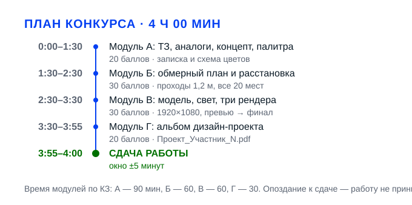
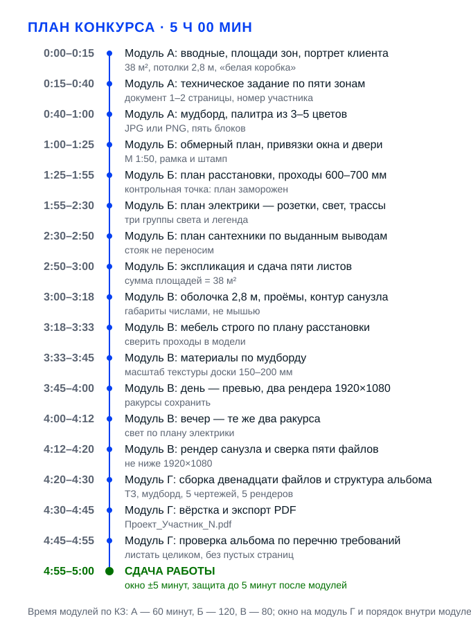
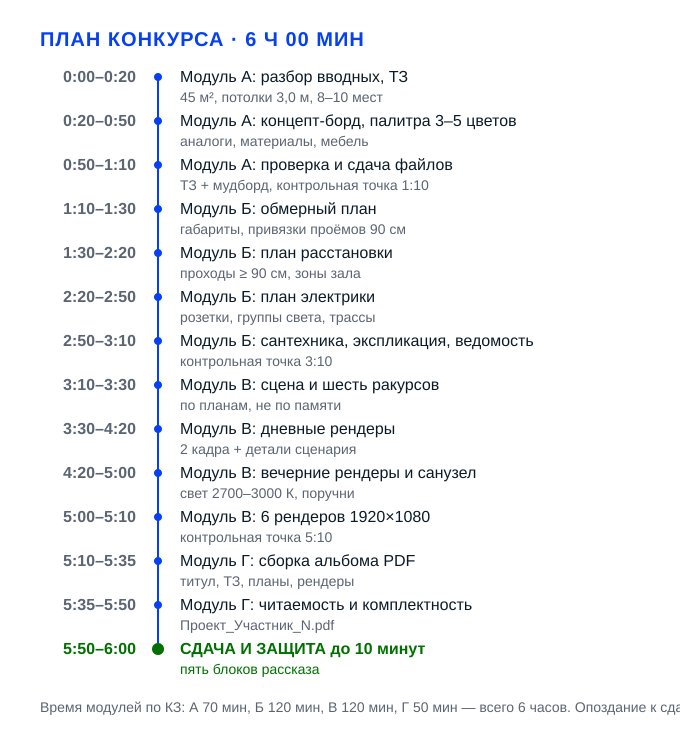

Дизайн интерьера (Р)
Задания ниже — официальные файлы «Абилимпикс» (источник: abilympics-russia.ru), разложенные по категориям. Решения написаны по тексту задания, регламенту и критериям оценки; в них указано, что именно проверяет эксперт.
Школьник
14–16 лет, базовый уровень заданияВыдержка из официального конкурсного задания: страницы, относящиеся к категории «Школьник» (стр. 5–6, 9–12 источника).
Пошаговое решение
Конкурсное задание для школьников — дизайн-проект учебного класса средней школы площадью 50 м²: прямоугольное помещение, два окна на одной длинной стене, одна дверь на противоположной, двадцать учеников 5–11 классов и учитель. Работа разбита на четыре модуля общим временем 4 часа и общей стоимостью 100 баллов: модуль А — предпроектный анализ и концепция с цветовой палитрой, 20 баллов и 90 минут; модуль Б — обмерный план и план расстановки мебели, 30 баллов и 60 минут; модуль В — трёхмерная модель и три рендера в разрешении 1920 на 1080, 30 баллов и 60 минут; модуль Г — альбом дизайн-проекта в PDF, 20 баллов и 30 минут. Баллы набираются не красотой картинки, а измеримыми признаками: проходы не меньше 1,2 м, все двадцать мест, подписанные коды цветов, привязки проёмов, совпадение рендера с чертежом. Порядок работы жёсткий: сначала цифры и чертёж, потом модель.

Задача 1. Пройти предпроектный анализ и собрать концепциюМодуль А · 20 баллов · 90 минут
Первый модуль занимает 90 минут из четырёх часов и стоит 20 баллов из ста. За это время нужно прочитать техническое задание, разобрать 3–4 аналога, которые раздаёт главный эксперт, письменно обосновать выбор одного из них, сформулировать концепт в одно-два предложения и собрать цветовую палитру из 3–4 цветов с кодификацией. Оценивают не красоту формулировок, а наличие файлов и конкретные признаки: записка — 2 балла, обоснование аналога — 3, концепт — 3, палитра — 2, количество цветов в палитре — 4, кодификация цветов — 3, соответствие концепции заданию — 3. Модуль заканчивается сдачей двух файлов, и без них дальше работать нечем: палитра понадобится в модуле В, записка — в модуле Г.
Действие 1.1. Разобрать техническое задание на цифры
Шаг 1.1.1
Выписываем из ТЗ на отдельный лист только цифры и связи: площадь 50 м², форма прямоугольная, два окна на одной длинной стене, одна входная дверь, 20 учеников 5–11 классов в возрасте 12–17 лет плюс учитель. Туда же переносим три требования безопасности — проходы между рядами и к выходу не менее 1,2 м, свободные подходы к окнам и дверям, дверь открывается наружу, в коридор — и три требования к свету: равномерный естественный свет на парты, общие потолочные светильники, отдельная подсветка зоны доски. Внизу рисуем от руки прямоугольник с окнами и дверью — список цифр сразу становится картинкой.
Этот лист — единственный источник, по которому потом сверяют и планировку, и рендеры. За соответствие концепции требованиям ТЗ в модуле А дают 3 балла, но те же требования проверяются ещё дважды: в модуле Б — 5 баллов за безопасность расстановки, в модуле В — 5 баллов за совпадение проёмов на рендере с планом. Если цифры не выписаны в начале, участник помнит половину, и проход 1,2 м «на глаз» превращается в 0,9 м.
На листе должно быть ровно шесть строк требований и ни одной цифры «примерно». Проверьте себя вопросом: если эксперт спросит, сколько мест и какой минимальный проход, ответ должен звучать без подглядывания — 20 мест и 1,2 м. Отдельно убедитесь, что окна и дверь стоят на тех же стенах, что в ТЗ: иначе планировка поедет с первого шага.
Самая частая ошибка — прочитать ТЗ один раз и начать сразу рисовать расстановку: тогда всплывают забытые пункты, и приходится переделывать план в середине модуля Б, теряя 15–20 минут из 60. Вторая ошибка — записать «проход примерно метр»: на чертеже это видно сразу, и вместе с 5 баллами за безопасность уходит и доверие к остальным размерам.
Эксперт подходит к участнику в первые 10 минут и слушает, как он пересказывает ТЗ. Проверяется не память, а то, выделил ли участник ключевые ограничения: 20 мест, 1,2 м прохода, два окна, дверь наружу.
Шаг 1.1.2
Раскладываем 240 минут конкурса по модулям и записываем план на том же листе: модуль А — 90 минут, модуль Б — 60, модуль В — 60, модуль Г — 30. Внутри модуля А сразу назначаем свои окна: 15 минут на чтение ТЗ и аналоги, 15 — на записку с обоснованием, 30 — на концепт и палитру, остаток — на проверку файлов. Рядом выписываем короткий чек-лист сдачи: пояснительная записка, обоснование выбора аналога, концепт, палитра из 3–4 цветов с кодами.
Модуль А — единственный, где время можно потратить незаметно: анализ аналогов и подбор цвета затягивают, а дальше модуль Б на 30 баллов просто не успевается. План по минутам нужен не для отчётности, а чтобы решение «этот аналог беру» принималось за 15 минут, а не за 40. Кроме того, прикидка времени показывает, что на палитру и записку остаётся около получаса — значит, писать надо коротко, по делу, а не на две страницы.
На листе стоят четыре окна времени, сумма 240 минут, и рядом — пять пунктов чек-листа сдачи. Через 30 минут после старта проверьте факт: если вы всё ещё выбираете аналог, план уже нарушен, и надо брать первый подходящий вариант и идти дальше.
Типичный провал — уйти в изучение аналогов на 50 минут и потом в спешке написать записку одной фразой. Тогда теряются 3 балла за обоснование и 3 за концепт, потому что формально текст есть, а связи с ТЗ в нём нет. Вторая ошибка — не оставить времени на сохранение файлов и обнаружить в конце модуля, что записка не выгружена.
Эксперт смотрит на темп: к 40-й минуте у участника должна быть записка с обоснованием, к 90-й — палитра. Отставание фиксируется, но оценивается результат, а не скорость.
Шаг 1.1.3
Из ТЗ отдельно выписываем требования безопасности и света в виде проверочных вопросов, на которые можно ответить «да» или «нет»: проходы между рядами и до выхода не меньше 1,2 м; подходы к обоим окнам свободны; перед дверью нет мебели; парты стоят боком к окнам, чтобы свет падал слева; над доской предусмотрена подсветка; потолочных светильников хватает на пасмурный день. Этот список держим рядом с собой в модуле Б.
Требования ТЗ в готовом виде звучат общими словами, а на чертеже превращаются в конкретные размеры, и именно на этой границе теряются баллы: 5 баллов за безопасность в модуле Б и 4 балла за естественный свет в модуле В. Список вопросов позволяет проверять планировку за минуту и не держать все ограничения в голове одновременно; это же список эксперт пролистывает, когда смотрит план расстановки.
Список состоит из шести пунктов, в каждом есть измеримый признак — метры, штуки, сторона света. Если пункт нельзя проверить линейкой или взглядом на план, он сформулирован плохо: «удобно» и «красиво» здесь не работают.
Ошибка — оставить требования в голове и вспомнить о них, когда план уже нарисован: переставлять десять парт в чужом файле за 15 минут до конца модуля Б почти невозможно, а проходы всё равно останутся 1,0–1,1 м. Вторая ошибка — поставить парты лицом к окну: свет падает в глаза и на экран, а за критерий естественного освещения балл снижают.
Эксперт проверяет план расстановки именно по этому списку и отдельно смотрит, не перекрыт ли подход к окнам и не стоит ли мебель в зоне открывания двери.
Действие 1.2. Разобрать аналоги и обосновать выбор
Шаг 1.2.1
Раскладываем перед собой 3–4 изображения классов, которые выдал главный эксперт, и разбираем каждое по трём осям: как расставлены парты и какие между ними проходы, откуда идёт свет и какие светильники висят на потолке, где хранятся учебники и пособия. На каждом изображении вслух или про себя отвечаем, что из него можно взять для класса площадью 50 м² на 20 мест, а что не влезет: островную расстановку на пятьдесят квадратов не поставить, а лёгкие парты на колёсах — можно.
Анализ аналогов — отдельный критерий на 3 балла, и проверяется он не наличием картинок, а связью «что увидел — что взял». Разбор по трём осям нужен ещё и практически: в модуле Б придётся расставлять мебель без права на долгие сомнения, и готовое решение из аналога экономит 10–15 минут. Кроме того, главный эксперт выдаёт аналоги не случайно — они задают планку подачи, по которой потом смотрят и вашу визуализацию.
По каждому изображению у вас есть три записи, а не одна: расстановка, свет, хранение. Если про какой-то аналог сказать нечего, значит, он просмотрен по диагонали — вернитесь и посмотрите на проходы и на количество мест за партами.
Частая ошибка — выбрать аналог по «красивости» картинки, не считая мест: на изображении восемь парт, а нужно двадцать, и вся композиция в 50 м² не повторяется. Тогда в записке появляется обоснование, которое не сходится с планом, и 3 балла за анализ превращаются в 1.
Эксперт читает обоснование и мысленно сверяет его с планом расстановки: если в записке написано «беру расстановку в два ряда», а на плане три ряда, критерий не засчитывается.
Шаг 1.2.2
Сводим аналоги в короткую таблицу на четыре столбца: количество мест, минимальный проход между партами, способ хранения, источник света. Проставляем по каждому аналогу цифры и отмечаем, сходится ли он с ТЗ: 20 мест, проход от 1,2 м, шкафы под пособия, два окна на одной стене. Строку, где сходится больше всего пунктов, обводим — она и будет основой проекта.
Таблица превращает вкусовой выбор в измеримый и защищает от главной ловушки — взять аналог, который в принципе не решается в 50 м². Сравнение по проходам напрямую связано с 5 баллами за безопасность: если выбранный аналог держит 1,2 м при девятнадцати местах, значит, и двадцатое место встанет без нарушения. Кроме того, четыре цифры в таблице — это готовый текст обоснования, останется переписать их предложениями.
В таблице четыре строки и четыре столбца, у каждого аналога заполнены все ячейки. Проверьте арифметику: сумма мест в выбранном аналоге должна быть не меньше 20, а проход — не меньше 1,2 м, иначе строка не годится, сколько бы она ни нравилась.
Ошибка — заполнить таблицу «примерно» и оставить выбор на потом: время уходит, а решения нет. Вторая — выбрать аналог с проходом 1,0 м и потом подгонять план под него: на чертеже размеры не сойдутся, и вместе с безопасностью просядет критерий соответствия ТЗ в модуле А.
Эксперт смотрит на цифры в таблице и на то, совпадает ли выбранный аналог с итоговой планировкой. Расхождение читается как непонимание собственного проекта.
Шаг 1.2.3
Пишем обоснование выбора двумя-тремя предложениями, обязательно с цифрами: «Беру второй аналог: в нём двадцать мест расставлены в два ряда с проходами по 1,2 м, доска на короткой стене и открытые стеллажи у задней стены — это прямо отвечает ТЗ на 20 учеников и 50 м². Из него беру расстановку парт и принцип открытого хранения, а цветовое решение разрабатываю своё, потому что в аналоге стены тёмные и для класса с двумя окнами это мало света». Никаких «мне понравилось» и «выглядит современно».
Критерий звучит как «в пояснительной записке присутствует анализ аналогов с обоснованием выбора» и стоит 3 балла; эксперт ищет в тексте не описание картинки, а причину. Обоснование с цифрами показывает, что участник думал про эргономику, а не выбирал по вкусу, и это же обоснование защищает проект, если эксперт спросит, почему парты стоят именно так, а не иначе.
В тексте есть номер или название выбранного аналога, хотя бы одна цифра из ТЗ (20 мест, 1,2 м, 50 м², два окна) и указание, что именно вы берёте, а что меняете. Если убрать из абзаца все прилагательные, смысл должен сохраниться.
Классика — написать «выбрал первый аналог, потому что он самый современный»: такая фраза не даёт баллов, потому что в ней нет связи с заданием. Вторая ошибка — обосновать выбор, а на плане сделать наоборот; тогда текст и чертёж противоречат друг другу, и это видно с первого взгляда.
Эксперт читает записку целиком, но обоснование смотрит первым: по нему понятно, понимает ли участник, зачем в проекте то или иное решение. Смотрит он и на то, назван ли аналог по номеру или хотя бы описанием.
Действие 1.3. Сформулировать концепт и собрать записку
Шаг 1.3.1
Формулируем концепт одним-двумя предложениями, где есть пространственная идея и польза для пользователя: «Светлый класс на двадцать мест: парты в два ряда с проходами 1,2 м, у окон зона групповой работы на шесть человек, у задней стены открытое хранение — так класс перестраивается из фронтальной работы в групповую за минуту». Записываем эту фразу отдельно, крупно, и дальше держим её перед глазами: она ответ на любой вопрос «почему так».
За сформулированный концепт дают 3 балла, а за его соответствие ТЗ — ещё 3, то есть шестая часть модуля А держится на одном-двух предложениях. Кроме того, концепт экономит время дальше: когда в модуле В непонятно, какой ракурс выбрать, решает не вкус, а концепт — показываем то, что в нём заявлено. Формулировка должна быть короткой, потому что длинный концепт невозможно проверить и легко потерять в тексте.
В концепте есть количество мест или размер прохода, названа минимум одна зона и сказано, что она даёт. Проверьте на пальцах: если по этой фразе другой человек сможет нарисовать похожий план, концепт рабочий; если получится абстракция — переписывайте.
Ошибка — написать «уютный современный класс для комфортного обучения»: это не концепт, а набор слов, и оба критерия — за концепт и за соответствие ТЗ — оцениваются низко. Вторая ошибка — уйти в три абзаца и потерять главное: эксперт ищет одну мысль, а находит описание мебели.
Эксперт сверяет концепт с планом и рендерами: зоны и количество мест должны совпадать. Если концепт обещает зону групповой работы, а на плане её нет — балл снижается.
Шаг 1.3.2
Открываем текстовый редактор и собираем пояснительную записку из трёх блоков: шапка с номером участника, компетенцией, категорией и названием объекта; раздел «Анализ аналогов» с таблицей и абзацем обоснования; раздел «Концепция проекта» с той самой фразой и двумя предложениями расшифровки. Шрифт один, кегль 12–14, поля 2 см, заголовки жирным. Файл сохраняем под именем с номером участника, например Пояснительная_записка_Участник_12, в папку, которую точно найдёте при сдаче.
Наличие файла записки — 2 балла, и получить их можно только за файл, а не за текст на экране. Структура из трёх блоков нужна и для читаемости: эксперт листает записку за минуту и должен сразу увидеть обоснование, концепт и упоминание палитры — в модуле Г за включение концепции и палитры в альбом дают ещё 4 балла, и берут их из этих же файлов.
Файл открывается, все три блока на месте, номер участника в шапке совпадает с номером на рабочем месте. Прочитайте записку вслух за минуту — если не успеваете, текст длинный, а не вы медленно читаете.
Частая ошибка — держать записку в черновике без шапки: файл есть, а критерий «наличие пояснительной записки» спорный, потому что непонятно, чья это работа. Вторая — сохранить документ в формате, который не откроется на другом компьютере, и потерять 2 балла на ровном месте.
Эксперт открывает записку при проверке модуля А и отмечает наличие шапки, обоснования, концепта. Всё это он ищет глазами, не читая целиком. Проверяет он и то, есть ли в записке упоминание палитры.
Шаг 1.3.3
Сверяем написанное с ТЗ по чек-листу: в тексте есть 20 мест, 1,2 м прохода, доска, место учителя, хранение, два окна и дверь наружу. Проверяем, что концепт не обещает того, чего нет в планировке: если написано «зона групповой работы», она должна появиться на плане в модуле Б. Затем перечитываем абзац обоснования и убираем прилагательные без цифр — текст должен остаться понятным.
Три балла за соответствие концепции ТЗ снимаются именно здесь: концепт, который обещает мобильные парты или компьютерную зону, а на плане их нет, читается как невыполненное обещание. Сверка занимает пять минут и страхует сразу три критерия в двух модулях — 3 балла в А и 5 баллов за расстановку в Б.
Каждое существительное из концепта должно находиться на будущем плане: зона, доска, хранение, место учителя. Если чего-то не будет, уберите это из текста сейчас, а не после рендеров. Так эксперт не найдёт расхождений между текстом и планом.
Ошибка — оставить в концепте красивую деталь «мягкие пуфы у окна», не поставив их на план: эксперт видит расхождение и снижает балл за соответствие. Вторая — переписать концепт в конце модуля Г, когда альбом уже собран.
Эксперт делает это сверление автоматически: читает концепт и ищет названные зоны на плане расстановки. Совпадение — плюс, расхождение — минус по двум критериям.
Действие 1.4. Собрать цветовую палитру
Шаг 1.4.1
Выбираем ровно четыре цвета и распределяем роли: базовый светлый на стены и потолок (тёплый белый, коэффициент отражения 0,7–0,8), второй нейтральный на пол и плинтус (светло-серый), цвет дерева на парты и шкафы и один акцент — например, синий на зону доски и торец стеллажа. Пропорция простая: 60 % базы, 30 % нейтрального и дерева, 10 % акцента. Акцент ставим туда, куда смотрит класс, а не на потолок.
Палитра — 2 балла, а количество цветов в ней — ещё 4; при этом больше четырёх цветов ТЗ не разрешает, а меньше трёх даёт неполный балл. Роли цветов нужны не для красоты: в модуле В за соответствие рендера палитре дают 4 балла, и проверяется это по конкретным поверхностям — стены, пол, мебель, акцент. Если палитра собрана без ролей, при настройке материалов начинается подбор «на глаз», и рендер расходится с заявленными кодами.
В палитре четыре цвета, у каждого подписана роль и примерная площадь применения. Проверьте светлоту: стены должны быть самыми светлыми, пол — темнее стен, акцент — самый насыщенный. Посмотрите на схему, прищурившись: если акцент занимает больше десятой части, класс будет выглядеть тёмным.
Ошибка — взять четыре насыщенных цвета «чтобы было ярко»: на рендере класс превращается в тёмное помещение, а балл за естественный свет падает. Вторая — взять пять-шесть оттенков: критерий про 3–4 цвета не выполняется, 4 балла уходят, хотя работа выглядит неплохо.
Эксперт считает цвета на схеме и сверяет их с рендером: стены, пол, мебель, акцентная плоскость. Совпадение по оттенку — плюс, «похоже, но не то» — минус.
Шаг 1.4.2
Подписываем каждый цвет так, как требует задание: название, код из системы RAL, Pantone или HEX и место применения. Например: «Белый тёплый RAL 9010, #F1EEE4 — стены и потолок»; «Серый светлый RAL 7035, #D7D7D7 — пол и плинтус»; «Дуб натуральный, #D9BC8C — парты, шкафы»; «Синий акцент Pantone 293 C, #003DA5 — зона доски, торцы стеллажей». Коды берём из веера или из справочника, а не придумываем по памяти, и проверяем, что HEX и RAL не противоречат друг другу.
Кодификация палитры — отдельные 3 балла, и это самый простой балл в модуле: он зависит только от аккуратности подписи. Кроме того, коды связывают этапы: по ним в модуле В настраиваются материалы, а в модуле Г — подписи в альбоме. Без кодов проект выглядит как настроение, а не как рабочая палитра, и эксперт не может проверить соответствие рендера цвету.
У каждого цвета есть три элемента: название, код, назначение. Проверьте коды в списке: RAL должен существовать, HEX начинаться с решётки и содержать шесть знаков. Если код не находится в справочнике, замените его на ближайший реальный.
Ошибка — подписать только «синий», «бежевый», без кода: 3 балла за кодификацию не начисляются. Вторая — придумать номер RAL по памяти и получить цвет, которого в веере нет: эксперт это замечает, и доверие к палитре пропадает.
Эксперт сверяет подписи с веером RAL или с таблицей HEX, если сомневается. Одна несуществующая ссылка обычно не обнуляет критерий, три — обнуляют. Если код не находится, участник открывает веер — это снимает вопрос.
Шаг 1.4.3
Оформляем палитру схемой: четыре прямоугольника одинаковой высоты в один ряд, заливка цветом, под каждым — название, код и назначение. Сверху заголовок «Цветовая палитра проекта» и номер участника. Собираем это в любом графическом редакторе или в презентации на слайде 1600×900 и выгружаем в PNG с разрешением не меньше 150 dpi, а если успеваете — вставляем ту же схему прямо в пояснительную записку на первую страницу под концептом.
Палитра нужна отдельным файлом-изображением, если её нет в записке: за наличие дают 2 балла, за 3–4 цвета — 4, за коды — 3, то есть до 9 баллов зависят от одной картинки. Вставка в записку экономит один файл и один шаг при сборке альбома в модуле Г, где за включение палитры в проект дают 4 балла. Пропорции схемы тоже важны: на распечатке цвета должны читаться без монитора.
Откройте PNG и уменьшите до ширины 10 см — названия и коды должны остаться читаемыми. Проверьте, что заливки не «съелись» при выгрузке: на схеме должен быть ровно тот цвет, который вы выбрали, а не его бледная копия.
Частая ошибка — сделать схему в тёмной презентации с прозрачным фоном: при выгрузке в PNG белые подписи пропадают. Вторая — оставить палитру только в редакторе и не выгрузить файл: к моменту сдачи модуля А изображения нет, и 2 балла за наличие теряются.
Эксперт смотрит палитру вместе с запиской на этапе проверки модуля А и отдельно отмечает, можно ли по ней воспроизвести цвета в 3D. Если палитры нет, спросить нечего, и баллы не ставятся.
Задача 2. Вычертить обмерный план и расстановку мебелиМодуль Б · 30 баллов · 60 минут
Модуль Б стоит 30 баллов — больше любого другого, и целиком строится на точности. За 60 минут нужно сделать два чертежа: обмерный план с габаритами, площадью и привязками окон и двери, и план расстановки мебели, где стоят все двадцать учебных мест, доска, стол учителя, хранение, радиаторы и розетки. Раскладка баллов показывает, за что их дают: наличие каждого чертежа — по 4 балла, габариты и площадь — 4, привязки проёмов — 4, полный состав мебели — 5, соблюдение безопасности с проходами 1,2 м — 5, радиаторы и розетки — 4. Здесь же самая большая опасность всего конкурса: ошибка в масштабе или забытый размер тянут за собой ещё и модуль В, потому что модель строится по этому плану.
Действие 2.1. Подготовить подоснову и лист
Шаг 2.1.1
Кладём перед собой план помещения, выданный главным экспертом, и сначала просто сверяем его с ТЗ: контур прямоугольный, два оконных проёма на одной длинной стене, один дверной проём на противоположной длинной стене, под окнами радиаторы, у доски и у стола учителя розетки. Отмечаем карандашом на распечатке всё, что указано: где проходит ось окон, сколько до угла, где стоит радиатор. Если в подоснове какого-то элемента не хватает, сразу идём к эксперту и уточняем, а не додумываем.
Обмерный план и расстановка оцениваются по составу элементов, и два критерия прямо перечисляют, что должно быть на листе: привязки проёмов (4 балла) и расположение всех радиаторов и розеток (4 балла). Недостающий элемент подосновы невозможно нарисовать правильно — можно только придумать, а придуманная привязка розетки на чертеже видна сразу. Уточнение у эксперта занимает минуту в начале модуля и экономит переделку листа в конце.
На распечатке отмечены все четыре группы элементов: контур, окна, дверь, инженерка. Проверьте количество: окон два, радиаторов два, дверь одна. Если чего-то не хватает, вы ещё не готовы чертить. Тогда же отметьте на распечатке высоты проёмов, если они указаны.
Ошибка — начать чертить по памяти, не разобрав подоснову: потом выясняется, что розетка нарисована не там, где она есть, а переделывать план за 10 минут до сдачи бессмысленно. Вторая — принять подоснову за готовый чертёж и не заметить, что на ней нет привязок.
Эксперт проверяет, совпадает ли обмерный план участника с выданной подосновой. Сдвиг окна на 200 мм он замечает, потому что у него есть исходник. Если разница есть, он просит объяснить, откуда взялся размер.
Шаг 2.1.2
Создаём новый лист А3 в масштабе 1:50: при таком масштабе класс 8,4 на 6,0 м занимает 168 на 120 мм на бумаге и спокойно встаёт вместе с размерными цепочками. Чертим рамку: слева 20 мм на подшивку, с остальных сторон по 5 мм, в правом нижнем углу — основную надпись 185 на 55 мм. Сразу заводим слои: «стены», «проёмы», «размеры», «мебель», «инженерка», «текст» — и дальше рисуем только по слоям.
Масштаб и рамка — это требования основ черчения, а не украшение: без рамки и основной надписи с номером участника и названием чертежа обмерный план не засчитывается как чертёж, даже если все размеры верны. Слои нужны для скорости: когда через полчаса придётся гасить размеры или менять толщину мебели, вы включите один слой, а не будете искать линии по всему листу.
Откройте настройки листа: формат А3, масштаб 1:50, единицы — миллиметры. Проверьте линейкой на экране: стена 8400 мм должна занимать 168 мм при печати, то есть примерно две трети ширины листа. Штамп должен занимать правый нижний угол, а не середину листа.
Самая частая ошибка — чертить в масштабе 1:100, а потом не находить место для размерных цепочек: текст налезает друг на друга. Вторая — рисовать всё на одном слое и потом не суметь убрать размеры с плана расстановки.
Эксперт смотрит на лист целиком: рамка, штамп, масштаб. Несоответствие формату сразу читается как небрежность, даже когда размеры верны. Масштаб он сверяет по габариту: 8400 мм на листе А3 — это 168 мм.
Шаг 2.1.3
Вычерчиваем контур помещения по подоснове: наружные стены толщиной 300 мм, внутренние — 150 мм, проёмы вырезаем по фактическим размерам. Окна показываем тремя линиями с подоконной частью, дверь — полотном, открытым наружу, и дугой открывания радиусом 900 мм. Толщину линий ставим сразу: контур стен 0,7–0,8 мм, проёмы 0,4 мм, всё остальное тоньше. Это сэкономит время на оформлении в конце модуля.
Контур — основа всех остальных слоёв: по нему считаются площади зон и проверяются проходы. Дверь, показанная открывающейся внутрь, — прямое нарушение ТЗ, а требование «дверь открывается наружу» записано отдельным пунктом, и его видно на чертеже с первого взгляда. Толщины линий дают те самые 3 балла за читаемость в модуле Г: на уменьшенной копии стены должны оставаться заметно жирнее мебели.
Промерьте контур: 8400 на 6000 мм по внутренним граням, площадь 50,4 м². Проверьте проёмы: два окна по 1800 мм, дверь 900 мм, дуга открывания уходит в коридор, а не в класс. Если дуга не помещается на листе, увеличьте формат, а не радиус.
Ошибка — нарисовать стены одной линией без толщины: тогда непонятно, где внутренняя грань, и все размеры съезжают на 150–300 мм. Вторая — показать дверь открывающейся внутрь, что противоречит ТЗ и снимает балл за безопасность.
Эксперт смотрит на проёмы и на направление открывания двери. Дверь внутрь — типовая ошибка, которую он ищет целенаправленно. Если дверь показана неверно, дальше он смотрит весь лист подряд.
Действие 2.2. Нанести размеры и привязки
Шаг 2.2.1
Ставим три размерные цепочки: первая — габариты 8400 и 6000 мм по наружным граням стен, вторая — размеры по внутренним граням, третья — привязки проёмов. Под планом пишем площадь: 8,4 × 6,0 = 50,4 м², округляем в подписи до 50 м² по ТЗ и указываем обе цифры, чтобы не было вопросов. Размерный текст ставим 2,5 мм, выносные линии не пересекаем. Каждая цепочка идёт отдельной линией, без общих участков.
За габаритные размеры и общую площадь дают 4 балла — это отдельный критерий, который проверяется механически: есть ли на листе длина, ширина и площадь. Три цепочки нужны потому, что по одной невозможно проверить ни проёмы, ни толщину стен: эксперт должен увидеть, что 8400 мм — это габарит, а не случайная цифра. Площадь подтверждает, что помещение соответствует ТЗ на 50 м².
Сложите цепочку по длинной стене: сумма отрезков должна дать 8400 мм, по короткой — 6000 мм. Площадь в подписи совпадает с перемножением габаритов. Если не сходится на 100 мм, ищите ошибку в привязках, а не подправляйте цифру в тексте.
Частая ошибка — поставить один габаритный размер и считать вопрос закрытым: теряются 4 балла, потому что критерий требует и размеры, и площадь. Вторая — написать площадь «50 м²» без габаритов: цифра выглядит взятой из ТЗ, а не полученной обмером.
Эксперт складывает цепочку на калькуляторе, если что-то выглядит подозрительно. Несходящаяся сумма — самый быстрый способ потерять оба размерных критерия.
Шаг 2.2.2
Наносим привязки проёмов отдельной цепочкой: левое окно — 1000 мм от угла, ширина 1800 мм; между окнами 2800 мм; правое окно 1800 мм и 1000 мм до правого угла. Дверь на противоположной стене: 1000 мм от правого угла, проём 900 мм, высота 2100 мм подписывается на разрезе или в примечании. Каждую привязку ставим от угла до края проёма, а не до его середины — так размер можно проверить на месте.
Привязки окон и двери — ещё 4 балла, и это тот размер, который чаще всего теряют: окно нарисовано, а на каком расстоянии от угла — неизвестно. Привязки нужны и практически: по ним в модуле В ставятся проёмы в 3D-модели, и за совпадение проёмов с обмерным планом дают 5 баллов. Размер до края проёма, а не до оси, выбран потому, что ось на объекте не видна.
Проверьте сумму: 1000 + 1800 + 2800 + 1800 + 1000 = 8400 мм по длинной стене. Если сумма не равна габариту, значит, одна из привязок неверна. Для двери убедитесь, что от проёма до угла остаётся не меньше 1000 мм — иначе не встанет полотно с наличником.
Ошибка — привязать окна к середине стены «на равных расстояниях», не сверившись с подосновой: на объекте окна стоят не симметрично, и чертёж становится непроверяемым. Вторая — забыть про высоту дверного проёма и потом в 3D получить проём на всю стену.
Эксперт сверяет привязки с подосновой по каждому проёму. Расхождение в 100 мм он прощает, в 500 мм — уже нет. Каждое расхождение он проверяет по исходнику и просит перемерить.
Шаг 2.2.3
Добавляем инженерку: два радиатора под окнами размером 1200 на 150 мм, отступ от стены 50 мм; розетки — две у доски на высоте 900 мм, две у стола учителя, одна у шкафа для зарядки пособий. Обозначаем их условными знаками и выносим в примечание: «Р — розетка 220 В, h=900», «Радиатор отопления». Заполняем основную надпись: номер участника, «Обмерный план», масштаб 1:50, и сохраняем файл отдельно, не поверх будущей расстановки.
Расположение всех радиаторов и розеток — 4 балла, причём критерий требует именно всех: эксперт считает знаки и сверяет с подосновой. Радиаторы важны ещё и планировочно: под ними нельзя ставить шкаф, и это ограничение придётся учитывать в расстановке. Отдельное сохранение обмерного плана нужно потому, что расстановка делается на его копии, а исходник должен остаться с одними размерами.
На листе два радиатора и пять розеток, у каждого понятный знак и расшифровка в примечании. В штампе стоит название «Обмерный план» и номер участника. Файл сохранён под отдельным именем — проверьте это в списке файлов, а не по памяти.
Типичная ошибка — нарисовать радиаторы, но не подписать, и эксперт не понимает, что это за прямоугольники под окнами. Вторая — сохранить расстановку поверх обмерного плана: остаётся один файл вместо двух, и 4 балла за наличие обмерного плана теряются.
Эксперт считает инженерные знаки и сверяет их положение с выданной подосновой. Пропущенная розетка у доски — минус по критерию. Пустые места на стенах он тоже отмечает: значит, розетки где-то потеряны.
Действие 2.3. Расставить мебель и оборудование
Шаг 2.3.1
Делим помещение на зоны и наносим их тонкими линиями: фронтальная зона у доски глубиной 1,2 м, учебная зона на двадцать мест, рабочее место учителя у окна слева от доски, зона хранения вдоль задней стены, у окон — площадка для групповой работы на шесть человек. Сразу считаем баланс площадей: фронтальная зона 6,0 на 1,2 м — 7,2 м², учебная зона вместе с проходами 6,0 на 5,5 м — 33 м², хранение вдоль задней стены 6,5 на 0,45 м — 2,9 м², и на подход к двери вместе с местом учителя остаётся около 7 м².
Зонирование — то, за что в критериях отвечает формулировка «все требуемые ТЗ предметы мебели и в необходимом количестве» (5 баллов): проверяются зоны из задания — фронтальная у доски, индивидуальные места на 20 учеников, место учителя, хранение. Баланс площади нужен, чтобы зоны не спорили друг с другом: если учебная зона займёт 35 м², проходы станут по 0,9 м, и 5 баллов за безопасность уйдут.
На плане видны пять подписанных зон, и сумма их площадей не превышает 50 м². Учебная зона вмещает ровно двадцать посадочных мест — пересчитайте стулья, а не парты. Если сумма меньше 45 м², часть помещения осталась без назначения.
Ошибка — начать с расстановки парт и только потом искать место для шкафов: хранение выдавливается в проход. Вторая — забыть зону учителя, хотя в ТЗ она названа отдельно, и 5 баллов за состав мебели снижаются.
Эксперт ищет на плане зоны, названные в ТЗ, и отмечает, все ли они есть. Отсутствие зоны хранения видно сразу — у задней стены пусто. Если зоны не подписаны, он восстанавливает их по мебели и теряет время.
Шаг 2.3.2
Ставим десять двухместных парт 1200 на 500 мм: две колонны по пять рядов, лицом к доске на короткой стене. Между колоннами проход 1200 мм, от колонн до стен — по 1200 мм, от доски до переднего края первых парт — 1200 мм. Шаг между рядами по глубине: 500 мм парта плюс 600 мм на стул и отход, итого 1100 мм. Стулья 400 на 400 мм ставим попарно, с зазором 100 мм от парты.
Проходы 1,2 м — прямое требование ТЗ и 5 баллов за безопасность; при ширине помещения 6000 мм раскладка 1200 + 1200 + 1200 + 1200 + 1200 сходится ровно, то есть запас нулевой и ошибиться в парте нельзя. Свет падает с длинной стены, поэтому парты стоят перпендикулярно окнам: тогда свет идёт слева, а не в лицо — это же оценивается в модуле В по естественному освещению (4 балла).
Промерьте на чертеже три прохода и фронтальную зону: каждый должен быть не меньше 1200 мм. Пересчитайте места: 10 парт по два места — 20. Убедитесь, что ни одна парта не перекрывает радиатор. Если проход вышел 1150 мм, сдвиньте колонну на 50 мм к стене.
Классическая ошибка — поставить три колонны парт, чтобы «влезло больше»: проходы сжимаются до 0,8–0,9 м, и 5 баллов за безопасность теряются вместе с читаемостью плана. Вторая — развернуть парты лицом к окну, что даёт блики и портит рендер.
Эксперт берёт линейку или меряет по чертежу каждый проход. Именно здесь чаще всего расходятся заявленные и фактические 1,2 м. Смотрит он на три вещи: проходы, фронтальную зону и расстояние до радиаторов.
Шаг 2.3.3
Добавляем остальную мебель по ТЗ: интерактивную доску 1600 на 1000 мм на короткой стене по центру, тумбу под неё 800 на 400 мм, стол учителя 1400 на 600 мм у левого окна, стул учителя, два шкафа 1000 на 450 мм и стеллаж 800 на 400 мм вдоль задней стены, не перекрывая подход к двери. Каждый предмет подписываем номером позиции и выносим в экспликацию.
Состав мебели — 5 баллов, и критерий требует всех предметов в нужном количестве: доска, двадцать мест, стол и стул учителя, хранение. Тумба под доской нужна практически — на ней лежат маркеры и пульт, и без неё зона доски в рендере выглядит пустой. Шкафы вдоль задней стены дают 3 м² хранения, чего на 20 учеников хватает только при открытых полках — поэтому стеллаж ставим рядом.
Сверьте план с перечнем: парт 10, стульев 20 плюс один учительский, доска одна, стол учителя один, шкафов два, стеллаж один. В экспликации столько же строк, сколько номеров на плане. Сверяйте по номерам, а не по названиям: они не повторяются.
Ошибка — поставить шкаф перед окном: подход к окну перекрыт, и это прямое нарушение ТЗ, за которое снимают и безопасность, и естественный свет. Вторая — оставить доску без тумбы и без места для маркеров: на рендере это читается как недоделанная зона.
Эксперт сверяет количество предметов с ТЗ и смотрит, не закрывают ли шкафы окна и радиаторы. Отдельно он отмечает тумбу у доски: без неё зона выглядит недодуманной.
Шаг 2.3.4
Проверяем безопасность по списку из модуля А: три прохода по 1200 мм, подходы к обоим окнам свободны на 600 мм, перед дверью площадка 1200 на 1200 мм и полотно открывается наружу, пути эвакуации не перекрыты. Дополнительно проверяем инклюзивный сценарий: у первых парт с краю оставляем место, куда встаёт кресло-коляска с разворотом 1500 мм, и отмечаем эту позицию на плане.
5 баллов за соблюдение требований безопасности — самая дорогая строка модуля Б после состава мебели, и проверяется она именно на плане. Площадка у двери нужна потому, что дверь открывается наружу и в классе перед ней всё равно должно хватать места для прохода. Инклюзивная позиция не входит в обязательные критерии, но задание прямо предлагает заложить доступную среду, и эксперт отмечает такие решения как плюс.
Пройдите по плану от каждой парты до двери: маршрут нигде не сужается меньше 1200 мм. Проверьте, что зона открывания двери свободна и что перед радиаторами нет мебели ближе 150 мм. Пройдите маршрут и в обратную сторону, от двери до последней парты.
Ошибка — поставить стол учителя так, что он сужает проход у двери до 900 мм: формально мебель вся, но безопасность нарушена. Вторая — нарисовать дверь открывающейся внутрь, что сразу снимает баллы за безопасность.
Эксперт проходит по плану маршрутом ученика от последней парты до выхода и фиксирует сужения. Это самая наглядная проверка модуля. Он же смотрит, не стоит ли мебель в зоне открывания полотна.
Действие 2.4. Оформить чертежи и сдать файлы
Шаг 2.4.1
Собираем условные обозначения: на свободном поле справа от плана ставим небольшую таблицу «Экспликация оборудования» с номерами позиций, названием и размерами каждого предмета, а рядом — легенду инженерных знаков. Нумерацию на плане делаем кружками диаметром 7–8 мм с цифрой внутри, чтобы номера не сливались с линиями мебели. Шрифт один — например, ISOCPEUR или Arial, высота 2,5 мм для позиций и 3,5 мм для заголовков.
Экспликация не названа отдельным критерием, но она закрывает сразу два: «все требуемые предметы мебели в необходимом количестве» и «все тексты и подписи четко читаемы» в модуле Г (3 балла). Без легенды эксперт не понимает, какой прямоугольник шкаф, а какой стеллаж, и считает состав мебели по догадке. Единый шрифт и одинаковые кружки создают впечатление чертежа, а не наброска.
В экспликации столько строк, сколько номеров на плане, и каждый номер встречается на плане ровно один раз. Уменьшите лист до 50 % — номера и подписи должны оставаться различимыми. Проверьте ещё, что номера не попали на размерные линии.
Ошибка — подписать мебель прямо на плане словами «парта», «шкаф»: на 20 местах текст налезает друг на друга и чертёж становится нечитаемым, а это минус 3 балла в модуле Г. Вторая — сделать экспликацию, но забыть пронумеровать предметы.
Эксперт пользуется экспликацией, когда пересчитывает мебель. Пропущенная позиция или номер без строки сразу бросается в глаза. Экспликацию он листает построчно и сверяет с планом выборочно.
Шаг 2.4.2
Приводим графику к единому виду: контур стен 0,8 мм, проёмы 0,4 мм, мебель 0,2 мм, инженерка 0,25 мм, размерные и выносные линии 0,15 мм, штриховые линии зон — пунктиром. Проверяем, что размерный текст не пересекается с линиями и не лежит на мебели, а выносные линии не проходят через размерные. Все надписи ставим горизонтально, кроме размеров на вертикальных цепочках — их читают снизу вверх.
Читаемость — 3 балла в модуле Г и условие, при котором эксперт вообще может проверить остальные критерии: нечитаемый размер не считается нанесённым. Разница толщин линий — это язык чертежа: по ней видно, что перед вами стена, а не контур стола, без всяких подписей. Единая графика ещё и экономит время на проверке: ошибки видны сами.
Распечатайте или уменьшите лист и посмотрите с расстояния вытянутой руки: стены должны читаться как самые жирные линии, размеры — как самые тонкие. Ни один текст не должен налезать на другой. Проверьте это на уменьшенной копии, а не в масштабе 1:1.
Ошибка — сделать все линии одной толщины: чертёж превращается в сетку, и невозможно понять, где стена, а где шкаф. Вторая — оставить размеры, налезающие на мебель: эксперт не сможет проверить проходы и снимет балл за читаемость.
Эксперт оценивает чертёж на экране и в уменьшенном виде. Толщины линий — первое, что показывает уровень владения программой. Нечитаемый размер он считает ненанесённым, и это снимает балл дважды.
Шаг 2.4.3
Выгружаем оба чертежа: обмерный план и план расстановки — в PDF и дополнительно в PNG с разрешением 200–300 dpi, чтобы их можно было вставить в альбом без потери качества. Имена файлов делаем говорящими: «Обмерный_план_Участник_12», «План_расстановки_Участник_12». Оба файла копируем в папку сдачи и проверяем, что открываются они, а не только создаются.
За наличие каждого чертежа дают по 4 балла, и получить их можно только за файл в нужном формате: чертёж, оставшийся внутри программы, не существует для эксперта. PNG нужен для модуля Г, где чертежи вставляются в альбом: векторный PDF в некоторых редакторах вставляется с потерей шрифтов, а растр — всегда одинаково. Говорящие имена экономят минуты при сдаче — их ищут, а не угадывают.
Откройте каждый файл заново и проверьте три вещи: лист целиком без обрезки краёв, шрифты на месте, разрешение не меньше 200 dpi. Убедитесь, что в папке сдачи лежат оба файла в двух форматах. Имена без пробелов открываются на любом компьютере.
Ошибка — сохранить чертёж в формате программы и надеяться, что эксперт откроет: у него может не быть нужной версии, и 8 баллов за два чертежа сгорают. Вторая — выгрузить PDF с обрезанным краем, где пропала часть размерной цепочки.
Эксперт открывает файлы сразу после модуля и проверяет, что видит тот же лист, что и участник у себя на экране. Если файл не открывается, он просит показать чертёж на экране участника.
Задача 3. Собрать трёхмерную модель и получить три рендераМодуль В · 30 баллов · 60 минут
Модуль В — визуализация, ещё 30 баллов, и здесь впервые видно, насколько честно сделан план. За 60 минут нужно задать помещение 8,4 на 6,0 м с высотой 3 м, поставить проёмы по обмерному плану, расставить ту же мебель, что на плане расстановки, настроить материалы по палитре, поставить источники света из окон и потолочные светильники, а затем получить не меньше трёх изображений с разных ракурсов в разрешении 1920 на 1080 пикселей. Баллы распределены жёстко: три рендера — 5, разрешение — 4, совпадение стен и проёмов с планом — 5, совпадение мебели — 5, цвета по палитре — 4, естественный свет — 4, искусственный — 3. Каждый пропуск виден на картинке без пояснений, поэтому порядок работ здесь важнее скорости.
Действие 3.1. Построить помещение и расставить мебель
Шаг 3.1.1
Открываем выбранную программу и первым делом выставляем единицы измерения — миллиметры, иначе стена 8,4 превратится в 8,4 мм и всё придётся начинать заново. Загружаем план расстановки как подложку на уровень пола в масштабе 1:1 и привязываем его углом к началу координат. Проверяем совпадение: подложка должна быть 8400 на 6000 мм, а не «примерно такого размера».
Точность модели решает два критерия сразу: совпадение стен и проёмов с обмерным планом (5 баллов) и совпадение мебели (5 баллов). Масштабирование подложки — единственная операция, которая делает остальную работу осмысленной: если подложка на 5 % больше, все проёмы и парты сдвинутся, и на рендере это будет видно по тому, что проходы не совпадают с заявленными 1,2 м.
Измерьте инструментом «размер» расстояние между крайними точками подложки: должно быть ровно 8400 и 6000 мм. Увеличьте масштаб у окна: линии подложки должны совпадать с нарисованной стеной без зазора.
Ошибка — импортировать картинку плана и просто растянуть её мышью: пропорции ломаются, и класс получается шире, чем есть. Вторая — работать в сантиметрах при подложке в миллиметрах: стены встают в десять раз меньше нужного.
Эксперт на рендере ищет несовпадения с планом: сдвинутое окно, лишнюю стену, пропавшую колонну. Первые полминуты он смотрит именно на геометрию. Сдвиг окна на 300 мм он видит по световому пятну на полу.
Шаг 3.1.2
Строим помещение по контуру подложки: стены толщиной 300 мм по наружным граням, высота 3000 мм, перекрытие сверху выключаем на время настройки света, чтобы в помещение попадало небо. Проёмы вырезаем по привязкам с обмерного плана: два окна 1800 на 1800 мм с подоконником на высоте 800 мм (левое — 1000 мм от угла, правое — 1000 мм от противоположного), дверь 900 на 2100 мм с отступом 1000 мм от правого угла на противоположной длинной стене.
Совпадение стен, окон и дверей с обмерным планом — 5 баллов, и проверяется это простым сравнением: эксперт кладёт рядом чертёж и рендер. Высота подоконника 800 мм важна не только для геометрии: от неё зависит, как свет ложится на парты, а это уже 4 балла за естественное освещение. Дверь на своём месте нужна для ракурса из коридора и для проверки проходов.
Переключитесь в вид сверху и наложите модель на подложку: стены, окна и дверь должны совпасть по контуру. Проверьте высоты: окно от 800 до 2600 мм, дверь от 0 до 2100 мм, стены 3000 мм. Если окно не совпало, поправьте проём, а не подложку.
Частая ошибка — вырезать окна «где красиво» и получить на рендере свет не с той стороны: тогда рушится вся логика расстановки парт. Вторая — сделать окно от пола до потолка: класс на 50 м² с панорамным остеклением выглядит как офис и не соответствует заданию.
Эксперт сравнивает количество и положение проёмов: два окна на длинной стене, дверь на противоположной. Третье окно или дверь в торце — минус 5 баллов.
Шаг 3.1.3
Перетаскиваем из библиотеки типовую мебель и ставим её по плану расстановки: парты 1200 на 500 мм в двух колоннах по пять, стулья, стол учителя 1400 на 600, интерактивную доску 1600 на 1000 на короткой стене, тумбу, два шкафа и стеллаж у задней стены. Каждый предмет ставим с привязкой к стене или к соседнему предмету, а не «на глазок»: в свойствах задаём точные координаты и поворот кратно 90 градусов.
Расстановка мебели на рендере должна совпадать с планом — это 5 баллов, столько же, сколько за геометрию. Когда предметы стоят по координатам, совпадение гарантировано и проверяется за минуту; при расстановке мышью парты уезжают на 150–200 мм, и проходы на картинке выглядят иначе, чем в чертеже. Библиотечная типовая мебель — это ещё и требование ТЗ: парты, стулья, шкафы стандартные.
В виде сверху снова наложите модель на подложку: контуры парт должны лежать поверх контуров с чертежа. Пересчитайте места: десять парт, двадцать стульев, один учительский. Если контуры не совпадают, сдвиньте модели, а не подложку.
Ошибка — поставить мебель «похоже» и не сверить с планом: эксперт находит расхождение по количеству или по стороне, и 5 баллов уходят. Вторая — взять модели нестандартной мебели, например круглые столы, которых нет в плане.
Эксперт считает парты и стулья на рендере и сравнивает с планом. Отсутствие шкафов или доски читается как незавершённая модель. Пропавшую тумбу у доски он тоже замечает.
Действие 3.2. Настроить материалы по палитре
Шаг 3.2.1
Открываем палитру из модуля А и по ней задаём материалы поверхностей: стены и потолок — тёплый белый RAL 9010, пол — светло-серый RAL 7035 или светлый линолеум с фактурой дерева, плинтус в тон полу. Цвет вводим числом, а не подбором на глаз: почти в каждой программе можно задать HEX или RGB вручную. Шероховатость стен ставим высокую, 0,8–0,9, чтобы не было пластикового блеска.
За соответствие цветов на рендере палитре дают 4 балла, и проверяют его сравнением картинки со схемой цветов. Светлые стены с высоким коэффициентом отражения работают и на естественное освещение (4 балла): тёмная стена съедает свет, и класс на рендере выглядит мрачным даже при правильных светильниках. Высокая шероховатость нужна потому, что глянцевая стена даёт блики, которых в школе не бывает.
Сделайте тестовый рендер 800 на 600 и сравните цвет стены с квадратом палитры на том же экране. Разница должна быть в пределах оттенка, а не «серый вместо белого». Проверьте, что пол темнее стен, а не наоборот.
Ошибка — оставить материалы по умолчанию, белые и глянцевые: на рендере класс выглядит как макет, и 4 балла за соответствие палитре не начисляются. Вторая — покрасить стены в насыщенный синий «для акцента»: света не хватает, и картинка темнеет.
Эксперт держит палитру рядом с рендером и сравнивает четыре поверхности: стены, пол, мебель, акцент. Совпадение трёх из четырёх ещё даёт балл, двух — уже нет.
Шаг 3.2.2
Настраиваем материалы мебели: парты и шкафы — светлый дуб с текстурой, столешницы — матовый ламинат, металлические ноги — тёмный матовый металл, стулья — пластик светло-серого цвета. Текстуру дерева масштабируем по размеру столешницы: рисунок не должен быть крупнее 100 мм на волокно, иначе парта 1200 мм выглядит игрушечной. Акцентный синий оставляем только на доске и торцах стеллажа.
Масштаб текстуры — главный признак реалистичности на школьном уровне: крупное волокно сразу выдаёт неопытную настройку и портит впечатление от всей работы. Разумные материалы мебели поддерживают критерий соответствия палитре (4 балла), потому что дерево и серый пластик в ней заявлены, а вот яркие цвета вне палитры — нет. Матовые поверхности дают мягкие тени и помогают выглядеть свету.
Проверьте на превью: у парт видна текстура, но не читается как обои; металл не даёт зеркальных бликов; цвет стульев совпадает с нейтральным из палитры. Акцентный цвет встречается не больше двух-трёх раз в кадре.
Ошибка — применить одну текстуру дерева ко всему, включая стены: получается деревянная коробка. Вторая — сделать металл глянцевым: на рендере появляются яркие белые точки, которые отвлекают от расстановки.
Эксперт смотрит на материалы мебели после геометрии: крупная текстура и глянцевый металл — типичные признаки работы без проверки превью. Он сравнивает текстуру на столешнице и на шкафу: масштаб должен совпадать.
Шаг 3.2.3
Делаем сверку материалов с палитрой до настройки света, пока картинка плоская: открываем схему цветов и по очереди смотрим, есть ли на модели каждый из четырёх цветов. Если какого-то нет — добавляем его на поверхность из палитры: например, акцент на торец стеллажа или на панель за доской. Затем подписываем материалы в программе теми же кодами, что в палитре, чтобы при проверке можно было показать список.
Критерий «цветовые решения на рендерах соответствуют цветовой палитре» (4 балла) требует, чтобы на картинке читались все заявленные цвета, а не только базовый. Сверка до света нужна потому, что после включения ламп оттенки смещаются, и проверять соответствие становится сложнее. Подписи кодов в материалах — это подстраховка: если эксперт сомневается, участник показывает список и снимает вопрос за десять секунд.
В списке материалов ровно четыре позиции с кодами из палитры, и каждая использована хотя бы на одной поверхности. На модели все четыре цвета видны с основного ракурса. Если акцент виден в одном кадре, поставьте его на поверхность из двух кадров.
Ошибка — оставить палитру «на бумаге», а модель покрасить по вкусу: 4 балла теряются, хотя рендер может быть красивым. Вторая — спрятать акцентный цвет в угол, который не попадает ни в один кадр: формально он есть, фактически его не видно.
Эксперт сверяет цвета на рендере с палитрой и смотрит, использован ли акцент осмысленно, а не разбросан по мелочи. Он же смотрит, не появились ли на модели цвета, которых в палитре нет.
Действие 3.3. Поставить свет
Шаг 3.3.1
Включаем естественный свет: в программах с физическим небом выбираем пасмурный или слегка облачный день и ставим солнце так, чтобы оно светило в окна под углом 30–45 градусов к плоскости стены, а не прямо в лоб. Если солнца нет, ставим за окнами порталы-эмиттеры размером с проём, с силой света, при которой стены у окон не выжигаются. Потолок на время настройки оставляем выключенным.
Естественное освещение из окон — отдельный критерий на 4 балла, и проверяется он глазами: видны ли тени от окон, светлые пятна на полу, не темно ли в глубине класса. Угол 30–45 градусов даёт читаемые тени и объём, а прямой свет в лоб пересвечивает парты. Пасмурный день выбран потому, что в ясный полдень перепад яркости между окном и дальней стеной слишком велик для одного кадра.
На превью видны светлые прямоугольники от окон на полу и стенах, у окна нет белых «выжженных» пятен, а дальняя стена не уходит в чёрный. Если гистограмма упирается в края, уменьшите силу источника на 20–30 %.
Ошибка — оставить только искусственный свет: тогда 4 балла за естественное освещение не начисляются, даже если картинка светлая. Вторая — включить солнце в упор, получить резкие чёрные тени под партами и пересвет на стенах.
Эксперт ищет на рендере признаки дневного света: направление теней от окон и перепад яркости у окна и в глубине. Отдельно он смотрит, есть ли на полу световые пятна от окон.
Шаг 3.3.2
Ставим потолочные светильники по расчёту: на 50 м² при норме 500 лк нужно шесть светодиодных панелей 600 на 600 мм мощностью около 36 Вт, распределённых в два ряда по три с шагом 3 м вдоль длинной стены. В программе каждая панель — отдельный источник с силой света, пересчитанной из ватт, и с видимой геометрией светящейся поверхности. Свет включаем слабее дневного, чтобы он добивал тени, а не спорил с окнами.
Искусственное освещение — 3 балла, и критерий требует, чтобы источники были видны на рендере: светящиеся панели на потолке должны читаться. Шесть панелей на 50 м² — это не произвольная цифра, а минимум по нормам освещённости для учебного класса, и эксперт такие вещи проверяет. Сбалансированная яркость нужна, чтобы светильники не превратили дневной кадр в вечерний.
На потолке видны шесть панелей, они не пересекаются с балками и не висят над доской вплотную. Включите только искусственный свет и проверьте, что класс освещён равномерно, без тёмных углов. Если панели видны, но тёмных зон больше двух, добавьте ещё одну.
Ошибка — поставить два светильника и считать, что «свет есть»: на рендере потолок пустой, и 3 балла не начисляются. Вторая — сделать панели настолько яркими, что они превращаются в белые пятна без формы.
Эксперт считает светильники на потолке и смотрит, есть ли у них видимая форма. Свет без источника — типичная ошибка слабых работ. Он считает панели на потолке и сверяет их число с площадью.
Шаг 3.3.3
Добавляем местную подсветку зоны доски: два линейных светильника длиной 1200 мм над доской на выносе 300 мм от стены, направленных на плоскость доски, с силой света примерно вдвое меньше потолочной панели. В программе это отдельные источники с узким углом рассеивания, чтобы свет не заливал первые парты. Проверяем, что на доске нет резкого пятна по центру.
Требование ТЗ про дополнительную подсветку зоны доски — часть критерия искусственного освещения (3 балла) и одновременно признак того, что участник прочитал задание, а не просто поставил свет. Подсветка нужна и композиционно: освещённая доска становится смысловым центром кадра, и главный ракурс сразу читается. Вынос 300 мм делает свет мягким и убирает тень от рамы.
На превью доска освещена ровно, без белого пятна и без тени от верхней рамы. Светильники видны как два узких корпуса над доской. Перепад яркости между доской и стеной рядом не больше двух раз. Включите только подсветку доски и проверьте, что она не светит в класс.
Ошибка — забыть подсветку доски: пункт ТЗ не выполнен, и часть балла за искусственный свет уходит. Вторая — направить светильники в класс, а не на доску: на рендере появляется полоса пересвета на первых партах.
Эксперт проверяет наличие подсветки над доской отдельно: это пункт задания, который легко проверить одним взглядом. Если над доской пусто, часть балла за искусственный свет уходит.
Действие 3.4. Выбрать ракурсы и получить финальные рендеры
Шаг 3.4.1
Ставим три камеры. Первая — от входной двери по диагонали в сторону доски: так видно фронтальную зону, часть парт и окна. Вторая — из угла у окна в сторону рабочего места учителя и хранения: показывает, как устроен тыл класса. Третья — от доски на учебные места: читаются проходы 1,2 м и ряды парт. Высоту камеры ставим 1500–1600 мм, то есть на уровне глаз стоящего человека.
Три ракурса — 5 баллов, и критерий требует, чтобы они были разные: три кадра из одной точки считаются одним. Набор «вход — учитель — от доски» закрывает все зоны, названные в концепции, поэтому эксперт видит и расстановку (5 баллов), и проёмы (5 баллов), и свет (4 и 3 балла). Высота на уровне глаз нужна, чтобы перспектива была человеческой, а не «с потолка».
На превью каждого ракурса видна хотя бы одна ключевая зона и часть окон. Кадры не повторяют друг друга: если первый и третий отличаются только масштабом, поменяйте точку. Проверьте, что в каждом кадре видны окна — иначе свет не читается.
Ошибка — сделать три кадра одной стены с разного расстояния: формально три рендера есть, а зоны не показаны, и балл снижается. Вторая — поставить камеру на высоте 2500 мм: класс выглядит как макет сверху, мебель искажается.
Эксперт смотрит, какие зоны попали в кадр. Если ни на одном рендере нет доски или места учителя, критерий по ракурсам считается невыполненным. Три похожих кадра он считает одним ракурсом.
Шаг 3.4.2
Настраиваем объектив: фокусное расстояние в пересчёте на полный кадр 20–24 мм, что даёт угол обзора около 60–70 градусов. Камеру держим строго горизонтально, без наклона: вертикали стен должны оставаться вертикалями. Если нужно взять больше помещения, отходим камерой назад, а не расширяем угол сверх 70 градусов и не наклоняем объектив. Отходим камерой назад, пока в кадр не войдёт доска.
Геометрия кадра напрямую влияет на критерий соответствия рендера плану (5 баллов): при наклоне камеры стены заваливаются, и эксперт не может сопоставить картинку с чертежом. Угол 60–70 градусов — компромисс: помещение читается, но мебель у краёв не растягивается. Горизонтальная камера — базовое правило интерьерной съёмки, и его отсутствие видно раньше, чем любые ошибки в расстановке.
Включите наложение сетки: вертикальные линии стен должны идти параллельно краям кадра. Проверьте, что дверь и окна не «падают» и не растянуты в овал. Если стены наклонены, обнулите поворот камеры и поднимите её до 1500 мм.
Ошибка — наклонить камеру вниз, чтобы захватить пол: стены заваливаются, и картинка перестаёт соответствовать чертежу. Вторая — поставить объектив 14 мм: помещение выглядит огромным, а парты по краям вытягиваются.
Эксперт замечает завал вертикалей сразу: это первый признак того, что участник не работал с камерой, а просто нажал кнопку. Завал вертикалей он замечает первым, ещё до расстановки мебели.
Шаг 3.4.3
Считаем превью всех трёх ракурсов в низком разрешении — 640 на 360 или 960 на 540, чтобы каждое занимало 20–40 секунд. На превью проверяем четыре вещи: не обрезана ли мебель краем кадра, нет ли тёмных провалов в углах, не пересвечены ли окна, все ли четыре цвета палитры читаются. Правки вносим сразу и пересчитываем превью, пока не станет чисто. Правки записывайте, чтобы не повторять их дважды.
Превью — единственный способ уложиться в 60 минут: финальный кадр в Full HD считается в несколько раз дольше, и обнаружить на нём обрезанную парту означает потерять 10–15 минут. Именно на превью ловятся ошибки, которые стоят баллов: тёмный угол рушит естественное освещение (4 балла), пересвеченное окно — впечатление реалистичности, обрезанная мебель — соответствие плану (5 баллов).
Три превью подряд просмотрены целиком, и по каждому есть отметка «ок» или список правок. Если правок нет ни в одном кадре, вы смотрите невнимательно: на первом проходе ошибки есть всегда. Если правок больше пяти, меняйте ракурс, а не настройки.
Ошибка — сразу считать финальный кадр и потом обнаружить, что камера смотрит в стену: время уходит, а ракурс всё равно надо менять. Вторая — править настройки света после финального рендера, не проверяя превью: изменения складываются и приводят к пересвету.
Эксперт по качеству картинки понимает, делались ли превью: чистые кадры без обрезанных объектов и пересветов — признак отработанного процесса. Он смотрит и на границы кадра: обрезанная мебель — минус.
Шаг 3.4.4
Запускаем финальный расчёт трёх кадров в разрешении 1920 на 1080 пикселей, формат PNG или JPG высокого качества, соотношение сторон строго 16:9. Пока считается первый кадр, готовим имена файлов: «Рендер_1_Участник_12» и так далее, без пробелов и кириллических символов, которые иногда ломаются при копировании. После расчёта открываем каждый файл и проверяем размер в свойствах.
Разрешение не ниже 1920 на 1080 — отдельный критерий на 4 балла, и проверяется он в свойствах файла, а не на глаз. Три кадра — ещё 5 баллов, поэтому важно, чтобы все три были посчитаны, а не два с половиной: если третий не успевается, лучше снизить качество настройки, но получить кадр. Понятные имена экономят время при сборке альбома в модуле Г, где рендеры вставляются по порядку.
В свойствах каждого файла: 1920 на 1080, не меньше. Три файла открываются, на каждом видна своя зона. Проверьте, что нет водяных знаков пробной версии программы — они автоматически снижают впечатление от работы.
Ошибка — выгрузить кадры в 1280 на 720 и не заметить: 4 балла за разрешение теряются механически. Вторая — посчитать два рендера и оставить третий «на потом»: 5 баллов за количество уходят целиком, потому что критерий требует не менее трёх.
Эксперт открывает свойства файлов и считает рендеры. Это одна из самых быстрых проверок модуля В, и она почти всегда приносит или отнимает баллы. Водяной знак пробной версии программы он тоже отмечает.
Задача 4. Собрать альбом дизайн-проекта и сдать егоМодуль Г · 20 баллов · 30 минут
Последние 30 минут и 20 баллов — это сборка альбома. Задание требует один файл PDF под именем Проект_Участник_N.pdf, внутри которого есть название проекта, содержание, концепция с цветовой палитрой, обмерный план и план расстановки на разных листах и не менее трёх финальных рендеров. Критерии здесь простые и проверяются по наличию: формат PDF, титульный лист с содержанием, концепция с палитрой, чертежи из модуля Б, три рендера и читаемость подписей — каждый пункт весит 3–4 балла, а вместе это все 20. Модуль короткий, и почти все потери в нём происходят не от плохого проекта, а от спешки: файлы лежат не там, рендеры вставлены в низком разрешении, имя не совпадает с шаблоном.
Действие 4.1. Собрать материалы и сделать титул
Шаг 4.1.1
Собираем все файлы в одну папку и переименовываем по номерам страниц: записка с концепцией, схема палитры, обмерный план, план расстановки, три рендера. Каждый файл открываем и проверяем: палитра — PNG без прозрачного фона, чертежи — PDF или PNG не ниже 200 dpi, рендеры — 1920 на 1080. Файлы, которые не открываются или обрезаны, исправляем сразу, пока есть время.
В альбом входят четыре группы материалов, и каждая закрывает свой критерий: концепция и палитра — 4 балла, все чертежи — 4, три рендера — 4. Если файл не открывается, соответствующий балл снимается, даже если работа выполнена: эксперт оценивает альбом, а не папку на рабочем столе. Проверка до вёрстки нужна ещё и потому, что переделывать страницу с уже вставленным битым файлом дольше, чем заменить файл в папке.
В папке ровно семь-восемь файлов, у каждого понятное имя и правильное расширение. Откройте все подряд: ни один не должен требовать программы, которой на конкурсном компьютере нет. Проверьте и вес файлов: рендер 1920 на 1080 обычно занимает 1–3 МБ.
Ошибка — вставить в альбом скриншот чертежа, сделанный «на глазок» с экрана: на печати размеры не читаются, и 3 балла за читаемость уходят. Вторая — обнаружить, что палитра сохранена только внутри записки, и вставлять её отдельным куском в последние пять минут.
Эксперт листает альбом и проверяет наличие каждой группы материалов. Битый файл или белая страница вместо рендера — сразу минус по критерию. Он же проверяет, нет ли в папке лишних файлов с похожими именами.
Шаг 4.1.2
Делаем титульный лист: название «Дизайн-проект учебного класса средней школы», номер участника, компетенция «Дизайн интерьера», категория «Школьники», регион и год. Ниже — содержание на отдельной странице: концепция и палитра, обмерный план, план расстановки мебели, визуализация, всего четыре-пять пунктов с номерами страниц. Шрифт один, кегль заголовка 28–32, текста 12–14, выравнивание по левому краю.
Титульный лист и содержание — отдельные 4 балла, и это самый дешёвый способ получить их: хватает одной аккуратной страницы. Содержание нужно и практически — эксперт по нему находит нужный чертёж за секунды, а значит, тратит внимание на оценку, а не на поиск. Номер участника на титуле связывает альбом с рабочим местом, без него работу сложно идентифицировать.
На титуле есть пять элементов: название, номер участника, компетенция, категория, год. В содержании столько пунктов, сколько разделов в альбоме, и номера страниц совпадают с фактическими. Если файл не открывается, исправляйте сразу, а не в конце модуля.
Ошибка — начать альбом сразу с рендера, пропустив титул: 4 балла теряются на пустом месте, хотя проект готов. Вторая — сделать содержание, но не пронумеровать страницы, из-за чего оно бесполезно. Сжатие заметно по текстурам дерева на рендерах.
Эксперт смотрит титул первым и по нему понимает, чья работа и по какой категории. Отсутствие номера участника он отмечает отдельно. Год и категорию он сверяет с протоколом.
Действие 4.2. Сверстать страницы альбома
Шаг 4.2.1
Вёрстку ведём на листах А4 горизонтальной ориентации, поля 15 мм. Страница концепции: слева абзац об основной идее из модуля А, справа схема палитры с кодами и подписями, под ними одна строка про то, где каждый цвет применён. Текст не мельче 11 кегля, палитра занимает не меньше трети страницы, чтобы цвета читались на печати. Шрифт подписей — тот же, что в остальном альбоме.
За включение концепции и палитры в альбом дают 4 балла, и проверяется не только наличие, но и связь с проектом: рядом с палитрой должно быть написано, что ею покрашено. Горизонтальные листы А4 выбраны потому, что чертежи и рендеры в формате 16:9 встают на них без обрезки. Треть страницы под палитру — минимум, при котором квадраты цветов различимы в распечатке.
На странице есть текст концепции, четыре цветовых поля с кодами и строка применения. Уменьшите страницу до 50 %: коды должны читаться. Если коды сливаются, увеличьте квадраты или подпишите их под схемой.
Ошибка — вставить палитру картинкой 300 пикселей шириной: на печати цвета сливаются, и критерий формально выполнен, а фактически нет. Вторая — разместить концепцию мелким шрифтом в подвале страницы. Это видно на первом же просмотре альбома.
Эксперт ищет концепцию и палитру именно на первых страницах: если они запрятаны в конце, внимание уже потрачено на рендеры. Ищет он их на второй-третьей странице, а не в конце альбома.
Шаг 4.2.2
Чертежи ставим на отдельные страницы, каждый на свой лист: обмерный план — страница 3, план расстановки — страница 4. Масштабируем так, чтобы план занимал не меньше 70 % высоты листа, а размерный текст оставался не мельче 6 пунктов после уменьшения. Под каждым чертежом — подпись: «Обмерный план, М 1:50» и «План расстановки мебели и оборудования, М 1:50».
В альбом должны войти все чертежи из модуля Б — это 4 балла, и задание прямо требует, чтобы обмерный план и расстановка были на разных листах. Крупный масштаб нужен для читаемости (3 балла): на листе А4 план класса 8,4 на 6,0 м при 70 % высоты даёт размерный текст, который видно без лупы. Подписи под чертежами помогают эксперту не путать листы.
Оба чертежа на разных страницах, каждый подписан, размеры читаются при уменьшении до формата А4. Проверьте, что штамп с номером участника не обрезан полями страницы. Поля не должны срезать ни одну размерную цепочку.
Ошибка — поставить оба чертежа на одну страницу, чтобы сэкономить место: задание нарушено, и размеры становятся нечитаемыми. Вторая — обрезать штамп полями, из-за чего чертёж теряет идентификацию. Проверяйте оба листа, а не только первый.
Эксперт проверяет наличие обоих чертежей и их читаемость. Мелкий нечитаемый план он оценивает как отсутствующий. Отсутствие одного из двух чертежей он отмечает как потерю 4 баллов.
Шаг 4.2.3
Рендеры ставим по одному на страницу, каждый подписываем ракурсом: «Вид от входной двери», «Зона рабочего места учителя», «Вид от доски на учебные места». Вставляем исходные файлы 1920 на 1080, а не скриншоты, и растягиваем по ширине листа с сохранением пропорций. Под каждым кадром мелким кеглем — одна строка о том, что на нём видно, чтобы страница читалась без пояснений.
Три рендера в альбоме — 4 балла, и качество вставки напрямую влияет на впечатление от модуля В: сжатый скриншот выглядит хуже, чем тот же кадр в исходном разрешении. Подписи с ракурсами нужны потому, что эксперт сопоставляет кадры с планом: без подписи он тратит время на догадки. Одна строка пояснения под кадром показывает, что участник понимает, что именно демонстрирует.
Три страницы с рендерами, у каждого подпись и пропорции 16:9 без растяжения. Проверьте, что на кадрах нет интерфейса программы и курсора. Проверьте, что подпись стоит под кадром, а не поверх него. Все три кадра одного размера.
Ошибка — вставить рендеры сеткой по три на страницу: каждый кадр уменьшается втрое, детали исчезают. Вторая — растянуть кадр по ширине листа без сохранения пропорций: помещение выглядит приплюснутым. Кадр с растянутыми пропорциями видно сразу.
Эксперт оценивает альбом и рендеры вместе: кадры в низком качестве воспринимаются как слабая визуализация, даже если модель была хорошей. Кадры без подписей он сопоставляет с планом сам и теряет время.
Действие 4.3. Экспортировать, проверить и сдать
Шаг 4.3.1
Экспортируем альбом в PDF: параметры — без сжатия изображений или с качеством не ниже 85 %, встраивание шрифтов включено, размер страницы А4 горизонтальный. Имя файла строго по шаблону: Проект_Участник_12.pdf, где 12 — ваш номер. Проверяем, что в имени нет лишних пробелов, скобок и версий вида «v2 финал». Сохраняйте файл в ту же папку, из которой будете сдавать.
Формат PDF — 4 балла, и имя по шаблону — часть требования задания: файл с другим именем могут не найти при приёме работ, и тогда не поможет ни один балл внутри. Встраивание шрифтов критично: без него на другом компьютере текст заменяется на системный и подписи на чертежах «разъезжаются». Сжатие изображений ниже 85 % убивает текстуры на рендерах.
В свойствах PDF: количество страниц совпадает с содержанием, размер файла разумный — обычно 5–20 МБ, шрифты встроены. Имя файла побитово совпадает с шаблоном Проект_Участник_N.pdf. Если размер меньше 5 МБ, проверьте, не выгрузились ли рендеры в низком качестве.
Ошибка — назвать файл «проект финал.pdf»: требование шаблона не выполнено, и это фиксируется при приёме. Вторая — экспортировать с сильным сжатием, после которого рендеры выглядят размытыми. Повторный экспорт занимает минуту, а переделка после сдачи невозможна.
Эксперт проверяет имя файла и формат до того, как откроет содержимое. Несоответствие шаблону отмечается отдельной строкой. После проверки он открывает файл и смотрит первую страницу.
Шаг 4.3.2
Открываем готовый PDF посторонним просмотрщиком и листаем все страницы: ничего не обрезано, все тексты читаются, рендеры на своих местах, номера страниц совпадают с содержанием. Затем печатаем или смотрим в режиме предпросмотра печати на А4 — так видны поля и обрезка. Отдельно проверяем страницу с обмерным планом на уменьшении: размерные цепочки должны читаться.
Проверка через другой просмотрщик ловит то, что не видно в программе вёрстки: съехавшие шрифты, пропавшие прозрачности, обрезанные поля. Читаемость — 3 балла, и её оценивают именно на распечатке или на экране в масштабе страницы. Пять минут проверки страхуют четыре критерия модуля Г сразу, потому что все они проверяются по этому файлу.
Все страницы на месте и в правильном порядке, тексты не налезают, чертежи не обрезаны, рендеры не растянуты. Если хотя бы одна страница «поехала», исправляйте и экспортируйте заново. Если страниц меньше, чем в содержании, экспорт прервался.
Ошибка — не открывать готовый PDF и сдать файл с пустой страницей вместо рендера или с обрезанным чертежом. Вторая — не заметить, что часть подписей набрана шрифтом, который не встроился, и на другом компьютере превратилась в квадраты.
Эксперт открывает альбом и листает подряд. Первые две страницы формируют впечатление, дальше он ищет конкретные элементы по содержанию. Если файл не открывается, работа оценивается по экрану участника.
Шаг 4.3.3
Сдаём работу в отведённое окно времени — модуль Г заканчивается вместе с конкурсным временем, поэтому файл копируем на сдачу за 3–5 минут до конца, а не в последнюю минуту. Кладём копию в две папки: основную папку сдачи и резервную на рабочем столе. После сдачи называем эксперту имя файла и показываем, где он лежит, чтобы не было вопросов о том, чей это проект.
Потеря времени на сдаче стоит всей работы: файл, оставшийся на рабочем столе, не оценивается ни по одному критерию, а их в модуле 20 баллов. Резервная копия нужна потому, что копирование в сетевую папку иногда занимает больше времени, чем кажется. Устное подтверждение имени файла снимает риск, что эксперт ищет не тот файл или путает работы двух участников.
Файл виден в папке сдачи, размер совпадает с исходным, имя по шаблону. Эксперт подтвердил, что файл на месте и открывается. Если копирование идёт по сети, дождитесь окончания и проверьте размер дважды.
Ошибка — доделывать альбом до последней секунды и копировать файл после сигнала: работу могут не принять. Вторая — сдать файл, не проверив, что копирование завершилось, и получить на месте нулевой файл.
Эксперт фиксирует время сдачи и наличие файла. Опоздание и отсутствие файла оформляются отдельно, независимо от качества проекта. Время сдачи он записывает в протокол по часам конкурса.
Студент
учащиеся колледжей и техникумовВыдержка из официального конкурсного задания: страницы, относящиеся к категории «Студент» (стр. 6–7, 12–16 источника).
Пошаговое решение
Студенческая категория — это дизайн-проект однокомнатной квартиры-студии 38 м² в новостройке для молодого дизайнера интерьера 25 лет, который работает удалённо. Помещение вытянутое, окно одно и на короткой стене, вход в центре противоположной короткой стены, совмещённый санузел стоит у входа вдоль длинной стены, потолки 2,8 м, отделка — «белая коробка». За четыре модуля вы проходите полный цикл: техническое задание и мудборд (60 минут), пять чертежей с обмерным планом, расстановкой, электрикой, сантехникой и экспликацией (120 минут), пять рендеров не ниже 1920×1080 пикселей — два дневных, два вечерних с тех же ракурсов и один санузла (80 минут), затем альбом PDF с именем «Проект_Участник_N.pdf» и защита до 5 минут. Ловушки здесь не в красоте картинки, а в связности: мудборд должен совпадать с рендером, план электрики — с вечерним светом, экспликация — с площадью 38 м².

Задача 1. Модуль А: техническое задание и мудбордМодуль А · 60 минут · ТЗ и мудборд
Первый модуль задаёт всё остальное: пока не описано, что именно нужно клиенту, любой чертёж и любой рендер — это догадки. За 60 минут вы обязаны получить два файла: документ «Техническое задание» с функциональными требованиями к пяти зонам, стилистикой и потребностями клиента и изображение «Мудборд» с аналогами, палитрой из 3–5 цветов, материалами, мебелью и атмосферой. Мудборд потом работает как графическое обоснование: по нему вы будете подбирать материалы в 3D, и по нему же эксперт сверит, совпадает ли картинка на рендере с заявленной идеей.
Действие 1.1. Разобрать вводные и зафиксировать параметры объекта
Шаг 1.1.1
Берём лист вводных и выписываем в таблицу три колонки: параметр, значение, следствие для проекта. В таблицу идут ровно те цифры, которые заданы: общая площадь 38 м², форма — вытянутый прямоугольник, одно большое окно на короткой стене, входная дверь в центре противоположной короткой стены, совмещённый санузел у входной зоны вдоль той же длинной стены, потолки 2,8 м, отделка «белая коробка» — оштукатуренные стены и стяжка пола. Третью колонку заполняем сразу: для потолка 2,8 м пишем, что подвесная конструкция не может быть выше 80 мм, иначе потеряем высоту.
Вводные — единственный источник, из которого вырастают все решения, и именно на них эксперт ссылается, когда спрашивает «почему так». Если параметр не выписан, он выпадает из проекта: чаще всего участник вспоминает про «белую коробку» уже на рендере, когда стены нарисованы с готовой отделкой, а стяжка пола так и не стала чистым полом. Третья колонка нужна, чтобы вводные превратились в ограничения, а не остались переписанным текстом.
Проверьте себя по списку: в таблице есть площадь, форма, окно, дверь, санузел, высота потолка, состояние отделки — семь строк, ни одной лишней и ни одной пропущенной. В третьей колонке у каждой строки есть конкретное следствие с числом или размером, а не «важно учесть».
Типичная ошибка — переписать вводные в ТЗ целиком, абзацем, без выводов: документ на выходе получается большим, но проектных решений в нём нет. Вторая ошибка — потерять санузел: он назван в вводных одной строкой, а на плане занимает 3–4 м², и если про него забыть, экспликация и план сантехники перестанут сходиться по площади.
Эксперт читает ТЗ после сдачи и сверяет его с вводными: все ли параметры названы, нет ли подмены цифр. На защите первый вопрос обычно звучит именно отсюда — «какая площадь и какая высота потолка в вашем проекте».
Шаг 1.1.2
Раскладываем 38 м² по зонам и считаем площади каждой. Рабочее место тянем к окну: свет должен падать на стол сбоку или спереди, но не в монитор, поэтому стол ставим торцом к окну, а не экраном к свету. Кухонный блок — в глубине у входа, там же, где мокрые зоны: так вода и канализация идут коротким путём. Спальную и гостиную группируем в средней части, санузел остаётся на своём месте у входной зоны. Ориентир по площадям для 38 м²: кухня 5–6 м², рабочая зона 4–5 м², спальное место 6–8 м², гостиная 6–7 м², санузел 3–4 м², хранение 2–3 м², остальное — проходы.
Площадь 38 м² — это чуть больше одной комнаты, и здесь каждая зона существует за счёт другой, поэтому считать надо до чертежа. Когда сумма зон на бумаге уже равна 38, вы заранее видите, что пятая зона не влезает, и успеваете перестроить решение, а не обнаруживаете это в 3D, где всё придётся переставлять. Привязка кухни к мокрой зоне — тоже арифметика: стояк на 38 м² не переносят, и план сантехники потом не сойдётся с обмерным.
Сложите площади зон: сумма должна дать 38 м² с точностью до десятых. Проверьте габариты: если ширина студии 4,0 м, то длина около 9,5 м, и любая зона длиннее 3 м уже съедает треть помещения. Убедитесь, что у каждой зоны есть размер в плане, а не только название.
Ошибка — рисовать зоны «на глаз» и не считать: тогда на плане расстановки кухня получается 2,4 м вместо 3,2 м, а холодильник упирается в дверь санузла. Вторая ошибка — тащить рабочее место в тёмный угол у входа, потому что там «есть место»: удалённая работа означает 6–8 часов у монитора, и без естественного света зона не проходит по эргономике.
Эксперт смотрит на соответствие площадей вводным и на то, обосновано ли расположение зон. Диспропорция «кухня больше спальни» на 38 м² читается как непонимание задания.
Шаг 1.1.3
Выписываем портрет клиента и переводим его в требования с размерами. Молодой дизайнер 25 лет работает удалённо за компьютером, значит нужен стол под два монитора: два экрана по 600–700 мм плюс зазоры, итого столешница не уже 1400 мм при глубине 700–800 мм. Хранение образцов материалов, каталогов и эскизов — это закрытый шкаф глубиной 350–400 мм с отделениями под формат А4, а не полка на стене. Увлечение видеоиграми добавляет игровую зону с приставкой и место под зарядку гаджетов. Стиль — скандинавский минимализм с яркими акцентами, классика исключена прямо в задании.
Портрет клиента описан в задании не для красоты: каждое увлечение превращается в конкретный элемент плана, и именно по этой связке эксперт проверяет адресность проекта. Стол на 1400 мм, шкаф под образцы и игровая зона — три пункта, которые можно найти на плане и увидеть на рендере; если чего-то нет, задание выполнено частично, как бы хорошо ни выглядела картинка. Запрет на классику — тоже требование: тяжёлый декор снимет оценку за стилистику.
Проверьте по трём пунктам: в ТЗ есть размер столешницы под два монитора, есть отдельное место под хранение образцов и каталогов, есть игровая зона с приставкой. И отдельно — что в списке отделки нет ни одной позиции, которую клиент запретил.
Частая ошибка — написать «рабочее место с компьютером» и остановиться: потом в 3D появляется стол на 1000 мм, и два монитора физически не встают. Вторая ошибка — забыть про хранение образцов и заменить его красивой открытой полкой, хотя дизайнеру нужны каталоги и выкрасы, а не декор.
Эксперт ищет в ТЗ прямые отклики на портрет клиента: два монитора, хранение образцов, приставка, светлая стилистика с акцентами. Смотрит он это, сверяя документ с планом расстановки и рендером рабочей зоны.
Шаг 1.1.4
Собираем техническое задание как документ: заголовок с названием объекта и номером участника, затем таблица требований по пяти зонам — рабочая, спальная, зона отдыха с TV, кухонный блок, санузел, — где у каждой зоны есть площадь, состав мебели и оборудования и ключевое требование к эргономике. Дальше блок стилистики: скандинавский минимализм, светлая база, натуральные материалы, яркие акценты в деталях, запрет на классику. Завершаем блоком ключевых потребностей: удалённая работа, хранение, тихие вечера с книгой и приём друзей. Объём — одна-две страницы, сохранение в DOCX или PDF.
ТЗ — это первый из двух файлов модуля, и проверяется он именно как документ: структура, полнота, читаемость. Пять зон в таблице дают прямую трассировку: каждая зона из ТЗ обязана появиться на плане расстановки, в экспликации и хотя бы на одном рендере, поэтому пропущенная в документе зона почти наверняка пропадёт и в чертежах. Кроме того, аккуратный документ экономит вам время в модуле Б: расстановку вы делаете по таблице, а не по памяти.
Откройте документ и проверьте: пять зон перечислены, у каждой есть площадь и состав оборудования, стиль описан через материалы и цвета, потребности клиента названы отдельным блоком. Документ открывается на любом компьютере и не требует ваших шрифтов.
Ошибка — сделать ТЗ в виде пяти строк «кухня — есть, спальня — есть»: такой документ ничего не задаёт, и дальше вы проектируете вслепую. Вторая ошибка — сохранить ТЗ в формате, который на другом компьютере не откроется, или забыть номер участника в шапке: файл есть, а привязать его к работе нельзя.
Эксперт оценивает ТЗ как документ: пять зон, стиль, потребности клиента, номер участника в шапке. Читает он его после сдачи модуля А, одновременно с мудбордом, и сразу видит, таблица это с требованиями или переписанные вводные.
Действие 1.2. Собрать мудборд как обоснование концепции
Шаг 1.2.1
Строим каркас мудборда из пяти блоков, потому что именно они названы в задании. Первый — аналоги: три-четыре изображения интерьеров в скандинавском минимализме, где видно компактное зонирование студии. Второй — палитра из 3–5 цветов с квадратами-выкрасками. Третий — материалы: текстуры пола, стен, тканей отдельными фрагментами. Четвёртый — примеры мебели, по одной-две позиции на зону. Пятый — атмосфера: два-три изображения настроения, свет, детали. Раскладываем блоки на листе формата A3 или на слайде 1920×1080 в программе, которая умеет сетку: Figma, Canva, PowerPoint, Photoshop.
Мудборд в задании описан именно пятью пунктами, и они же становятся чек-листом оценки: за каждый отсутствующий блок снимают отдельно, а не «в целом за оформление». Каркас из пяти блоков ещё и защищает от беспорядка: когда у каждой группы картинок есть своё место, лист читается за десять секунд и не превращается в коллаж из случайных фотографий. И третья причина — скорость: с готовым каркасом сборка занимает 25–30 минут вместо часа.
Проверьте: на листе различимы пять смысловых групп, у каждой есть подпись, изображения не перекрывают друг друга и не обрезаны по краю. Посмотрите на лист с расстояния метра — блоки должны читаться как пять разных, а не как однородное поле картинок.
Ошибка — собрать двадцать картинок в один коллаж без структуры: палитра теряется среди фотографий, и эксперт не находит обязательных элементов. Вторая ошибка — делать мудборд в последние пять минут модуля, когда времени хватает только на три картинки.
Эксперт открывает мудборд и ищет пять блоков по очереди: аналоги, палитра, материалы, мебель, атмосфера. Смотрит на мудборд после защиты, вместе с рендерами.
Шаг 1.2.2
Собираем палитру из 3–5 цветов и сразу задаём пропорции. База — светлая: тёплый белый или светло-серый на стены, светлый дуб на пол, это 60–65 % площади видимых поверхностей. Второй цвет — нейтральный средний, например графитовый или серо-бежевый, на текстиль и часть мебели, около 25 %. Акцент — один насыщенный цвет, 10 %: у творческого клиента это может быть глубокий синий, терракота или зелёный, но именно один, а не три. Каждому цвету подписываем роль и, если программа позволяет, код HEX.
Палитра — отдельный пункт мудборда и первое, по чему эксперт проверяет стилистику: скандинавский минимализм держится на светлой базе и одном акценте, а три равноценных ярких цвета превращают студию в выставочный стенд. Пропорции 60/25/10 нужны ещё и практически: в модуле В вы будете назначать материалы, и если акцент занимает в палитре 10 %, то на рендере он тоже должен быть дозирован — подушки, рамка, постер, а не стена целиком.
Проверьте палитру на листе: 3–5 выкрасок, у каждой подпись с ролью, акцент один. Прищурьтесь на мудборд: если акцентный цвет видно сразу и его немного, пропорции соблюдены; если пёстро — цветов слишком много.
Ошибка — выбрать пять равноправных цветов и назвать это палитрой: в 3D присвоить их некуда, и рендер получается разноцветным. Вторая ошибка — акцент, которого нет в мудборде, но который «появился» на визуализации: эксперт сверяет одно с другим, и расхождение читается как небрежность.
Эксперт кладёт мудборд рядом с дневным рендером и сравнивает палитру: число цветов, роль акцента, тёплую или холодную базу. Проверяет он это на защите, когда просит показать обоснование стилистики.
Шаг 1.2.3
Подбираем материалы и показываем их текстурами, а не словами. Пол — светлая инженерная доска или кварцвинил с рисунком дуба: на 38 м² светлый пол работает как второй источник света. Стены — матовая краска под покраску, моющаяся в кухонной зоне и в санузле; плитка в санузле 300×600 или 600×600 с матовой поверхностью. Текстиль — лён и хлопок средней плотности для штор, плотная ткань на диван. В мудборд каждый материал попадает фрагментом текстуры размером не меньше 200×200 пикселей, чтобы фактура читалась при печати.
Материалы — третий пункт мудборда и одновременно мостик в модуль В: в трёхмерной модели вы будете назначать ровно эти поверхности, и если материал не выбран заранее, в 3D начнётся подбор на ходу — а это самый быстрый способ потерять 20 минут из 80. Практичность тоже входит в проект: краска под покраску в кухонной зоне и моющаяся в санузле — не украшение, а требование к жилью, и эксперт это отмечает.
Проверьте: в мудборде три группы текстур — пол, стены, ткани, — и по каждой видно фактуру, а не просто цветную плашку. У санузла отдельная позиция плитки. Ни один материал не противоречит стилю: глянца и мрамора в скандинавском минимализме нет.
Ошибка — подписать материалы словами «дерево, камень, ткань» без текстур: такой блок формально есть, но обоснованием не работает. Вторая ошибка — положить в мудборд глянцевый тёмный мрамор, потому что он красивый: стиль задан прямо, и такое расхождение снимает балл.
Эксперт смотрит, совпадают ли материалы мудборда с материалами на рендере по фактуре и тону, а не только по названию. Проверка идёт парой: лист мудборда и кадр дневного рендера рядом на экране.
Шаг 1.2.4
Добавляем примеры мебели и блок атмосферы, затем сохраняем файл. Мебель — реальные позиции с габаритами: стол 1400×700 мм, кресло на колёсах с диаметром базы около 600 мм, кровать 1600×2000 или диван-трансформер 1800–2000 мм, линейная кухня глубиной 600 мм, шкаф глубиной 400 мм. Атмосферу показываем двумя-тремя кадрами: вечерний свет, книга, кофе, вид из окна. Экспортируем в JPG или PNG, как требует задание, с размером стороны не меньше 2000 пикселей.
Примеры мебели с габаритами — это уже почти план расстановки: когда у вас написано «стол 1400×700» и «кровать 1600×2000», в модуле Б остаётся только поставить их на чертёж и проверить проходы. Блок атмосферы закрывает пятый пункт задания и показывает, что вы проектируете для человека, а не расставляете коробки. Формат JPG или PNG в задании назван прямо, и файл в другом формате считается отсутствующим.
Откройте сохранённый файл и посмотрите на него как на отдельную картинку: все пять блоков видны, подписи читаются, ничего не обрезано, разрешение достаточное для печати на A3. Имя файла содержит номер участника.
Ошибка — взять мебель без габаритов, «красивый диван» с картинки-стока: потом выясняется, что он 2400 мм и перекрывает проход. Вторая ошибка — сохранить мудборд в формате программы (AI, PSD, FIG), хотя задание требует JPG или PNG: файл не откроют.
Эксперт проверяет оба файла модуля А: ТЗ как документ и мудборд как изображение в JPG или PNG. Делает он это на приёмке модуля, до перехода к чертежам, и отсутствие файла фиксирует сразу.
Шаг 1.2.5
Сдаём два файла модуля А и освобождаем рабочий стол. Сохраняем техническое задание и мудборд в папку, указанную главным экспертом, называем файлы с номером участника: «Участник_N_ТЗ.docx» и «Участник_N_Мудборд.png». Закрываем лишние окна и вкладки, чтобы к началу модуля Б программа черчения открывалась без задержки, а на рабочем столе лежал только план помещения, выданный экспертом.
Результат модуля А в задании описан двумя файлами, и приёмка идёт по ним: документ плюс изображение. Если файл остался в памяти программы или сохранён под рабочим именем, его могут не найти при сборке альбома, и модуль засчитают частично. Порядок на рабочем столе — это ещё и время: поиск нужной папки в модуле Б стоит двух-трёх минут из ста двадцати.
Проверьте: в папке лежат два файла, оба открываются на этом же компьютере, в именах есть ваш номер участника, мудборд сохранён в PNG или JPG нужного размера. Рабочий стол свободен, план помещения открыт для модуля Б.
Частая ошибка — оставить мудборд внутри презентации или в формате программы: файл есть, но отдельного изображения нет, и требование задания не выполнено. Вторая — сохранить всё в личную папку, в которую эксперту нет доступа.
Эксперт принимает модуль А по двум файлам — документ с техническим заданием и изображение мудборда. Проверяет наличие обоих, формат изображения и номер участника в имени файла.
Задача 2. Модуль Б: обмерный план и план расстановкиМодуль Б · 120 минут · листы 1–2 из 5
На модуль Б отведено 120 минут, и в них нужно уложить пять листов: обмерный план, план расстановки мебели и оборудования, план электрики, план сантехники и экспликацию. Первые два листа — основание для остальных: всё, что нарисовано на обмерном плане, становится подложкой, а всё, что стоит на плане расстановки, потом оживает в 3D. Поэтому сначала геометрия до последнего миллиметра, затем зонирование и мебель с проходами не менее 60–70 см в узких местах, и только после этого инженерия.
Действие 2.1. Вычертить обмерный план
Шаг 2.1.1
Настраиваем чертёжную среду до первого отрезка. Формат листа A3, масштаб 1:50 — при студии 4,0 × 9,5 м план занимает примерно 190 × 80 мм и целиком влезает на лист с размерами. Единицы — миллиметры, точность до 1 мм. Заводим слои: «стены», «проёмы», «размеры», «сантехника», «текст», «рамка». Рамку и основную надпись рисуем сразу, в правом нижнем углу, с полями 20 мм слева и по 5 мм с остальных сторон.
Масштаб и слои — это не бюрократия: без них размеры налезают на стены, а сантехнические выводы сливаются с контуром, и чертёж перестаёт читаться именно в тот момент, когда эксперт его оценивает. Рамка и основная надпись с номером участника и названием чертежа требуются по заданию, и это первое, что видно на листе. Слой «размеры» отдельно от «стен» ещё и экономит время: когда придётся переносить чертёж в следующий лист, размеры просто отключаются.
Проверьте: в свойствах чертежа стоит масштаб 1:50, единицы миллиметры, слои созданы и названы. Измерьте линию 4000 мм — на листе она должна быть 80 мм. Рамка замкнута, в основной надписи вписаны номер участника и название чертежа.
Ошибка — чертить в масштабе «как получится» и потом подгонять размеры текстом: цифры на таком плане не соответствуют геометрии, и все привязки на следующих листах разъезжаются. Вторая ошибка — рисовать всё на одном слое: линии размеров невозможно отключить, и лист выглядит грязным.
Эксперт проверяет лист на соответствие основам черчения: рамка, штамп, масштаб, читаемость линий. Отсутствие основной надписи — формальный минус по всему листу.
Шаг 2.1.2
Вычерчиваем контур помещения по плану, выданному главным экспертом: сначала осевые линии, потом стены как замкнутый контур с толщиной. Наружные стены показываем толщиной 200–250 мм, внутренние перегородки 100–120 мм, стены санузла 100 мм. Проверяем прямоугольность: диагонали вытянутого помещения 4,0 × 9,5 м должны быть равны между собой, расхождение — не больше 5 мм, иначе контур где-то не замкнут. Внутренние размеры ставим по внутренним граням стен, габаритные — снаружи.
Обмерный план — подложка для четырёх следующих листов, и любая ошибка геометрии размножается: на плане расстановки мебель не встанет в размер, на плане сантехники выводы окажутся за стеной. Замкнутый контур с реальной толщиной нужен ещё и потому, что от него считаются проходы: 60–70 см меряют между мебелью и стеной, а не между мебелью и осевой линией. Проверка диагоналей — самый быстрый способ поймать ошибку до того, как она уйдёт в три листа.
Проверьте: контур замкнут, площадь по внутренним граням равна 38 м² с точностью до 0,2 м², диагонали равны, все четыре угла — 90°. Наружные и внутренние стены различаются по толщине и это видно графически.
Ошибка — чертить одной линией без толщины: дальше невозможно проверить проход и непонятно, где внутренняя грань стены. Вторая ошибка — не сверить площадь с вводными: контур есть, а помещения получается 41 м², и весь проект расходится с заданием.
Эксперт сверяет контур с планом, выданным главным экспертом, и смотрит, стоит ли на чертеже габаритный размер и общая площадь. Проверяет он это на печати: на экране ошибка в 200 мм не видна, на листе A3 видна сразу.
Шаг 2.1.3
Ставим окно и дверь с привязками. Окно на короткой стене: показываем проём двумя линиями с четвертями, подписываем ширину и высоту, ставим два размера привязки — от левого края проёма до левого угла и от правого края до правого угла. Входная дверь в центре противоположной короткой стены: проём 900–1000 мм, привязка от каждого края до ближайшего угла, направление открывания — дугой внутрь, петли со стороны, где нет мебели. То же для двери санузла: 700–800 мм, открывание наружу или внутрь с учётом унитаза.
Привязки окон и дверей — отдельный пункт требований к обмерному плану: без них непонятно, встанет ли шкаф между дверью и стеной и хватит ли места для радиатора под окном. Направление открывания двери учитывается на плане расстановки: если забыть про дугу, створка снесёт половину прихожей и откроется прямо в шкаф. На 38 м² это не мелочь: дверь санузла, открывающаяся внутрь на 700 мм, экономит входную зону.
Проверьте: у окна и у каждой двери есть размер проёма и две привязки до углов, дуги открывания нарисованы и не пересекают мебель на соседнем листе. Сумма привязок плюс ширина проёма равна длине стены.
Ошибка — нарисовать дверь без привязок и без направления открывания: на плане расстановки в этом месте появляется шкаф, и дверь в него упирается. Вторая ошибка — забыть подоконную зону: под окном на 38 м² обычно стоит радиатор и подоконник 300 мм, и место под ними уже не используется.
Эксперт ищет на обмерном плане три вещи: габариты, толщину стен и привязки проёмов. Привязки он проверяет арифметикой — сумма привязок и ширины проёма должна дать длину стены.
Шаг 2.1.4
Дорисовываем мокрые зоны и сантехнические выводы, затем проводим финальную проверку листа. Санузел обводим отдельным контуром с толщиной стен, показываем стояк канализации, точки ХВС и ГВС с привязками к стенам, высоты выводов подписываем текстом: вода на 1100 мм для раковины, 1000–1200 мм для душа, канализация на 200–300 мм от пола. Подписываем помещение «Санузел совмещённый, 3,6 м²», ставим номера всех размеров, заполняем штамп: номер участника, «Обмерный план М 1:50».
Мокрые зоны и исходные выводы — последний обязательный пункт обмерного плана, и с него начинается план сантехники: стояк не переносят, значит мокрая зона привязывается к выданным координатам. Если высоты выводов не подписаны, следующий лист придётся додумывать, и эксперт увидит сантехнику без привязки к реальным точкам. Обмерный план читается первым, и от его аккуратности зависит впечатление от всего пакета.
Проверьте лист целиком глазами: все размеры на месте, ничего не налезает, мокрые зоны видны, штамп заполнен, площадь и габариты подписаны. Уменьшите масштаб до 30 % — надписи должны остаться читаемыми, если нет, шрифт увеличивают.
Ошибка — нарисовать унитаз и раковину вместо выводов: обмерный план фиксирует состояние «как есть», а не проект. Вторая ошибка — сделать все надписи шрифтом 1,5 мм, чтобы «влезло»: на печати такой чертёж нечитаем, а читаемость подписей требуется по заданию.
Эксперт проверяет обмерный план на печати: читаются ли размеры и подписи, есть ли мокрые зоны и штамп с номером участника. Этот лист он смотрит первым из пяти, потому что остальные строятся на нём.
Действие 2.2. Разработать план расстановки мебели и оборудования
Шаг 2.2.1
Делаем копию обмерного плана и начинаем с зонирования, а не с мебели. На 38 м² вытянутой формы ставим три полосы по длинной оси: у окна — рабочая зона с игровым местом, в середине — спальная и зона отдыха, у входа — кухонный блок и прихожая с санузлом. Границы зон показываем тонкой штриховой линией или выноской с названием, без заливок, чтобы мебель читалась. Кухню обязательно держим на стороне мокрой зоны, чтобы канализация шла в стояк.
Порядок «сначала зоны, потом мебель» экономит самый дорогой ресурс модуля Б: если начать с красивых предметов, они встанут вразнобой и переставлять придётся всё. Зонирование — отдельный критерий задания: проект должен демонстрировать умение работать с компактной планировкой и приёмами зонирования. Три полосы по длинной оси — рабочий приём для вытянутой студии: он даёт сквозной проход по центру.
Проверьте: на плане видны четыре-пять подписанных зон, ни одна не пересекается с другой, сквозной проход от двери до окна свободен. Кухня касается мокрой зоны, рабочее место — окна, и ни одна зона не длиннее трети помещения.
Ошибка — поставить кровать поперёк узкой части в 4,0 м и получить проход 40 см: зона формально есть, а пройти нельзя. Вторая ошибка — вынести кухню на противоположный от стояка конец: канализация под уклон 3 см на метр пойдёт через всю студию.
Эксперт мысленно проходит по плану от двери до окна: если маршрут ломается, зонирование он не засчитывает. Смотрит он это на листе расстановки, до того как откроет рендеры.
Шаг 2.2.2
Ставим рабочую зону и проверяем её эргономику по числам. Стол 1400×700 мм торцом к окну, чтобы свет падал сбоку: два монитора по 600–700 мм встают с зазором 100 мм между ними. Кресло на колёсах требует зоны отката 800–900 мм от края стола до ближайшей мебели, поэтому за спинкой оставляем не меньше 800 мм. Рядом — тумба или шкаф глубиной 400 мм под образцы материалов формата А4, каталоги и эскизы, лучше с закрытыми дверцами. Блок розеток намечаем на стене у стола: четыре-шесть точек под мониторы, ноутбук, зарядку и лампу.
Рабочее место — ключевая зона задания: клиент работает удалённо, то есть проводит за столом основную часть дня. Именно здесь проверяется, прочитан ли портрет клиента: два монитора вместо одного, закрытое хранение образцов вместо полки, зона отката кресла вместо «как-нибудь встанет». Эти же решения потом видны на рендере, а решение по розеткам переходит в план электрики — то есть одна зона работает на три листа сразу.
Проверьте: у стола есть размер 1400×700, между спинкой кресла и мебелью не меньше 800 мм, при закрытом ящике стола до противоположной стены остаётся проход не менее 60–70 см. Мониторы нарисованы в плане двумя прямоугольниками, шкаф под образцы — отдельным контуром с глубиной.
Ошибка — поставить стол в проходную зону: кресло блокирует маршрут к кухне. Вторая ошибка — изобразить «рабочее место» одним прямоугольником 1000×500: по такому плану в 3D не собрать стол под два монитора, и рендер рабочей зоны получится неубедительным.
Эксперт измеряет на плане зону отката кресла и наличие закрытого хранения для материалов. Это два самых частых вопроса по рабочей зоне, и оба проверяются прямо по чертежу, без пояснений.
Шаг 2.2.3
Собираем спальную зону и зону отдыха, не разрывая их на два острова. Кровать 1600×2000 мм ставим изголовьем к длинной стене, оставляя с каждой стороны подход 600–700 мм, если габарит позволяет, и не ближе 500 мм от окна, чтобы шторы открывались. Если ширина не даёт 600 мм с двух сторон, берём кровать 1400 мм или диван-трансформер 1800–2000 мм: на 38 м² трансформер освобождает днём 2 м². TV-зону с приставкой ставим напротив дивана на расстоянии 1,8–2,5 м, консоль под приставку и гаджеты — 400–450 мм глубиной, с вентиляцией.
Спальная и зона отдыха делят одно пространство, и задача — чтобы они не мешали друг другу: подходы к кровати нужны для заправки и ночного маршрута, а TV-зона должна просматриваться с дивана без перекосов. Трансформер — законный приём для компактной планировки, но только если на плане показаны оба положения. Консоль под приставку закрывает пункт про увлечения: техника требует хранения и вентиляции.
Проверьте: у кровати есть подходы, она не перекрывает окно и открывание штор, от дивана до экрана 1,8–2,5 м и угол обзора не больше 30° в сторону. Для трансформера нарисованы оба положения и они не задевают другую мебель.
Ошибка — поставить кровать вплотную к окну и к стене: заправлять неудобно, шторы не открываются, и зона не проходит по эргономике. Вторая ошибка — повесить TV на стену, за которой санузел, и не показать на плане зону приставки и кабеля.
Эксперт проверяет подходы к кровати и дистанцию до экрана: это самые наглядные цифры на плане расстановки. Смотрит он их в паре с дневным рендером спальной зоны.
Шаг 2.2.4
Заканчиваем кухонным блоком, хранением и проверкой проходов. Кухня линейная или угловая: при линейной считаем длину от 2400 мм — мойка, плита, холодильник, при угловой рабочий треугольник «холодильник — мойка — плита» укладываем в 3–4 м суммарно. Глубина нижних шкафов 600 мм, верхних 300–350 мм, проход перед кухней не меньше 1000 мм, а в узких местах по всему плану — 60–70 см минимум, как требует задание. Хранение собираем в один шкаф-колонну глубиной 600 мм на всю высоту 2,8 м под одежду и технику и в антресоли над дверью санузла. Затем проходим по плану рулеткой и подписываем все проходы.
Кухня и хранение — самые «жадные» зоны: если не посчитать их первыми, они съедают проход, и весь план перестаёт проходить по требованию о 60–70 см. Рабочий треугольник в 3–4 м — это эргономика cooking-зоны, которую эксперт проверяет номером, а не на глаз. Шкаф-колонна на всю высоту даёт максимум хранения на минимуме площади, что прямо названо ключевой потребностью клиента: умные системы хранения для одежды, материалов и техники.
Проверьте цифры прямо на чертеже: перед кухней 1000 мм, в узких местах не меньше 600–700 мм, каждая подпись прохода стоит между двумя объектами. Пройдите весь маршрут от входной двери через кухню, рабочее место и кровать до санузла: нигде по пути размер не должен падать ниже 600 мм.
Ошибка — поставить холодильник так, что его дверца при открывании перекрывает проход на 600 мм: на плане всё встало, в жизни не пройти. Вторая ошибка — не подписать проходы: эксперт не обязан их измерять за вас, и требование остаётся недоказанным.
Эксперт ищет на плане подписанные проходы и рабочий треугольник кухни. Проход меньше 60 см он фиксирует как прямое нарушение требований задания, без обсуждения причин.
Шаг 2.2.5
Проходим план по трём сценариям дня и проверяем маршруты. Утро: подъём, санузел, кухня — не меньше 600 мм по всему пути. Работа: восемь часов за столом, кресло откатывается на 800–900 мм, до шкафа с образцами дотянуться не вставая. Вечер с друзьями: диван на два-три места плюс два стула или табурета, между диваном и столом свободно 600–700 мм. Если сценарий ломается, двигаем мебель сейчас, а не после рендера.
Расстановка проверяется не на красоту, а на жизнь: эксперт на защите почти всегда спрашивает, как здесь живут и принимают гостей. Три сценария закрывают требования из вводных — удалённая работа, тихие вечера с книгой, приём друзей, — и каждый проверяется конкретным проходом. Найти зажатую зону на плане стоит две минуты, а на этапе 3D — полчаса пересборки и пересчёта кадров.
Проверьте: все три маршрута проходят без единого зазора меньше 600 мм, есть гостевые места, кресло откатывается в пределах 800–900 мм. Пройдите путь от входной двери до окна, ни разу не перешагнув мебель.
Ошибка — оставить проход 450 мм между диваном и столом: на плане красиво, в жизни не пройти. Вторая ошибка — не предусмотреть гостевых мест, хотя клиент любит принимать друзей: зона отдыха получается на одного.
Эксперт проверяет расстановку по сценариям: гостевые места, откат кресла, свободный путь от двери до окна. Зажатый маршрут он находит за минуту, сверяя подписи проходов с мебелью на плане.
Задача 3. Модуль Б: электрика, сантехника, экспликацияМодуль Б · 120 минут · листы 3–5 из 5
Три последних листа модуля Б — те, что отличают студенческую категорию от школьной: здесь проверяют, умеете ли вы доводить проект до рабочей документации. План электрики с розетками, выключателями, светильниками и маршрутами кабелей, план сантехники с привязкой к выданным выводам и экспликация помещений с площадями — это не приложение к красивой картинке, а то, по чему объект будут строить. Все три листа делаются копией обмерного плана, чтобы геометрия не разъезжалась.
Действие 3.1. Разработать план электрики
Шаг 3.1.1
Берём копию обмерного плана и расставляем розетки по зонам, с высотами. Рабочая зона: четыре-шесть розеток на высоте 300 мм над столешницей (то есть около 1050 мм от пола) либо блоком в столешнице, плюс два порта USB-C для зарядки гаджетов. У кровати — две розетки на 700 мм с обеих сторон и выключатель света. У TV — блок из трёх розеток на 300 мм за консолью. На кухне — шесть-восемь точек: холодильник, плита, вытяжка, микроволновка, чайник, посудомоечная машина при наличии. В санузле — розетка с влагозащитой IP44 на 1100 мм и отдельная линия под стиральную машину.
Розетки — первый и самый объёмный пункт плана электрики, и на нём видно, думал ли участник о сценариях жизни, а не только о композиции. Удалённая работа означает стационарное рабочее место: если у стола две розетки, третью зарядку придётся втыкать в кухонный блок через всю комнату. Высоты тоже проверяются: розетка на 300 мм над столешницей не перекрывается монитором.
Проверьте счёт по зонам: рабочая зона не меньше четырёх точек, кухня не меньше шести, санузел с IP44 и отдельной линией, у кровати точки с обеих сторон. Каждая розетка имеет условное обозначение по легенде и высотную отметку или выноску.
Ошибка — нарисовать розетки только у стола и у TV, забыв кухню: на кухне техники больше всего, и именно там точек не хватает. Вторая ошибка — поставить розетку за холодильником так, что вилка не влезает в зазор.
Эксперт сверяет количество и расположение розеток с планом расстановки: каждая единица техники на плане должна иметь свою точку питания. Проверяет он это попарно, лист к листу.
Шаг 3.1.2
Прорисовываем светильники и выключатели по сценариям. Основной свет — потолочные треки или накладные светильники по центральной оси студии, чтобы не резать потолок 2,8 м подвесной конструкцией. Рабочий свет — настольная лампа или бра над столом, точка на 1800–2000 мм. Декоративный свет — подсветка TV-зоны, светильники над кухонной столешницей на 1200 мм от столешницы, бра у дивана для чтения. Выключатели: входной блок из двух клавиш на 900 мм от пола у двери, отдельный выключатель санузла, проходной выключатель у спальной зоны.
Освещение — то, чем студенческая категория отличается от школьной: в задании отдельно сказано про комплексные решения по освещению и более глубокую проработку электрики. Этот план напрямую переходит в модуль В: вечерние рендеры делаются ровно по нарисованным здесь точкам, и если света над столом нет, вечерний кадр будет плоским. Деление на три группы ещё и объясняет, зачем в проекте три сценария.
Проверьте: на плане есть три группы света — общий, рабочий, декоративный, — у каждой точки есть привязка и высота. Выключатели стоят в логичных местах: у входа, у санузла, у спальной зоны. Ни одна точка не попадает на вентиляционный короб или балку.
Ошибка — нарисовать только потолочный свет: вечером студия превратится в однородно освещённое помещение без акцентов, и вечерний рендер не будет отличаться от дневного. Вторая ошибка — поставить бра у изголовья без выключателя рядом: чтобы погасить свет, придётся вставать.
Эксперт смотрит план электрики вместе с вечерними рендерами: свет на картинке должен соответствовать нарисованным точкам. Расхождение он отмечает как несоответствие документации визуализации.
Шаг 3.1.3
Дорисовываем маршруты кабелей, щит и легенду. От вводного щита, который стоит в прихожей или на стене у входа, показываем штриховыми линии по потолку или по полу с отводом к каждой группе: розеточные группы, освещение, кухня, санузел, стиральная машина отдельной линией. В легенде даём условные обозначения: розетка, розетка с заземлением, розетка IP44, выключатель одноклавишный, проходной, светильник потолочный, бра, лента. Подписываем лист: «План электрики М 1:50», номер участника, штамп.
Маршрут прокладки кабеля — четвёртый пункт требований к плану электрики, и его обычно пропускают: без трассировки план показывает, где точки, но не отвечает на вопрос, как к ним придут. Отдельная линия на стиральную машину и санузел — это уже про безопасность: влажная зона и мощный прибор не должны сидеть на общей группе. Легенда нужна потому, что обозначения эксперт читает по ней: без расшифровки значок остаётся просто кружком.
Проверьте: все группы соединены с щитом, легенда полная и совпадает с обозначениями на плане, штамп заполнен, размеры и подписи читаются при уменьшении до 30 %. Лист не дублирует план расстановки один в один — мебель показана бледно, электрика выделена.
Ошибка — нарисовать точки без трасс и без легенды: план читается как набор случайных значков, и эксперт не может проверить группы. Вторая ошибка — пустить кабель по стене за шкафом, не показав это на плане: при монтаже шкаф прикрутят прямо в трассу.
Эксперт проверяет план электрики на комплектность: розетки, выключатели, светильники, трассы и легенда. Пять элементов — пять строк оценки, и пропущенная легенда читается как незаконченный лист.
Действие 3.2. Разработать план сантехники и экспликацию
Шаг 3.2.1
На копии обмерного плана расставляем сантехнику в совмещённом санузле, привязываясь к выданным выводам. Душевая зона 900×900 мм или ванна, если габарит позволяет, унитаз с привязкой к стояку, раковина 500–600 мм с тумбой, стиральная машина 600×600 мм под столешницу. Каждый прибор показываем контуром с габаритами и ставим привязки к стенам: от оси унитаза до стены не меньше 380 мм с каждой стороны, перед прибором свободно не меньше 600 мм. Если санузел 3,4–3,6 м², проверяем, что все четыре прибора влезают без наложений и дверь открывается внутрь.
План сантехники — пятый обязательный лист пакета, и он проверяется на реалистичность: переносить стояк на 38 м² нельзя, значит все приборы привязываются к выданным точкам, а не к красивой композиции. Расстояния вокруг унитаза и 600 мм перед приборами — это эргономика мокрой зоны, та же логика, что 60–70 см проходов в жилой части. Совмещённый санузел в 3,4–3,6 м² — самый тесный узел проекта, и именно там ошибки видны сразу.
Проверьте габариты на плане: душевая 900×900, унитаз с привязкой к стояку, раковина 500–600 мм, стиральная машина 600 мм. Перед каждым прибором свободно не меньше 600 мм, дверь открывается, ничего не наложено. Сумма площадей приборов не превышает площадь санузла.
Ошибка — поставить стиральную машину за дверью так, что люк не открыть, или вплотную к раковине, и вода с рук льётся на машину. Вторая ошибка — нарисовать ванну 1700 мм в санузле 3,4 м²: остаётся 60 см на всё остальное.
Эксперт проверяет план сантехники на привязку к исходным выводам и на проходимость мокрой зоны. Смотрит он его на печати, вместе с обмерным планом, чтобы сверить координаты стояка.
Шаг 3.2.2
Показываем трассы воды и канализации. От стояка штриховыми линиями ведём ХВС и ГВС к раковине, душевой и стиральной машине, канализацию — с уклоном, подписываем диаметры: вода 1/2 дюйма, канализация 50 мм для мойки и 110 мм для унитаза. Уклон канализационного отвода указываем 3 см на 1 метр погонный. Стиральную машину подключаем через отдельные краны с обратным клапаном. Всё, что идёт по мокрой зоне, помечаем как влагозащищённое.
Трассы — то, что превращает рисунок приборов в рабочую документацию: по плану сантехники мастер прокладывает трубы, и если уклон или диаметры не указаны, документ бесполезен. Задание требует указать расположение всех сантехнических элементов, а элементы без подводки не работают. Кроме того, трассы объясняют, почему кухня стоит именно у мокрой зоны: вода идёт коротким путём, а не через всю студию.
Проверьте: у каждой точки воды и канализации есть трасса до стояка, подписаны диаметры, уклон канализации указан, обратный клапан на стиральной машине отмечен. Трассы не проходят через шкафы и не пересекают дверные проёмы.
Ошибка — показать только приборы без трасс: план нечитаем для монтажа, и эксперт видит, что сантехника нарисована «для галочки». Вторая ошибка — пустить канализацию с обратным уклоном: вода не уйдёт, а на плане этого никто не заметит до монтажа.
Эксперт смотрит на трассы как на проверку логики: короткий путь от стояка, уклон, диаметры. Если трасс нет, он считает лист иллюстрацией, а не рабочей документацией.
Шаг 3.2.3
Строим экспликацию помещений таблицей: номер, наименование, площадь, назначение. Зоны на 38 м²: кухня 5,1 м², рабочая зона 4,2 м², спальная 6,4 м², зона отдыха 6,0 м², санузел 3,6 м², прихожая 2,6 м², хранение и проходы — остальное. Номера в таблице обязаны совпадать с номерами на плане, а сумма площадей — с общей площадью 38 м². На плане зоны показываем контурами со штриховкой или номерами в кружках, подписи ставим так, чтобы они не налезали на мебель.
Экспликация — это лист, на котором весь проект проверяется арифметикой: сумма зон должна дать 38 м², а площади в таблице — совпасть с площадями, которые вы заложили в ТЗ. Расхождение читается как небрежность: значит, документы делались отдельно друг от друга. Кроме того, экспликация даёт эксперту язык для вопросов на защите — он называет номер зоны и просит объяснить решение.
Проверьте: сумма площадей в таблице равна 38 м² с точностью до 0,1 м², номера на плане и в таблице совпадают, каждая зона на плане подписана и не имеет незамкнутого контура. Названия зон совпадают с формулировками ТЗ.
Ошибка — сделать таблицу с площадями «примерно» и не сверить сумму: 36,5 или 41 м² в итоге сразу заметны. Вторая ошибка — дать зонам на плане одни номера, а в таблице другие: эксперт не сможет сопоставить.
Эксперт проверяет экспликацию на сходимость с общей площадью 38 м² и на соответствие названий зонам из технического задания. Несовпадение названий он отмечает как разрыв между документами.
Шаг 3.2.4
Проводим приёмку всего пакета из пяти листов до конца модуля. Проверяем комплектность: обмерный план, план расстановки мебели и оборудования, план электрики, план сантехники, экспликация. Имена файлов приводим к одному шаблону с номером участника и названием листа. Убеждаемся, что на всех листах один штамп, один масштаб 1:50, одинаковое оформление легенд, а геометрия стен на всех пяти листах совпадает до миллиметра. Сохраняем в PDF и отдельно в исходном формате программы, если он назван в требованиях.
Пакет чертежей — это пять отдельных строк в результате модуля Б, и отсутствие любого листа снимает оценку за него целиком, даже если остальные сделаны безупречно. Единое оформление — не эстетика, а признак того, что листы делались как один проект. Совпадение геометрии важно потому, что расстановку и инженерию накладывают друг на друга, и сдвиг на 20 мм даёт ошибку на монтаже.
Проверьте по списку: пять файлов на месте, имена по шаблону, на каждом штамп с номером участника и названием, масштаб 1:50. Откройте листы подряд — стены должны совпадать по положению, как будто это один лист с разными слоями.
Ошибка — сдать четыре листа из пяти, потому что «экспликация маленькая»: результат модуля описан комплектом, и незакрытый пункт тянет за собой оценку. Вторая ошибка — сохранить листы в разных форматах и с разными штампами, потому что делались в спешке.
Эксперт принимает модуль Б по списку из пяти листов и проверяет единство оформления: штамп, масштаб, легенды. Недокомплект он фиксирует отдельной строкой, и оценка за модуль считается по ней.
Задача 4. Модуль В: 3D-модель и пять рендеровМодуль В · 80 минут · 5 рендеров 1920×1080
Восемьдесят минут на модель и пять рендеров — это жёсткий бюджет, в котором нельзя ни одного «пересчитаю потом». Порядок такой: оболочка помещения по обмерному плану, мебель по плану расстановки, материалы по мудборду, два световых сценария и пять кадров — два дневных, два вечерних на тех же ракурсах и один санузла, каждый не меньше 1920×1080 пикселей. Ракурсы выбираются один раз и не меняются между днём и вечером: сопоставимость изображений — требование задания.
Действие 4.1. Собрать оболочку и расставить мебель в 3D
Шаг 4.1.1
Заводим помещение по обмерному плану, а не по памяти. В программе моделирования вводим внутренние габариты: 4000 мм по короткой стене, 9500 мм по длинной — так получается 38 м², — и высоту потолка 2,8 м. Сдвигаем начало координат в левый дальний угол, оси совмещаем со стенами, чтобы все дальнейшие привязки шли от нуля. Прорезаем оконный проём на короткой стене с теми же привязками, что на обмерном плане, и дверной проём 900–1000 мм в центре противоположной короткой стены. Выставляем контур санузола как отдельный объём с толщиной стен 100 мм.
Модель, собранная по памяти, расходится с чертежом на 100–200 мм, и это вылезает сразу: мебель не встаёт, проход на рендере выглядит шире, чем на плане, а эксперт сверяет кадр с листом расстановки. Ввод габаритов числами, а не «на глаз мышью», занимает две минуты и экономит полчаса переделок. Совмещение осей с нулём координат — привычка, которая дальше позволяет пересчитывать размеры прямо в свойствах объектов.
Проверьте в свойствах: размеры помещения 4000 × 9500 × 2800 мм, площадь 38 м². Положение окна и двери совпадает с обмерным планом по привязкам. Контур санузла замкнут, не пересекает стены, дверной проём не перекрывает его.
Ошибка — смоделировать помещение «прямоугольником побольше», потому что так удобнее ставить мебель: на рендере появляется воздух, которого нет в проекте, и вся эргономика плана перестаёт быть правдой. Вторая ошибка — забыть про 2,8 м и оставить дефолтные 3,0 м: потолок на кадре получится выше реального.
Эксперт сверяет габариты модели с обмерным планом — по свойствам сцены, если она открыта, или по пропорциям кадра. Расхождение в высоте потолка видно сразу: мебель кажется ниже, а стены выше.
Шаг 4.1.2
Переносим мебель из плана расстановки один в один: те же позиции, те же габариты. Ставим стол 1400×700 мм торцом к окну, два монитора по 600–700 мм с зазором, кресло на колёсах, шкаф глубиной 400 мм под образцы. Кровать 1600×2000 или диван-трансформер, тумбу, диван, консоль под TV и приставку. Кухню собираем блоками: нижние шкафы 600 мм, столешница 600×38 мм, верхние 300–350 мм, встройка по местам. В санузле — душевая 900×900, унитаз, раковина с тумбой, стиральная машина 600 мм.
Половина оценки визуализации — это узнаваемость проекта: на кадре должно быть видно ту же студию, что на плане, иначе зритель не может связать документацию и картинку. Габариты мебели из мудборда и ТЗ нужны ещё и потому, что типовые модели из библиотек часто крупнее: диван 2400 мм вместо 2000 мм съест проход, и на рендере это заметно как теснота. Игровая зона с приставкой — обязательный элемент: без неё не выполнена часть портрета клиента.
Проверьте: количество и положение предметов совпадает с планом расстановки по списку зон, габариты в свойствах равны проектным, проходы между мебелью не меньше 600 мм и на кадре, и в модели. Приставка и консоль на месте.
Ошибка — брать мебель из библиотеки «что похоже» без проверки размеров: на кадре появляется гигантский диван, и студия выглядит теснее, чем есть. Вторая ошибка — расставить мебель по-другому, чем на плане, потому что в 3D «так красивее»: расхождение с документацией читается как небрежность.
Эксперт сопоставляет кадр с планом расстановки: совпадают ли зоны, ориентация мебели и свободные проходы. Смотрит он это, листая альбом от чертежа к рендеру.
Шаг 4.1.3
Проверяем модель на соответствие чертежу до назначения материалов, потому что после текстур править геометрию дороже. Измеряем инструментом расстояния в модели: от кресла до кухни, от кровати до стены, от дивана до TV. Сверяем с подписями проходов на плане — цифры должны совпасть. Проверяем, что ни один предмет не пересекается со стеной, не висит в воздухе и не перекрывает открывание двери санузола. Убираем из сцены скрытые копии и «мусорные» объекты, чтобы рендер не считался дольше нужного.
Проверка геометрии — самый дешёвый способ избежать пересчёта: одна пересекающаяся стена может стоить десяти минут рендера, потому что её заметно только на финальном кадре. Совпадение проходов с планом — прямой критерий соответствия проекта документации. Чистка сцены от скрытых объектов влияет на время: при бюджете 80 минут на пять кадров каждый лишний миллион полигонов ощутим.
Проверьте: пять-шесть контрольных расстояний в модели равны подписям на плане, ни одного пересечения объектов со стенами, дверь санузола открывается без столкновений. Сцена содержит только нужные объекты.
Ошибка — «подвинуть на глазок», потому что модель стала тяжёлой: потом на кадре видно, что кресло врезается в шкаф, а кровать стоит вплотную к стене. Вторая ошибка — оставить в сцене мебель из примеров, которой нет в проекте.
Эксперт сравнивает расстояния на кадре с планом: несовпадение проходов видно по тесноте у кухни и у кровати. Отдельно отмечает пересечения мебели со стенами — это читается как ошибка модели.
Действие 4.2. Назначить материалы и настроить два световых сценария
Шаг 4.2.1
Назначаем материалы ровно по мудборду: пол — светлая инженерная доска или кварцвинил с текстурой дуба, стены — матовая краска тёплого белого, потолок — матовый белый без глянца, кухонные фасады — светлый матовый шпон или краска, столешница — светлый кварцевый агломерат. Ткани — лён на шторах, плотная рогожка на диване. Акцент даём дозированно: подушки, постер, рамка, один предмет мебели. Для каждого материала проверяем масштаб текстуры: рисунок доски должен соответствовать реальной ширине доски 150–200 мм, а не быть растянутым на всю комнату.
Материалы — то, по чему эксперт сверяет мудборд и рендер: цвета должны совпасть, а не «быть в той же гамме». Масштаб текстуры — самая частая причина неестественного кадра: растянутая доска превращает пол в линолеум, и вся фотореалистичность пропадает. Дозированный акцент тоже требование стиля: скандинавский минимализм с яркими деталями — это 10 % цвета, а не стена в синий.
Проверьте: на полу видно стыки досок реального масштаба, стены матовые без глянцевых бликов, акцентный цвет присутствует не больше чем на одном-двух предметах в кадре. Сравните палитру на рендере с выкрасками мудборда рядом на экране.
Ошибка — оставить дефолтные материалы программы: серый пластик вместо дерева читается мгновенно. Вторая ошибка — растянуть текстуру на всю поверхность без масштабирования: рисунок дуба становится размером с комнату.
Эксперт ставит мудборд и рендер рядом: стилистика, палитра и фактуры должны совпадать. Оценивает он это на защите, когда просит показать обоснование выбранных материалов.
Шаг 4.2.2
Настраиваем дневной сценарий. Выбираем пресет «полдень» или задаём солнце вручную: высота около 45–60°, направление — через окно на короткой стене, чтобы свет уходил в глубину студии и рисовал объём. Сила солнечного света и неба — так, чтобы у окна не было пересвета, а в глубине не было чёрных провалов. Дополнительно включаем все искусственные источники на слабую мощность, как это бывает днём в жизни: основной свет на 30–40 % от вечернего значения. Ставим камеру на высоту 1,4–1,6 м, как у человека, и держим вертикали вертикальными.
Дневной сценарий в задании описан отдельным шагом, и требование там конкретное: пресет «Полдень» либо ручная настройка высоты и направления солнца. Это нужно, чтобы кадр показывал реальное поведение света в помещении с одним окном на короткой стене — а такой свет всегда даёт глубокие тени у входа. Высота камеры 1,4–1,6 м делает кадр правдоподобным: съёмка с 2,5 м превращает студию в кукольный домик.
Проверьте: на полу и стенах есть мягкие тени от мебели, у окна нет выжженных белых пятен, в глубине студии видны детали, вертикали стен параллельны краям кадра. Гистограмма не упирается в края, характер света совпадает с референсом мудборда.
Ошибка — оставить солнце «по умолчанию», светящим сверху: тени уходят под мебель, и кадр становится плоским. Вторая ошибка — выкрутить экспозицию, чтобы «всё было видно»: получается пересвет у окна и серый шум в глубине.
Эксперт смотрит на дневные рендеры как на проверку светового решения: направление солнца, мягкость теней, отсутствие пересветов у окна. Оценивает он оба дневных кадра, а не один.
Шаг 4.2.3
Настраиваем вечерний сценарий по плану электрики. Солнце выключаем или ставим на минимальную мощность — вечером его нет. Включаем искусственный свет ровно по нарисованным точкам: основной потолочный (2700–3000 К), рабочий над столом (4000 К, чтобы работать), декоративный — подсветка TV-зоны, свет над кухонной столешницей, бра у дивана и у кровати (2700–3000 К). Мощность подбираем так, чтобы работала световая иерархия: ярче всего рабочая зона и кухня, мягче — зона отдыха, тёмные углы остаются тёмными. Экспозицию выставляем по самому светлому участку кадра.
Вечерний сценарий — вторая половина требования к визуализации, и он показывает, умеете ли вы проектировать свет, а не только расставлять мебель. План электрики здесь становится проверкой: если на вечернем кадре светит то, чего нет на плане, документы противоречат друг другу. Иерархия яркости отличает жилой интерьер от равномерно залитой комнаты, а разная температура добавляет кадру правдоподобия.
Проверьте: каждый источник на кадре соответствует точке на плане электрики, у света видна температура — тёплые акценты и нейтральный рабочий свет, тени мягкие, нет «плоского» освещения без акцентов. Сравните с дневным кадром того же ракурса: сцена должна читаться как то же помещение в другое время.
Ошибка — включить всё на полную мощность: получается равномерно светлый кадр, в котором пропадает объём и не остаётся тёмных углов. Вторая ошибка — светить источниками, которых нет на плане электрики: документы расходятся.
Эксперт сравнивает вечерний рендер с планом электрики и с дневным кадром того же ракурса. Совпадение точек света и ракурса — два первых условия, которые он проверяет.
Действие 4.3. Выполнить пять финальных рендеров
Шаг 4.3.1
Выбираем ракурсы до начала финального счёта и фиксируем их. Нужны два основных ракурса, которые показывают ключевые зоны из ТЗ: первый — от входа в глубину, где в кадр попадают кухня, рабочее место и окно; второй — из глубины к входу либо диагональ, где видны спальная зона, диван и TV. Для каждого ракурса считаем превью в низком разрешении 960×540 или меньше — 3–5 минут на кадр, чтобы проверить композицию, кадрирование и то, не перекрывает ли что-то главное. Найденные точки сохраняем как именованные камеры или закладки.
Задание требует превью перед финальным счётом, и это не формальность: финальный кадр в Full HD считается в разы дольше, и три пересчёта съедают весь бюджет модуля. Сохранённые камеры решают главную задачу — сопоставимость: вечерние кадры должны быть сняты с тех же двух точек, и если камеры не сохранены, выставить ту же точку «на глаз» не получится. Композиция проверяется именно на превью, где видно, что в кадр попал подоконник или обрезан диван.
Проверьте на превью: в кадре видны главные объекты зоны, нет обрезков мебели по краям, вертикали ровные, горизонт на высоте 1,4–1,6 м. Сделайте 3–5 превью, а не одно: композиция находится с третьего кадра. Камеры сохранены как «день-1» и «день-2».
Ошибка — начать с финального счёта и потом ловить композицию пересчётами: на один кадр уходит 15–20 минут, и на пять кадров времени не остаётся. Вторая ошибка — не сохранить камеру и «вернуться примерно туда же» для вечернего кадра.
Эксперт видит результат, но оценивает и логику: одинаковые ракурсы в дневной и вечерней серии читаются как профессиональный подход. Смотрит он пары кадров подряд.
Шаг 4.3.2
Считаем два финальных дневных рендера в разрешении не меньше 1920×1080 пикселей. Перед запуском проверяем настройки вывода: разрешение, соотношение 16:9, качество сэмплов/шумоподавления, формат PNG или TIFF. Сохраняем файлы с понятными именами: «День_1_рабочая-зона.png», «День_2_гостиная.png». Пока считается первый кадр, не трогаем сцену — любое изменение геометрии или материалов во время счёта испортит результат.
Разрешение 1920×1080 — прямое требование задания, и кадр 1280×720 формально не проходит, как бы хорошо он ни выглядел. Два дневных кадра нужны, чтобы показать разные ключевые зоны из ТЗ: одна точка не может одновременно показать рабочее место и спальную зону на 38 м². Понятные имена файлов экономят время в модуле Г: при сборке альбома не придётся угадывать, где какой кадр.
Проверьте в свойствах файла: разрешение не меньше 1920×1080, кадр не размыт, шумов на тенях нет, материалы читаются. На кадре видны рабочий стол с двумя мониторами и игровая зона — то есть ключевые зоны попали в кадр.
Ошибка — оставить в настройках вывода дефолтные 1280×720 или соотношение 4:3: требование по разрешению не выполнено, и кадр считается браком. Вторая ошибка — считать сразу в высоком качестве без превью и получить композицию с обрезанной мебелью.
Эксперт открывает файлы и первым делом смотрит разрешение и читаемость деталей — это проверяется по свойствам файла за секунды. Дальше оценивает композицию и попадание ключевых зон в кадр.
Шаг 4.3.3
Переключаемся на вечерний сценарий, не меняя камеры, и считаем два вечерних рендера с тех же двух точек. Проверяем, что камеры не сбились: сравниваем кадрирование с дневным кадром наложением или визуально по четырём опорным объектам в углах кадра. Разрешение то же — 1920×1080 минимум. Имена файлов: «Вечер_1_рабочая-зона.png», «Вечер_2_гостиная.png». Перед счётом прогоняем превью на 960×540, чтобы убедиться, что свет не даёт провалов и пересветов.
Требование про те же ракурсы в задании сформулировано прямо: сопоставимость изображений. Пара «день — вечер» с одной точки — это доказательство, что световое решение работает в двух сценариях, и именно так проект читают эксперт и заказчик. Если ракурс сместился, пара теряет смысл: сравнивать нечего, и два кадра из пяти выглядят как случайные.
Проверьте: вечерние кадры кадрированы так же, как дневные, разрешение не меньше 1920×1080, свет читается как вечерний — тёплые акценты, тёмные углы, рабочая зона подсвечена. В паре «день — вечер» видно одно и то же помещение.
Ошибка — снять вечер с другого ракурса «чтобы было красивее»: пара рассыпается, и требование о сопоставимости не выполнено. Вторая ошибка — оставить в вечернем сценарии яркое солнце в окне: получается странная смесь двух времён суток.
Эксперт ставит дневной и вечерний кадры рядом: совпадение ракурса он проверяет первым. Если точка сместилась, оба вечерних кадра оценивает как отдельные, а не как пару.
Шаг 4.3.4
Делаем пятый кадр — санузел. Выбираем ракурс от двери по диагонали, чтобы в кадр попали душевая, раковина и унитаз и при этом не было видно «среза» стен. Свет ставим на выбор: либо естественный с мягким заполнением, либо искусственный по плану электрики — в мокрой зоне логичнее искусственный с тёплой температурой. Считаем превью, проверяем отражения на плитке и стекле, затем финальный кадр 1920×1080. После этого проверяем все пять файлов списком: два дневных, два вечерних, один санузел.
Пятый рендер санузла в задании назван отдельно, потому что мокрая зона — самая сложная для визуализации: плитка, стекло, отражения. Если считать её в последние минуты, отражения «съедят» кадр бликами, и он будет выглядеть хуже остальных четырёх. Финальная сверка списка — защита от формальной потери: комплект из пяти кадров описан в результате модуля, и недостающий кадр снимает оценку за всю визуализацию.
Проверьте: пять файлов на месте, у каждого разрешение не меньше 1920×1080 и соотношение 16:9, санузел читается — видны душевая, раковина, унитаз, отражения не перекрывают кадр. Имена файлов отражают содержимое.
Ошибка — сделать пятым кадром ещё один вид гостиной, потому что санузел «некрасивый»: требование про рендер санузола прямое. Вторая ошибка — снять санузел от стены и получить кадр с обрезанными приборами.
Эксперт проверяет комплект: два дневных, два вечерних, один санузла, все не ниже 1920×1080. Каждый кадр он оценивает отдельно, но комплект — общим списком.
Задача 5. Модуль Г: альбом PDF и защита проектаМодуль Г · альбом PDF и защита до 5 минут
Финальный модуль собирает всё, что сделано раньше, в один файл и готовит вас к пятиминутному рассказу. Альбом в PDF должен содержать название проекта, содержание, техническое задание и мудборд, чертежи и все пять рендеров, а имя файла — соответствовать шаблону «Проект_Участник_N.pdf». Защита длится до 5 минут: за это время нужно объяснить концепцию, планировочные и стилистические решения и ответить на вопросы экспертов. Недосдача файла или сломанный PDF обнуляют впечатление от всей предыдущей работы.
Действие 5.1. Собрать альбом дизайн-проекта
Шаг 5.1.1
Складываем все файлы в одну папку и приводим их в порядок до вёрстки. Состав: техническое задание, мудборд, пять чертежей, пять рендеров. Переименовываем по схеме «01_ТЗ», «02_Мудборд», «03_Обмерный_план», «04_План_расстановки», «05_План_электрики», «06_План_сантехники», «07_Экспликация», «08_Рендер_день_1» и так далее. Проверяем каждый файл на открываемость и на то, что это финальная версия, а не промежуточная.
Модуль Г начинается именно с этого шага, и он назван в задании первым: подготовка материалов. Порядок в папке — это порядок в альбоме, и если файлы названы «final_final_2», вы гарантированно вставите в альбом промежуточный рендер. Проверка открываемости спасает от самой обидной потери: битый файл обнаруживается в момент вёрстки, когда времени на пересчёт уже нет.
Проверьте: в папке ровно двенадцать файлов — ТЗ, мудборд, пять чертежей, пять рендеров, — все открываются в полном размере, у всех финальные версии, а имена нумерованные, без пробелов и без слов «финал-2» в названии.
Ошибка — собирать альбом прямо из разных папок и перепутать версии: в PDF попадает чертёж без легенды, а рядом лежит финальный. Вторая — обнаружить, что один рендер не сохранился, уже после начала вёрстки.
Эксперт смотрит на альбом как на цельный документ: если внутри оказался промежуточный кадр, это видно по сравнению с остальными. Проверяет он это при открытии PDF.
Шаг 5.1.2
Собираем структуру альбома в порядке, который задан требованиями: титульный лист с названием проекта, лист содержания, техническое задание, мудборд, чертежи (обмерный план, план расстановки, план электрики, план сантехники, экспликация), рендеры (два дневных, два вечерних, один санузла). Чертежи даём на отдельных листах, каждый со своим штампом, рендеры — крупно, по одному на страницу или парами, но без потери читаемости. Название проекта формулируем так: «Дизайн-проект квартиры-студии 38 м² для молодого дизайнера».
Пять пунктов содержания перечислены в задании дословно, и альбом оценивается по ним: название, содержание, ТЗ с мудбордом, чертежи, рендеры. Порядок «от идеи к картинке» — это логика проекта, и по ней эксперт читает документ: сначала зачем, потом как, потом результат. Отдельные листы под каждый чертёж нужны потому, что на уменьшенном чертеже размеры нечитаемы, а читаемость подписей — прямое требование.
Проверьте по содержанию: все пять разделов на месте, у каждого чертежа свой лист и штамп с номером участника, каждый рендер в разрешении не ниже исходного. Название проекта на титуле совпадает с названием в содержании.
Ошибка — поставить рендеры в начало альбома, «чтобы сразу было красиво»: документ перестаёт читаться как проект, и эксперту приходится искать чертежи. Вторая ошибка — уместить пять чертежей на две страницы: размеры превращаются в серую сетку.
Эксперт открывает альбом и идёт по содержанию: название, содержание, ТЗ, мудборд, чертежи, рендеры. Отсутствие раздела он отмечает отдельно, не читая остальное.
Шаг 5.1.3
Верстаем альбом и экспортируем PDF. Формат страницы — A4 горизонтальный для текста и мудборда, A3 горизонтальный для чертежей; поля не меньше 15 мм, сетка из 12 колонок, один шрифт двух размеров, все подписи не меньше 9 пунктов. Цвет — тот же синий акцент, что в мудборде, но не больше чем на заголовках. Экспортируем с встроенными шрифтами и сжатием без потери для чертежей, имя файла — «Проект_Участник_N.pdf», где N — ваш номер.
Компоновка и читаемость — отдельное требование задания, и оно проверяется буквально: открыли PDF, посмотрели, читаются ли подписи. Единая сетка и два размера шрифта дают то, что называется «композиционно выверенным» расположением, а разноцветные заголовки в пяти кеглях — нет. Имя файла по шаблону «Проект_Участник_N.pdf» — формальное требование, и работа с другим именем может быть не идентифицирована.
Проверьте: PDF открывается на другом компьютере, шрифты не подменяются, все подписи читаются при масштабе 100 %, страницы в правильной ориентации. Имя файла — точно по шаблону, с вашим номером участника.
Ошибка — экспортировать без встраивания шрифтов: на другом компьютере вёрстка разъезжается, подписи наезжают друг на друга. Вторая ошибка — назвать файл «проект_финал.pdf» и потерять привязку к участнику.
Эксперт открывает PDF у себя: проверяет читаемость, ориентацию страниц и имя файла. Сломанная вёрстка или подменённые шрифты читаются как незаконченная работа.
Шаг 5.1.4
Прогоняем финальную проверку альбома по списку требований, пока есть время. Сверяем: титул с названием, содержание, ТЗ, мудборд, пять чертежей, пять рендеров — итого не меньше тринадцати страниц или разворотов. Проверяем, что на каждом чертеже есть номер участника и название, что рендеры не растянуты и не обрезаны, что нет пустых страниц и страниц с заглушками. Смотрим альбом целиком, листая подряд, как это будет делать эксперт: логика должна читаться без ваших объяснений.
Финальная сверка — самая дешёвая страховка модуля Г: почти все потери здесь формальные, то есть их видно за две минуты и они ничего не стоят, если поймать их вовремя. Листание подряд проверяет то, чего не видно по отдельным страницам: ритм, единый стиль, отсутствие случайных листов. Пустая страница или страница с надписью «здесь будет план» обесценивает раздел целиком.
Проверьте: листаете альбом от первой до последней страницы, ничего не пропущено, ни одна страница не пустая, все подписи на месте, порядок совпадает с содержанием. Файл сохранён и лежит в папке сдачи.
Ошибка — не проверить и сдать альбом с пропущенным листом сантехники: раздел «чертежи» формально неполный, и его оценят как незакрытый. Вторая — оставить в альбоме страницу-заглушку из шаблона с надписью «текст раздела».
Эксперт листает альбом целиком и сверяет его с перечнем требований, а не выборочно. Пустую страницу или пропущенный лист он фиксирует по ходу листания и отмечает отдельной строкой.
Действие 5.2. Подготовиться к устной защите
Шаг 5.2.1
Строим рассказ на 5 минут из четырёх блоков: 60–70 секунд на задачу и клиента, 60–70 секунд на концепцию и мудборд, 90 секунд на планировочное решение с зонами и проходами, 60–70 секунд на свет, материалы и результат. Записываем тезисы на один лист, не больше 20 строк, и репетируем вслух с таймером два раза. Каждый тезис привязываем к странице альбома, чтобы при вопросе сразу открыть нужный лист.
Регламент защиты — до 5 минут, и это ограничение работает против того, кто рассказывает всё: через три минуты эксперт перестаёт слышать детали. Четыре блока дают ровно ту структуру, которую задание требует раскрыть: концепция, планировочные решения, стилистические решения. Привязка тезисов к страницам экономит время на ответах: вместо поиска листа вы открываете его и показываете.
Проверьте по таймеру: рассказ укладывается в 4:30–4:50, все четыре блока звучат, ни один не занимает больше 90 секунд. На каждый тезис вы показываете конкретную страницу. Если не укладываетесь — режьте детали, а не блоки.
Ошибка — рассказывать всё подряд, начиная с того, как выбирали шрифт: к третьей минуте не сказано главное — зачем проект и как он устроен. Вторая ошибка — репетировать молча, «в голове»: на защите рассказ рассыпается на второй минуте.
Эксперт оценивает содержание и логику изложения, поэтому структура рассказа для него важнее красивых формулировок. Слушает он первые две минуты особенно внимательно.
Шаг 5.2.2
Готовим аргументацию под каждый вопрос, который почти наверняка прозвучит. Почему рабочее место у окна — потому что клиент работает 6–8 часов в день и свет должен падать сбоку, а не в монитор. Почему кухня у входа — потому что мокрая зона и стояк там, длина подводки минимальна. Почему проход 600–700 мм — потому что это минимум по заданию, и он проверен на плане между креслом и кухней. Почему акцент один — потому что стиль скандинавский минимализм, а запрет на вычурность задан клиентом. Почему трансформер — потому что на 38 м² он освобождает 2 м² днём.
Задание прямо требует объяснить принятые планировочные и стилистические решения, то есть защита — это не пересказ альбома, а обоснование. Ответы, привязанные к числам из КЗ и к чертежу, звучат убедительно; ответы «мне так показалось красивее» — нет. Подготовленная аргументация ещё и показывает, что проект понимается целиком, а не собирался по шагам.
Проверьте: на каждый из пяти вопросов у вас есть ответ в два-три предложения с числом или ссылкой на лист. Ответы не противоречат друг другу и ТЗ: если в ТЗ написано 60–70 см, в рассказе не должно быть «примерно метр».
Ошибка — отвечать общими словами про «комфорт и уют»: эксперт ищет профессиональную логику. Вторая ошибка — спорить с заданием: «проход получился 55 см, но так красивее» — это признание ошибки, а не аргумент.
Эксперт задаёт вопросы по слабым местам проекта: проходы, хранение, свет в вечернем сценарии. По ответам он проверяет, понимаете ли вы проект целиком или собирали его по шагам.
Шаг 5.2.3
Финальный шаг: отдаём файл и проверяем, что сдача состоялась. Сохраняем «Проект_Участник_N.pdf» в папку сдачи, указанную главным экспертом, убеждаемся, что файл открывается с другого устройства и что после сохранения он не редактировался. Рядом держим копию на флешке. Перед защитой один раз пролистываем альбом и повторяем первую фразу рассказа. На саму защиту приносим альбом открытым на титуле.
Сдача — формальная точка, после которой ничего нельзя исправить: опоздание или неверная папка означают, что работы нет, какими бы хорошими ни были чертежи. Проверка открываемости с другого устройства страхует от самого нелепого сценария — файл сохранён, но битый. Открытый на титуле альбом экономит первые секунды защиты, а они задают тон всему рассказу.
Проверьте: файл лежит в папке сдачи, открывается на другом устройстве, имя точно по шаблону, копия на флешке есть. Вы знаете, где папка сдачи, до какого времени открыт приём файлов и кто его принимает.
Ошибка — сдавать файл в последнюю минуту и попасть в очередь на копирование: файл весом в сотню мегабайт копируется не мгновенно. Вторая — держать единственную копию на рабочем компьютере, к которому после конкурса нет доступа.
Эксперт фиксирует факт сдачи файла в срок, а дальше оценивает только содержимое альбома и защиту. Опоздание или неверная папка означают, что работы для него нет.
Специалист
работающие профессионалыВыдержка из официального конкурсного задания: страницы, относящиеся к категории «Специалист» (стр. 6–9, 16–18 источника).
Пошаговое решение
Конкурсное задание регионального чемпионата «Абилимпикс» 2026 по компетенции «Дизайн интерьера» для категории «Специалисты»: за 6 часов нужно спроектировать кофейню формата «to stay» площадью 45 м² на первом этаже жилого дома — с прилавком, оборудованием для кофе, посадкой на 8–10 мест, подсобкой и адаптированным санузлом при потолках 3,0 м. Четыре модуля идут подряд: 70 минут на расширенное ТЗ и концепт-борд, 120 минут на пакет из шести чертежей и таблиц, 120 минут на шесть рендеров в 1920 на 1080 с дневными и вечерними сценариями, 50 минут на альбом PDF и защиту до 10 минут. Разбор идёт по четырём задачам и сорока девяти шагам: что делать, почему именно так, как проверить результат, что обычно ломается и на что в этот момент смотрит эксперт. Главные числа, которые придётся держать в голове, — проходы не менее 90 см, дверь санузла 90 см с поручнями, 8–10 мест и шесть рендеров Full HD.

Задача 1. Собрать техническое задание и концепт-борд кофейниМодуль А · 70 минут · ТЗ и мудборд
Первый модуль — 70 минут, за которые объект должен быть понят и описан: расширенное техническое задание с портретом гостя, составом зон и требованиями к эргономике, плюс концепт-борд с палитрой из 3–5 цветов и материалами. Это единственный модуль, где можно думать медленно: дальше идут 120 минут на чертежи и 120 на визуализацию, и любая нерешённая здесь задача превращается в переделку плана на середине конкурса.
Действие 1.1. Разобрать вводные и перевести их в метры
Шаг 1.1.1
Берём распечатку вводных и выписываем в столбик все числа, которые задают геометрию: общая площадь 45 м², высота потолков 3,0 м, прямоугольная форма, окна вдоль длинной стены с выходом на улицу и дорогу, входная дверь в центре этой же длинной стены, санузел в дальнем углу. Рядом дописываем требования заказчика: 8–10 посадочных мест, прилавок с кофемашиной, холодильником для молока, витриной и кассой, подсобка-кладовая, санузел с дверью не менее 90 см и поручнями. Пересчитывать и додумывать пока нечего — сначала нужно, чтобы все цифры лежали на одном листе.
Модуль А оценивают по расширенному ТЗ, и первое, что в нём ищут, — что участник увидел все вводные, а не половину. Если из работы исчезнет, например, требование к поручням в санузле, то на плане санузла их тоже не будет, и потеря тянется через весь проект: сначала неверное ТЗ, потом неверный чертёж, потом неверный рендер. Выписанные вводные — это ещё и страховка по времени: 70 минут модуля короткие.
На листе не меньше восьми строк с числами и ни одной строки вида «уютно и стильно». Проверьте себя простым вопросом: если отдать этот лист другому дизайнеру, сможет ли он нарисовать план, не открывая задание? Если нет — вы что-то не выписали.
Читать вводные один раз и сразу открывать программу черчения. Через сорок минут обнаруживается, что окна идут вдоль длинной стены, а прилавок уже нарисован у короткой, и всё планировочное решение приходится разворачивать на девяносто градусов.
Эксперт смотрит на ТЗ в первые минуты после модуля А: есть ли в нём параметры объекта и требования заказчика, или документ состоит из общих слов про атмосферу.
Шаг 1.1.2
Делим 45 м² на составляющие, прежде чем что-то рисовать. Считаем так: прилавок с рабочей зоной персонала занимает полосу 3,6–4,0 м длиной и около 2,0 м глубиной вместе с проходом за стойкой, это примерно 7–8 м²; подсобка-кладовая на стеллаж и мойку инвентаря — 3,0–3,5 м²; санузел с учётом доступной среды — 4,0–4,5 м² (при двери 90 см и развороте коляски меньше не получится); на гостевую зону и проходы остаётся порядка 27–29 м². Дальше прикидываем посадку: барная стойка у окна на 4 места, стол на двоих и диван с низким столиком на 4 места дают 10 мест, и это уже верхняя граница задания.
Здесь решается главный конфликт объекта: 45 м² — это немного, а требования тянут в разные стороны. Если начать с мебели, потом не хватит места на подсобку, и она «уедет» в гостевую зону, где её видно. Арифметика площадей на бумаге занимает пять минут и спасает полтора часа черчения, потому что план расстановки оценивают по эргономике и логистике, а не по красоте линий.
Сумма площадей всех зон должна давать 45 м² с точностью до половины метра, и на каждую зону должна приходиться цифра. Проверьте проходы: если между прилавком и первым столом остаётся меньше 90 см, значит посадка перебрана, и одно место надо убрать.
Расставить 12 мест «чтобы было уютнее» и оставить подсобку в один шкаф. Формально задание выполнено, но логистика персонала ломается, а проход к санузлу сужается до 60 см — за это снимают баллы и по планировке, и по доступности.
На защите эксперт первым делом спросит, сколько мест и почему именно столько; ответ «поместилось» из двух слов считается слабым. Отдельно он смотрит, есть ли в документе числа и площади зон.
Шаг 1.1.3
Намечаем на схеме три потока и смотрим, где они пересекаются. Первый — гость: от входной двери в центре длинной стены до точки выдачи у прилавка и дальше к своему месту. Второй — персонал: от прилавка в подсобку и в санузел, причём по кратчайшему пути, а не через зал. Третий — товарный: занос молока, выпечки и расходников от двери в подсобку. Идеальная схема для 45 м² — линия прилавка вдоль глухой стены напротив окон, подсобка рядом с прилавком, санузел в дальнем углу, гостевые места — в светлой части у окон.
Логистика персонала — отдельный пункт задания, и именно она отличает специалиста от школьника: у школьника оценивают зоны, у специалиста ещё и путь сотрудника с молоком в руках. Если персоналу нужно идти через зал, он неизбежно пересекается с гостями, а поток гостей с двумя ноутбуками на узком проходе — это очередь на входе и потерянная выручка заказчика.
На схеме три линии разного цвета, и они пересекаются не более одного раза, в районе входа. Проверьте расстояние от прилавка до подсобки: не больше 3–4 метров, иначе путь с горячим молоком становится неудобным.
Поставить прилавок в центре зала «чтобы видно было бариста». Красиво на картинке, но подсобка оказывается за спиной гостей, поток персонала идёт через посадочные места, и на плане расстановки это видно как нарушение эргономики.
Эксперт в модуле Б смотрит на план и мысленно проходит путём бариста — от кофемашины до кладовой; лишние повороты он замечает сразу. Порядок обхода потоков у него всегда один и тот же.
Действие 1.2. Написать расширенное техническое задание
Шаг 1.2.1
Открываем текстовый редактор и делаем документ на одну страницу с шестью разделами: объект и технические параметры; портрет заказчика и целевая аудитория 25–35 лет (молодые профессионалы, студенты, фрилансеры); функциональные зоны и их взаимосвязь; требования к планировке и эргономике; стилистика и атмосфера; особенности коммерческого объекта — потоки посетителей и доступность. Каждый раздел заполняем числами и формулировками, которые можно проверить на чертеже, а не прилагательными.
Расширенное ТЗ — это первый результат модуля А, и его проверяют отдельно от мудборда. Структура из шести разделов взята прямо из требований задания: там перечислено, что ТЗ должно отражать. Когда разделы на месте, документ читается за минуту, и эксперт видит, что проектирование началось с анализа, а не с картинки.
В документе шесть заголовков, и под каждым не меньше двух-трёх предложений с конкретикой. Проверьте на разделе про аудиторию: если там написано «люди, которые любят кофе», замените на «гость 25–35 лет, приходит с ноутбуком на 1,5–2 часа, нужна розетка и устойчивый стол».
Написать ТЗ после мудборда, «чтобы не тратить время». Тогда документ описывает картинку, которую уже нарисовали, и все неудобные требования — доступность, подсобка, потоки — выпадают: про них просто забыли, пока подбирали текстуры.
Эксперт открывает ТЗ и ищет в нём связь с чертежами: совпадает ли число мест, есть ли подсобка, упомянуты ли поручни. Расхождение между ТЗ и планом трактуется как непоследовательность проекта.
Шаг 1.2.2
Описываем зоны по порядку движения гостя, у каждой указываем площадь и функцию. Прилавок: кофемашина, холодильник для молока под столешницей, витрина для выпечки на 60–70 см глубины, касса и место выдачи с полкой для подноса. Обеденная зона: барная стойка у окна на 4 места со столешницей 30–40 см, стол на двоих и диван с низким столиком на 4 места. Подсобка: стеллаж 40 см глубиной, мойка инвентаря, место под расходники. Санузел: унитаз, раковина, поручни. Отдельной строкой — взаимосвязь: прилавок видит вход, подсобка примыкает к прилавку, санузел доступен из зала без захода за стойку.
Функциональные зоны и их взаимосвязь — второй обязательный пункт ТЗ. Именно здесь решается, будет ли объект работать как кофейня: гость должен видеть, куда идти заказывать, а бариста — видеть вход, потому что поток в 8–10 мест создаётся витриной у входа. Мелкая ошибка в привязке витрины стоит заказчику проходимости, а участнику — баллов за планировку.
Пройдите по документу пальцем: у каждой зоны есть площадь в квадратных метрах и перечень оборудования. Проверьте, что ни одно требование вводных не осталось без зоны: кофемашина, холодильник, витрина, касса, кладовая, санузел — шесть позиций должны найтись в тексте.
Описать зоны общими словами — «зона гостей», «рабочая зона» — без оборудования и площадей. Потом на плане расстановки часть оборудования просто не появится, а ведомость мебели придётся дописывать в конце модуля Б, когда время уже расписано.
Эксперт сопоставляет ТЗ с планом расстановки: каждая позиция оборудования из ТЗ должна быть найдена на чертеже, иначе балл за соответствие ТЗ снимается.
Шаг 1.2.3
Прописываем эргономику цифрами, чтобы чертить потом по документу, а не по памяти. Основной проход для гостей — не менее 90 см, проход между прилавком и первым рядом посадки — 120 см, потому что здесь стоят в очереди с рюкзаками; путь персонала за стойкой — 90–100 см; высота рабочей стойки 900 мм, барной — 1050–1100 мм при стульях с сиденьем 750 мм; ширина двери санузла не менее 90 см, поручни на высоте 900 мм, свободный круг разворота перед унитазом 150 см. Отдельная строка — доступный вход без порога и хотя бы один стол с подъездом для коляски.
Требования к планировке и эргономике — третий пункт ТЗ, и доступность среды прямо названа в задании как то, чему нужно уделить особое внимание. Цифры нужны не для красоты: при проверке плана эксперт измеряет проходы и дверные проёмы, и «примерно метр» не принимается. Записанные заранее, они превращают черчение в механическую работу, а это экономит 20 минут из 120.
В ТЗ есть таблица или список из шести-семи цифр с единицами измерения. Проверьте, что все требования задания отражены: проходы 90 см, дверь санузла 90 см, поручни, адаптированный стол. Если какой-то цифры нет, дорисуйте её сейчас.
Ограничиться фразой «предусмотреть доступную среду». На плане это превращается в стандартный санузел 1,5 на 1,2 метра с дверью 70 см, а это уже прямое нарушение вводных и потеря баллов за доступность.
Эксперт при проверке чертежей берёт линейку и меряет проходы; расхождение с заявленными в ТЗ цифрами он отмечает как несоответствие документации. Спрашивает он об этих цифрах и в конце модуля.
Шаг 1.2.4
Перечитываем ТЗ целиком и убираем всё, что нельзя проверить. Каждое предложение должно превращаться либо в размер, либо в элемент на плане, либо в позицию ведомости. Формулировки про «тёплую атмосферу» переносим в раздел стилистики и подкрепляем материалом: тёплый дуб, терракота в акценте, лён в текстиле. В конце ставим номер участника и дату, сохраняем документ в папку модуля А под именем с номером участника.
Документ, который нельзя проверить, невозможно и защитить: на защите до 10 минут эксперт задаёт вопросы по решениям, и ответ «так задумано» без обоснования читается как отсутствие логики. Кроме того, ТЗ с номером участника — обязательный файл модуля А: без него модуль считается не сданным, сколько бы ни было сделано дальше.
Прочитайте ТЗ, держа рядом план помещения: каждое требование должно находить место на схеме. Проверьте имя файла и то, что документ открывается на другом устройстве в формате PDF. Убедитесь также, что файл PDF весит разумно и не содержит пустых страниц.
Сохранить ТЗ только в облаке или в формате, который на другом компьютере открывается пустым листом. На сдаче выясняется, что файл не читается, и модуль А теряется целиком. Восстановить его за минуту до сдачи уже невозможно, а модуль идёт первым.
Эксперт проверяет наличие двух файлов модуля А — документа ТЗ и изображения мудборда — до перехода к оценке чертежей. Он же сравнивает время сохранения файла с границей модуля А.
Действие 1.3. Собрать концепт-борд с палитрой и материалами
Шаг 1.3.1
Отбираем шесть-восемь изображений интерьеров-аналогов под свою концепцию «уютного островка»: небольшие кофейни 30–60 м² с натуральным деревом, камнем и спокойной нейтральной базой. Отбрасываем всё, что противоречит вводным: тёмные лофты с чёрным потолком, вычурные бары с зеркалами и латунью, помещения с посадкой на 30 человек. Оставляем те кадры, где видно то, что вы будете чертить: линию прилавка, барную стойку у окна, мягкую зону.
Мудборд в задании — графическое обоснование выбранного направления, и оценивают его по соответствию ТЗ, а не по количеству картинок. Каждый аналог должен работать как аргумент: вот приём, который я беру, вот почему он подходит объекту 45 м². Пять случайных красивых фотографий читаются как отсутствие концепции.
Перед вставкой картинки задайте ей вопрос: что именно я беру из этого кадра — форму стойки, материал стены или схему света? Если ответа нет, кадр лишний. В борде должно остаться 6–8 изображений, каждое с подписью в три-четыре слова.
Набрать аналогов «на mood» из общей папки и получить борд, где половина кадров — тёмные бары с посадкой на 30 мест. Эксперт видит противоречие с вводными и снимает балл за соответствие стилистическим пожеланиям.
Эксперт просматривает борд вместе с ТЗ и ищет расхождения: если в тексте написано «светлый дуб и терракота», а на кадрах чёрный бетон, вопрос будет задан на защите.
Шаг 1.3.2
Собираем палитру из 3–5 цветов и сразу задаём пропорции: 60% нейтральная база — тёплый белый или светлый бежевый, 30% второй нейтральный — серый камень или дуб, 10% акцент — терракота или тёмно-зелёный. Ставим рядом образцы с кодами, например тёплый белый, бежевый, серый тёплый, терракота, тёмно-зелёный, чтобы палитра была воспроизводимой. Акцент оставляем один: два акцентных цвета в помещении 45 м² начинают спорить друг с другом.
Цветовая палитра — прямое требование к мудборду: 3–5 основных и акцентных цветов. Пропорция 60/30/10 нужна потому, что акцент в кофейне работает на узнаваемость: терракотовая стена за прилавком запоминается, а терракота на всех поверхностях превращается в давящий интерьер, что вводные прямо запрещают.
В палитре не больше пяти прямоугольников, у каждого подписан код и назначение: стены, пол, акцент, текстиль. Проверьте себя на контрасте: если прищуриться, база должна читаться как светлая, а акцент — как одно пятно.
Взять пять равнозначных насыщенных цветов. В рендере это даёт пёстрое помещение, где непонятно, что главное, а на защите невозможно объяснить, какой цвет ведёт. Такой борд нечем защитить: непонятно, какой цвет в проекте ведёт.
Эксперт сверяет палитру мудборда с материалами на развёртках и с рендерами; расхождение цветов между этапами — частая причина снижения оценки за целостность.
Шаг 1.3.3
Подбираем материалы и мебель под палитру. Пол — керамогранит под камень или инженерная доска с матовым покрытием, потому что глянец в проходной зоне собирает следы; стены — штукатурка тёплого оттенка и дубовые рейки в акцентной зоне за прилавком; стойка — массив дуба или шпон с каменной столешницей толщиной 20 мм; текстиль — лён и плотная шерсть на диване. К каждому образцу добавляем короткую подпись с характеристикой: класс износостойкости, водостойкость, цена за квадратный метр в пределах бюджета начинающего предпринимателя.
Материалы — третий обязательный элемент мудборда, и они же потом попадут в развёртки стен и в рендеры. Натуральные дерево, камень и текстиль названы в задании как основа стиля, но настоящий профессиональный выбор — это ещё и эксплуатация: кофейня с потоком получает пролитый кофе и молоко на пол по десять раз в день, и материал должен это выдерживать.
К каждому образцу привязан материал и одна цифра: класс износостойкости, толщина, водопоглощение. Проверьте связку: то, что вы обещаете в борде, должно быть узнаваемо на будущих развёртках, иначе придётся объяснять расхождение.
Собрать борд из красивых фактур без характеристик. На развёртках эти материалы невозможно описать, и эксперт видит, что выбор был визуальным, а не профессиональным. На защите вопрос о сроке службы материалов станет первым, и ответить будет нечем.
Эксперт ищет в борде связку «образец — характеристика — применение»; материалы без применения он считает декоративной подборкой. Он смотрит и на реалистичность выбора для бюджета начинающего предпринимателя.
Шаг 1.3.4
Компонуем борд на одном листе: сверху название проекта и одна фраза концепции, ниже три блока — аналоги, палитра, материалы и мебель. Сохраняем в JPG или PNG с длинной стороной не меньше 1920 пикселей, имя файла с номером участника. Подписи делаем кеглем не меньше 14 пунктов при печати, потому что борд будут смотреть на экране и в распечатке. Подписи ставим под каждым блоком, а не поперёк изображений.
Мудборд сдаётся именно изображением в JPG или PNG — это требование к результату модуля А. Композиция на одном листе нужна, чтобы борд читался как единое решение: разрозненные файлы эксперт складывать не будет, а в альбом модуля Г нужен цельный лист-обоснование.
Откройте файл на весь экран и отойдите на два шага: название читается, три блока видны сразу, ни одна подпись не обрезана. Проверьте размер файла — изображение не должно быть мыльным при печати на A3.
Сделать борд коллажем из двадцати картинок без подписей. Смысл теряется: невозможно понять, что из этого палитра, а что просто понравилось, и на защите разговор идёт не о проекте, а о фотографиях. Работа выглядит как подборка картинок, а не как обоснование направления.
Эксперт оценивает борд как документ: есть ли название, палитра, материалы и мебель, читается ли фраза концепции без увеличения. Он же проверяет размер: длинная сторона не меньше 1920 пикселей.
Действие 1.4. Сдать файлы модуля А без потерь
Шаг 1.4.1
Раскладываем результаты по папке с номером участника: документ ТЗ в PDF (исходник тоже оставляем рядом) и мудборд в JPG или PNG. Имена делаем предсказуемыми — так, чтобы эксперт находил файл без вопросов: номер участника, слово «ТЗ» или «мудборд». Проверяем, что документ открывается на другом устройстве и что в нём не поехала вёрстка. Лишние промежуточные файлы убираем в отдельную папку, чтобы не мешали.
Модуль А заканчивается сдачей двух файлов, и это самый дешёвый способ потерять весь модуль: сделанная работа, сохранённая в формате, который не открывается, оценивается как отсутствующая. Отдельная папка нужна и для себя: в модуле Г все материалы пойдут в альбом, и разбирать их в конце 50-минутного модуля некогда.
В папке ровно два обязательных файла плюс исходники, и оба открываются двойным щелчком. Проверьте PDF на другом компьютере или хотя бы в другом просмотрщике: шрифты и размеры страниц — самое частое место сбоя.
Оставить ТЗ в формате программы, где оно набиралось, и мудборд — в проекте графического редактора. Эксперт такие файлы не откроет или откроет без шрифтов, и модуль А фактически обнулится. Оба обязательных файла модуля А в этом случае пропадают из зачёта.
Эксперт фиксирует сдачу файлов по контрольному списку, и первым пунктом идут именно ТЗ и мудборд в читаемых форматах. Он же отмечает, лежат ли рядом исходные файлы и открываются ли они.
Шаг 1.4.2
Последние минуты модуля А тратим на сверку с заданием: ТЗ содержит шесть разделов и цифры эргономики, мудборд — аналоги, палитру из 3–5 цветов, материалы и мебель. Если до конца модуля остаётся меньше десяти минут, дописываем не всё, а то, чего не хватает для формального соответствия, и фиксируем переход к модулю Б ровно по таймингу 1:10. Дальше работаем только с чертежами и не возвращаемся к концепции.
70 минут модуля А — это четверть всего проекта по времени, и задерживаться здесь дорого: 120 минут на чертежи и 120 на рендеры не растягиваются. Практика чемпионатов показывает, что участники, ушедшие в модуль Б с готовым ТЗ, доводят расстановку без спешки, а те, кто доделывает концепцию по ходу, срезают угол на проходах и санузле.
Сверка занимает пять минут по списку из пяти строк: ТЗ, шесть разделов, палитра 3–5 цветов, материалы с характеристиками, оба файла в папке. Всё отмечено — переходите к модулю Б, не оглядываясь. Отмечайте пункты прямо в списке, чтобы не сверяться повторно.
Потратить на борд лишние полчаса в ущерб чертежам. План расстановки и электрика стоят в два раза дороже по времени, и именно они дают основную часть содержательных баллов. Чертежи потом делаются в спешке и теряют точность в привязках и проходах.
Эксперт обходит рабочие места на границе модулей: готовность ТЗ и мудборда он видит сразу и по ней судит о темпе участника. Темп участника он сравнивает с таймингом всех четырёх модулей.
Задача 2. Вычертить пакет планов кофейниМодуль Б · 120 минут · шесть чертежей и таблиц
Модуль Б — это 120 минут и пакет из шести документов: обмерный план, план расстановки мебели и оборудования, план электрики, план сантехники, экспликация помещений и ведомость мебели с оборудованием. Все чертежи делаются от одного обмерного плана, поэтому порядок жёсткий: сначала основа с размерами и привязками, потом всё остальное копиями. Здесь же проверяются главные числа задания: проходы не менее 90 см, дверь санузла 90 см, привязки окон и входной двери в центре длинной стены.
Действие 2.1. Сделать обмерный план как основу
Шаг 2.1.1
Открываем план помещения, выданный главным экспертом, и переносим его в программу черчения в масштабе 1:50 на лист A3. Обводим контуры стен линией 0,7–1,0 мм, тонкие перегородки — 0,5 мм, оконные и дверной проёмы показываем разрывами с тонкими линиями створок. Сразу задаём толщину стен: наружные 400–500 мм, внутренние 100–120 мм, стена санузла 100 мм. Масштаб и толщины фиксируем до того, как поставлена первая размерная цепочка, иначе придётся переделывать всё.
Обмерный план — первый документ пакета и фундамент остальных четырёх чертежей: расстановка, электрика и сантехника делаются копиями этой основы. Если стены нарисованы «на глаз», то проход 95 см на плане расстановки окажется 80 см в реальности, а именно проходы эксперт измеряет в первую очередь. Масштаб 1:50 для помещения 45 м² — рабочий стандарт: лист A3 вмещает план с размерами и остаётся читаемым.
Проверьте прямоугольность: диагонали помещения должны быть равны между собой, расхождение не больше 10–15 мм. Сумма наружных габаритов по двум сторонам должна давать площадь, близкую к 45 м², — если получается 52 или 38, вы ошиблись в масштабе или в толщине стен.
Начать с расстановки мебели, а обмерный план нарисовать потом «по факту». Тогда привязки окон и двери не совпадут с реальными, и весь пакет придётся перечерчивать в спешке, а на это уйдёт 30–40 минут из 120.
Эксперт открывает обмерный план первым: видит рамку, основную надпись, номер участника и понимает, умеет ли участник держать единый масштаб по всему пакету.
Шаг 2.1.2
Ставим габаритные размеры: длина и ширина помещения по внутренним поверхностям стен, общая площадь подписью в углу листа. Размеры выносим тремя цепочками — снаружи общие габариты, ближе к плану привязки проёмов. Размерные линии не пересекают друг друга, выносные линии выходят за размерную на 2–3 мм, цифры ставим над линией размером 2,5–3 мм, читаемо с увеличенного листа.
Габаритные размеры и площадь — первый пункт требований к обмерному плану. Площадь нужна не для красоты: в экспликации помещений её придётся указать по каждой зоне, и сумма должна сойтись с 45 м². Если на обмерном плане стоит одна цифра, а в экспликации другая, эксперт фиксирует несоответствие документации — это отдельный, легко теряемый балл.
Проверьте сходимость: сумма площадей зон из экспликации равна площади на обмерном плане с точностью до 0,3 м². Размерные цепочки читаются без наложения, ни одна цифра не перекрыта линией или выноской.
Поставить только два габарита без промежуточных привязок. Потом невозможно доказать, что прилавок стоит на 90 см от окна, а не «примерно там», и при проверке эргономики чертёж приходится мерить по экрану.
Эксперт ищет на плане три уровня размеров: габариты, привязки проёмов, толщины стен. Отсутствие любого уровня он отмечает как неполный обмерный план. Такой чертёж он считает основой всего пакета документов.
Шаг 2.1.3
Наносим привязки проёмов: для каждого окна — расстояние от ближайшего угла до края проёма, ширина окна и расстояние до следующего окна, для входной двери — расстояния от двух углов длинной стены до краёв проёма и её ширину. Помним про вводные: дверь стоит в центре длинной стены с окнами, значит привязки слева и справа будут практически равны, и это нужно показать цифрами, а не на глаз. У санузла отдельно подписываем проём и его ширину — она пойдёт в проверку доступности.
Размеры и привязки оконных проёмов и дверного проёма — прямые пункты требований к обмерному плану. Привязки задают всю будущую композицию: от них зависит, где встанет барная стойка у окна и сколько гостевых мест получится в светлой зоне. Кроме того, ширина проёма санузла сравнивается с требованием 90 см — это проверяемое число, и оно должно быть на чертеже.
Каждый проём имеет три числа: две привязки и ширину. Проверьте дверь: если привязки отличаются больше чем на 50 мм, вы либо ошиблись в обмере, либо нарисовали дверь не там, где она в задании. Сверяйте числа с выданной схемой помещения, а не по памяти.
Показать проёмы без привязок к углам. Тогда на плане расстановки стойка у окна «плывёт», а ширина двери санузла нигде не подтверждена, и балл за доступность не обоснован. На защите такой чертёж невозможно подтвердить цифрами обмера.
Эксперт сверяет привязки на обмерном плане с выданной схемой: смещение проёма больше чем на 100 мм он считает ошибкой обмера. Он пересчитывает привязки по выданной схеме и сравнивает с вашими.
Шаг 2.1.4
Добавляем мокрые зоны и существующие сантехнические выводы: контур санузла с толстой линией, точки подвода холодной и горячей воды, канализационный стояк, а также вывод под мойку инвентаря в подсобке и слив под кофемашину. Точки подписываем условными обозначениями и объединяем в легенду на свободном поле листа. Завершаем лист рамкой и основной надписью с номером участника и названием чертежа «Обмерный план, М 1:50».
Мокрые зоны и изначальные выводы — пятый обязательный пункт обмерного плана, и они жёстко ограничивают планировку: перенести стояк в помещении первого этажа жилого дома практически невозможно, поэтому прилавок и подсобка привязываются к существующим точкам. Рамка и основная надпись — требование основ черчения, их отсутствие читается как небрежность документа, а не как мелочь.
На плане видны все выводы и стояк, легенда объясняет каждое обозначение, в штампе есть номер участника и название чертежа. Проверьте, что ни одно обозначение не осталось без расшифровки: эксперт не должен догадываться.
Нарисовать санузел просто прямоугольником без выводов. На плане сантехники потом некуда ставить унитаз и раковину — они окажутся висеть в воздухе без подключения, и этот чертёж теряет смысл. Чертёж сантехники после этого не сходится с обмерным планом.
Эксперт проверяет, совпадают ли мокрые зоны с выданной схемой и есть ли рамка со штампом — по этим двум признакам он отличает оформленный чертёж от наброска.
Действие 2.2. Разработать план расстановки мебели и оборудования
Шаг 2.2.1
Делаем копию обмерного плана и убираем размерные цепочки, оставляя габариты. Расставляем оборудование прилавка по линии глухой стены напротив окон: рабочая поверхность 600 мм глубиной, кофемашина 400 на 500 мм, холодильник для молока под столешницей 600 на 600 мм, витрина для выпечки 900 на 700 мм у точки выдачи, касса на торце стойки. Проход за стойкой оставляем 90–100 см — этого достаточно, чтобы два сотрудника разошлись, но не теряется площадь зала.
План расстановки — второй документ пакета, и его оценивают по эргономике и логистике. Прилавок задаёт всё остальное: от его положения зависят путь гостя, место очереди и видимость входа. Если кофемашина стоит в глубине стойки, бариста делает лишний шаг к каждому напитку, а при потоке в 8–10 мест это десятки лишних движений за смену.
Каждая единица оборудования обведена контуром и подписана, размеры контуров соответствуют реальным габаритам в масштабе. Проверьте проход за стойкой линейкой: он должен быть не меньше 90 см на всём протяжении, без сужений у холодильника.
Нарисовать прилавок одной линией без оборудования. Потом в ведомости мебели нечего перечислять, а на разрезах и рендерах стойка получается пустой — эксперт видит, что состав оборудования не проработан.
Эксперт мысленно встаёт за стойку и смотрит расстояние до витрины и кассы: неудобная последовательность операций читается на плане сразу. Он же смотрит, видит ли бариста вход и очередь из-за стойки.
Шаг 2.2.2
Расставляем гостевые места тремя группами, как обещали в ТЗ: барная стойка у окна на 4 места вдоль подоконника, стол на двоих в центре зала и диван с низким столиком на 4 места в глубине. Считаем места вслух и подписываем цифрой у каждой группы: 4 + 2 + 4 = 10. Проверяем расстояние от стола до стены — не меньше 80 см на выдвижение стула, от дивана до столика — 45 см, чтобы гость мог дотянуться, и от барной стойки до витрины — не меньше 90 см, потому что здесь стоит очередь.
Обеденная зона на 8–10 посадочных мест — требование задания, а комфорт разных типов посетителей назван отдельной задачей для дизайнера. Группы решают её без лишних слов: за барной стойкой у окна работают с ноутбуком, за столом встречаются вдвоём, на диване сидят компанией. Если сделать десять одинаковых столов, объект не отвечает портрету аудитории, хотя формально места есть.
Пересчитайте места по подписям на плане: должно получиться от 8 до 10. Проверьте каждый проход до гостевых мест — не меньше 90 см, и ни одно место не должно стоять на пути к санузлу или к выходу. Отмечайте места цифрами прямо на плане, у каждой группы.
Поставить десять мест подряд вдоль стены с проходом 60 см. На плане всё поместилось, но по нормам это нарушение, и эксперт снимает баллы сразу за эргономику, а не за количество мест. Переставить посадку после сдачи чертежей уже нельзя, время уйдёт.
Эксперт считает места по плану и сверяет с ТЗ и экспликацией: три разных числа в трёх документах — типичная ошибка, которую он фиксирует. Он проверяет и расстояние от дальних мест до санузла и выхода.
Шаг 2.2.3
Ставим вспомогательные помещения: подсобку-кладовую рядом с прилавком, санузел в дальнем углу согласно вводным. Подсобку показываем перегородкой 100 мм, внутри — стеллаж 400 мм глубиной, мойку инвентаря и место под расходники, дверь 800 мм открыванием наружу. В санузле — унитаз, раковину, поручни линиями, дверь 900 мм. Проверяем, что дверь санузла открывается наружу и не перекрывает проход, а внутрь кабины помещается круг разворота 150 см.
Подсобка и санузел — обязательные вспомогательные помещения по заданию, и санузел должен быть адаптирован: дверь не менее 90 см и поручни. Эти два числа проверяются буквально линейкой по плану, поэтому экономить на них нельзя. Подсобка рядом с прилавком закрывает требование короткого пути персонала: от кофемашины до стеллажа не больше 3–4 метров.
На плане есть перегородки подсобки и санузла с толщиной, двери с направлением открывания и размерами. Измерьте: проём санузла 900 мм, круг разворота внутри кабины не меньше 150 см, дверь не заходит в зону прохода.
Сделать санузел 1,2 на 1,5 м с дверью 700 мм — «всё равно кофейня маленькая». Это прямое нарушение требований доступной среды, и оно видно на плане без всяких пояснений, а на защите вопрос будет первым.
Эксперт измеряет дверной проём санузла и смотрит, есть ли поручни на чертеже — по этим двум признакам оценивается блок доступности. Он же смотрит, не перекрывает ли дверь санузла путь к выходу.
Шаг 2.2.4
Раскладываем маршруты по плану расстановки тонкими пунктирными линиями: гость от входа до точки выдачи и к своему месту, персонал от прилавка в подсобку и в санузел, занос товара от двери в кладовую. Меряем каждый отрезок и записываем в углу листа одной строкой: основной проход 120 см, путь персонала 95 см, подъезд к санузлу 110 см. Эти же цифры переносим в ТЗ, чтобы документы не расходились.
Эффективная логистика персонала и удобные проходы для посетителей не менее 90 см — прямые требования к плану расстановки. Нарисованные маршруты нужны не для красоты: они показывают эксперту, что участник проверял пути, а не расставлял мебель по свободным пятнам. И это единственный способ увидеть пересечение потоков до того, как оно превратится в конфликт в реальной кофейне.
Три маршрута не пересекаются в зале, и каждый отрезок промерен. Если путь персонала в санузел идёт через посадку, попробуйте развернуть диван или перенести стол — это дешевле сделать на плане, чем объяснять на защите.
Нарисовать мебель и не проверить пути. Тогда проход к санузлу оказывается 70 см, гость с коляской не проходит, и теряется сразу блок доступности и эргономики. На плане это видно сразу: линия маршрута упирается в стол или диван.
Эксперт проходит по плану маршрутами гостя и персонала; пересечение потоков в гостевой зоне он отмечает как ошибку планировки. Особое внимание он уделяет пути персонала с горячим молоком.
Действие 2.3. Начертить план электрики и света
Шаг 2.3.1
Копируем план расстановки и наносим розетки с привязками к осям. Считаем по оборудованию: кофемашина на отдельной линии 3,5–4,0 кВт, холодильник для молока 0,5 кВт, витрина холодильная 0,6 кВт, касса и терминал, мойка инвентаря, а в гостевой зоне — по одной розетке на каждое рабочее место у барной стойки и у стола на двоих, плюс розетка для уборки. Розетки в гостевой зоне ставим на высоте 300 мм от пола или встраиваем в столешницу барной стойки, чтобы гость с ноутбуком не тянул провод через проход.
План электрики — третий документ пакета, и в нём оценивают не количество значков, а привязку к оборудованию и к сценариям. Аудитория 25–35 лет приходит работать за ноутбуком, поэтому розетка у каждого посадочного места — не роскошь, а часть концепции. Отдельная линия на кофемашину — требование безопасности: при пуске нагрева она даёт пиковую нагрузку, и общая линия с витриной выбьет автомат в час пик.
Каждая единица оборудования обеспечена розеткой, мощность кофемашины вынесена отдельной линией, у каждого рабочего места в зале есть доступ к розетке. Проверьте привязки: расстояние от розетки до прибора не больше 1,5 м по кабелю.
Поставить по одной розетке на всю гостевую зону и питать кофемашину от общей линии. На защите это выглядит как непонимание коммерческого объекта: гость с ноутбуком уходит, а кофемашина роняет автомат вместе с холодильником.
Эксперт сверяет план электрики с ведомостью оборудования: каждому прибору должна соответствовать точка подключения, иначе балл за инженерную проработку снимается.
Шаг 2.3.2
Показываем выключатели и светильники. Общий свет — встроенные споты или трековые светильники по потолку с шагом 800–1000 мм, чтобы освещённость в зале была ровной; над прилавком — отдельная линия направленного света на витрину и рабочую поверхность; над барной стойкой у окна — подвесы на высоте 1600–1700 мм от пола; в санузле — влагозащищённый светильник IP44 и подсветка зеркала. Каждую группу подписываем номером и выносим в легенду с указанием, чем управляется.
Точки размещения основных и декоративных светильников и выключатели общего и местного освещения — прямые требования к плану электрики. Свет в кофейне делает две работы: витрина должна выглядеть аппетитно, а гость за ноутбуком не должен сидеть в собственной тени. Разделение на группы — это ещё и экономия заказчика: в дневные часы часть света не включается.
Каждый светильник имеет точку на плане и номер группы, у каждой группы есть выключатель с привязкой к стене и высотой установки 900–1000 мм. Проверьте, что над витриной и над барной стойкой свет есть отдельно от общего.
Нарисовать «люстры по потолку» без групп. Тогда вечером невозможно сделать акцент на прилавке, а витрина с выпечкой остаётся в тени — это заметно и в рендере, и в жизни. Вечерний рендер в этом случае выходит темнее дневного без всякой причины.
Эксперт ищет на плане связку «светильник — группа — выключатель»; светильники без управления он считает несмонтированными. Он же проверяет высоту установки выключателей на плане электрики.
Шаг 2.3.3
Дорисовываем маршруты прокладки кабелей: от вводного щита по потолку в гофре или лотке до каждой группы, спуски к розеткам по стенам вертикально, без диагоналей по стене. На плане это тонкие линии со стрелками и подписью типа линии, в легенде — расшифровка: силовая линия, линия освещения, слаботочка. Отдельно отмечаем щит с запасом на 20–25% автоматов, потому что заказчик будет дооснащаться.
Схематичное обозначение маршрута прокладки кабелей — четвёртый обязательный пункт плана электрики. Прямые вертикальные спуски нужны потому, что по диагонали штробить нельз: трассу невозможно запомнить, и при следующем ремонте кабель пробьют гвоздём. Запас в щите — профессиональная привычка: кофейня дооснащается витриной и второй кофемашиной уже через год.
Линии не пересекают друг друга хаотично, у каждого спуска есть вертикаль, в легенде объяснён тип каждой линии. Проверьте, что все розетки и светильники соединены с щитом, а не висят отдельно. Считайте линии по легенде, а не на глаз, и сверяйте с щитом.
Нарисовать розетки и светильники без трасс «это же монтажники проложат». Эксперт видит, что инженерная часть не проработана, а это как раз то, что отличает специалиста от школьника. Отдельной строкой он отмечает отсутствие щита с запасом автоматов.
Эксперт смотрит на план электрики как на монтажный документ: есть ли щит, трассы и легенда, или это просто карта значков. Наличие трасс он считает главным признаком рабочего проекта.
Действие 2.4. Закрыть пакет: сантехника, экспликация, ведомость
Шаг 2.4.1
На копии плана наносим сантехнику: унитаз и раковину в санузле с привязкой к стояку, мойку инвентаря в подсобке, слив под кофемашину и точку подключения воды к ней, при возможности — водонагреватель на 10–15 литров над раковиной. Каждую точку подписываем обозначением и диаметром подводки: холодная вода 15 мм, канализация 50 мм, слив кофемашины 32 мм с уклоном 2–3 см на метр. Показываем уклоны стрелками в сторону стояка.
План сантехники и мокрых зон — четвёртый чертёж пакета, и он проверяет, понимает ли участник, что кофейня — это не только столы и свет. Слив кофемашины назван в задании прямо, и без него бариста сливает отходы в раковину, что запрещено санитарными требованиями. Уклон канализации 2–3 см на метр — то, из-за чего чаще всего переделывают уже готовый объект.
Все мокрые точки привязаны к стояку, у каждой подписан диаметр, у канализационных линий показан уклон. Проверьте, что слив кофемашины и мойка инвентаря идут в канализацию, а не «в пол». Уклон показывайте стрелкой, а не словами в примечании.
Забыть слив кофемашины и мойку в подсобке. На плане сантехники останется только санузел, а на защите выяснится, что персоналу некуда сливать промывочную воду. Тогда чертёж сантехники приходится переделывать по памяти в конце модуля.
Эксперт ищет на плане сантехники четыре точки: унитаз, раковину, мойку инвентаря и слив кофемашины — по ним судит о полноте инженерного решения. Точки он сверяет с мокрыми зонами обмерного плана.
Шаг 2.4.2
Составляем экспликацию помещений таблицей на свободном листе: номер по плану, наименование, площадь в квадратных метрах, назначение. Строки — зал с гостевой зоной, зона прилавка, подсобка, санузел, при необходимости тамбур. Площади берём из обмерного плана, а не из головы: сначала считаем в модели, потом переносим в таблицу. Внизу ставим итог и сверяем с 45 м².
Экспликация помещений — пятый обязательный документ пакета: таблица с наименованиями, площадями и назначением. Она связывает чертежи в единый проект: эксперт видит, что заявленные в ТЗ зоны действительно имеют площадь, а не существуют только на словах. Сходимость с 45 м² — простейшая проверка на честность расчёта.
Сумма площадей в экспликации равна площади на обмерном плане с точностью до 0,3 м², номера строк совпадают с номерами зон на плане. Если итог 48 м² при объекте 45 м², ищите ошибку в площади зала. Номера строк должны совпадать с номерами зон на плане.
Написать площади «примерно» и не свести итог. Расхождение на три квадратных метра эксперт замечает за десять секунд, и весь пакет начинает выглядеть небрежным. После этого доверия к остальным цифрам проекта уже не остаётся.
Эксперт складывает площади из экспликации и сравнивает с обмерным планом; это одна из самых быстрых его проверок. Расхождение больше метра он отмечает отдельным пунктом в листе оценки.
Шаг 2.4.3
Собираем ведомость мебели и оборудования — таблицу с колонками: позиция, наименование, количество, габариты в миллиметрах, материал или модель, примечание. Перечисляем всё, что стоит на плане: кофемашину, холодильник для молока, витрину, кассовый модуль, стеллаж, мойку, барную стойку на 4 места, стол на двоих, диван, столик, стулья, светильники, поручни. Каждая строка ведомости должна находиться на плане, а каждый предмет на плане — в ведомости.
Ведомость мебели и оборудования — шестой документ пакета, и он отличает категорию «Специалисты» от остальных: коммерческий объект считается по позициям, а заказчик покупает не «мебель», а конкретный список. Кроме того, ведомость — единственное место, где проверяется комплектность: если на плане есть диван, а в ведомости его нет, проект нельзя реализовать по документации.
Количество строк в ведомости совпадает с количеством подписанных предметов на плане расстановки. Проверьте габариты у крупных позиций: стойка 3600 на 600 мм, диван 1800 на 850 мм, стол 800 на 800 мм — они должны совпадать с контурами.
Сделать ведомость из трёх строк «столы, стулья, светильники». Формально таблица есть, но комплектность не подтверждена, и балл за ведомость снимается почти полностью. Недостающие позиции потом нечем обосновать на защите проекта.
Эксперт открывает ведомость рядом с планом расстановки и сверяет позиции построчно — это самая механическая и самая частая точка потери баллов. Он же смотрит, есть ли у позиций габариты, количество и материал.
Задача 3. Сделать шесть рендеров: дневные и вечерние сценарииМодуль В · 120 минут · 6 рендеров 1920×1080
Модуль В — 120 минут на шесть фотореалистичных изображений с разных ракурсов: дневные и вечерние сценарии, отражающие, как объект работает в разное время суток. Минимальное разрешение каждого рендера — 1920 на 1080 пикселей, Full HD, и это проверяется в свойствах файла. Главный риск модуля — не качество картинки, а количество: одна сцена, доведённая до идеала, стоит дешевле шести разных ракурсов, которые показывают все зоны и весь свет.
Действие 3.1. Собрать сцену строго по планам
Шаг 3.1.1
Переносим помещение в программу визуализации от обмерного плана: стены, потолок 3,0 м, окна вдоль длинной стены, вход в центре, санузел в дальнем углу. Сверяем масштаб по контрольному размеру — ширине помещения: если в модели она отличается от чертежа больше чем на 5 см, масштабируем заново, а не «подгоняем» мебель. Потолок оставляем в 3,0 м без натяжных конструкций, потому что высота — один из ресурсов этого объекта.
Визуализация оценивается вместе с чертежами: расхождение между планом и рендером читается как проект, который существует в двух версиях. Потолок 3,0 м важен и композиционно: при такой высоте в помещении 45 м² можно позволить подвесы над барной стойкой и не давить гостя низким светом, а опущенный до 2,6 м потолок сразу отнимает этот приём.
Проверьте три размера в модели и на чертеже: ширина помещения, длина, высота потолка. Отдельно сверьте положение входной двери — она должна быть точно в центре длинной стены, как в задании, иначе композиция входа в кадре «поедет».
Начать сцену с нуля «по памяти», не подложив план. Тогда дверь оказывается у угла, окна смещаются, и на рендере видно не то помещение, которое начерчено, — это расхождение эксперт находит за одну минуту.
Эксперт сравнивает первый рендер с планом расстановки: положение прилавка, стойки у окна и дивана должно совпадать с чертежом без поправок «на ракурс».
Шаг 3.1.2
Расставляем мебель и оборудование по плану, а не по картинке: прилавок с кофемашиной и витриной, барная стойка на 4 места у окна, стол на двоих, диван с низким столиком, стеллаж в подсобке. Каждому предмету задаём реальные габариты из ведомости: стойка 3600 на 600 мм, диван 1800 на 850 мм, стол 800 на 800 мм, барные стулья с сиденьем на 750 мм. Назначаем материалы из концепт-борда: дуб, тёплый белый, терракота, камень, лён.
Сцена — это проверка ведомости: если предмет не встаёт по габаритам, значит в ведомости ошибка, и лучше найти её сейчас, за двадцать минут, чем после сдачи. Материалы из борда дают ту самую целостность, за которую начисляют баллы: палитра на рендере должна читаться как та же палитра, что на листе концепции, а не как похожая.
Пройдите по сцене списком из ведомости: каждая позиция стоит на своём месте, габариты совпадают, материалы назначены на все крупные поверхности. Проверьте, что акцентный цвет занимает не больше десятой части кадра.
Расставить мебель «как красивее» и убрать два стула из кадра. На рендере всё хорошо, но количество мест не совпадает с ТЗ и экспликацией, а это уже несоответствие документации. Позиции из ведомости он сверяет с кадром построчно и по габаритам.
Эксперт сверяет рендер с планом расстановки по трём якорям: прилавок, стойка у окна, диван — их положение должно читаться однозначно. Смещение мебели больше 20 см он замечает сразу и отмечает.
Шаг 3.1.3
Выбираем шесть ракурсов до начала чистового рендера и записываем их в список, чтобы не импровизировать: общий вид зала от входа в сторону прилавка, прилавок с витриной крупно, барная стойка у окна, мягкая зона с диваном, вид от прилавка в зал (глазами бариста) и санузел. Камеру ставим на высоте 1500–1600 мм от пола — это уровень глаз сидящего и стоящего гостя, а не «вид сверху». Угол обзора 60–70 градусов, без сильного перспективного искажения по краям.
Шесть рендеров с разных ракурсов — требование задания, и ракурсы должны показывать разные зоны, а не один и тот же угол с двух шагов. Высота камеры 1500–1600 мм — то, что делает картинку похожей на фотографию: вид с 2,5 метра превращает рендер в планировочную схему, где мебель выглядит игрушечной.
В списке шесть строк, и ни один ракурс не повторяет другой по содержанию. Проверьте каждый кадр на вопрос: что нового он сообщает о проекте? Если ответа нет, ракурс меняем, пока не стало поздно. Список ракурсов держите рядом с камерой и вычёркивайте по мере съёмки.
Сделать шесть рендеров одного прилавка с разных сторон. Формально количество выполнено, но зоны не показаны, и балл за раскрытие проекта снимается. Зоны зала при этом не раскрыты, а именно их эксперт ищет в наборе.
Эксперт смотрит на набор целиком: по шести кадрам он должен понять планировку, материалы и свет, не открывая план. Он же смотрит, узнаётся ли помещение по кадрам без плана рядом.
Действие 3.2. Поставить дневной свет и снять дневные сцены
Шаг 3.2.1
Настраиваем дневной сценарий: основной свет — из окон вдоль длинной стены, небо слегка облачное, чтобы не было жёстких пересветов на полу у витрины. Задаём мощность оконного света по ощущению: выдержка кадра должна давать читаемые детали в глубине зала, а не белое пятно у окна и чёрный угол у прилавка. Включаем непрямое освещение (отражённый от стен и потолка свет) — в помещении 45 м² он работает сильнее, чем кажется.
Дневные рендеры нужны, чтобы показать объект в рабочее время, когда приходит основной поток: аудитория 25–35 лет забегает за кофе утром и работает днём. Пересвет у окна — самая частая проблема визуализации кофеен: витрина и барная стойка стоят именно у окон, и если свет «съедает» их, главный коммерческий аргумент интерьера пропадает с картинки.
В кадре видны детали и у окна, и в глубине зала: нет полностью белых участков и нет чёрных провалов. Проверьте гистограмму или просто прищурьтесь: тени читаются как тени, а не как пятна. Проверяйте это на превью в низком разрешении до чистового рендера.
Поставить прямой солнечный свет «чтобы было веселее». На полу появляются резкие тени от стульев, витрина уходит в пересвет, и картинка выглядит как летний двор, а не как интерьер с натуральным деревом.
Эксперт оценивает свет как часть проекта: дневной сценарий должен показывать, что в зале комфортно работать, а не только пить кофе на бегу. Он же смотрит, не уходит ли тёплый оттенок света в откровенно жёлтый.
Шаг 3.2.2
Делаем два дневных кадра: общий вид зала от входа и прилавок с витриной крупно. В общем кадре строим композицию по правилу трёх планов — ближний столик, средний план с барной стойкой, дальний прилавок, — так гость видит глубину помещения. В кадре прилавка показываем кофемашину, витрину с выпечкой и кассу, а на стене за стойкой — акцент из дубовых реек.
Два дневных рендера основных зон — требование задания, и именно они продают объект заказчику: предприниматель смотрит на витрину и понимает, будет ли у него выручка. Композиция с тремя планами нужна потому, что помещение небольшое: без глубины кадр читается как плоская комната, и работа дизайнера по зонированию не видна.
В обоих кадрах узнаётся одно и то же помещение: одна палитра, одни материалы, совпадающее положение мебели. Проверьте, что витрина видна целиком, а не обрезана краем кадра. Сравнивайте кадры между собой: они должны читаться как одна съёмка.
Снять оба дневных кадра с одной точки, отличая их только зумом. Эксперт видит два похожих изображения вместо двух разных зон и считает, что часть проекта не раскрыта. Второй рендер в этом случае не добавляет о проекте ничего нового.
Эксперт ищет в дневных кадрах подтверждение концепции: натуральные материалы, спокойная база, один акцент — всё, что было обещано в борде. Он же ищет в кадрах подтверждение числа посадочных мест.
Шаг 3.2.3
Проставляем дневные детали, которые делают картинку живой и одновременно доказывают функциональность: на барной стойке у окна — ноутбук и чашка, на столе — поднос с двумя чашками, на витрине — выпечка на подложке, у входа — держатель меню. Декор держим в рамках палитры: никакой пёстрой посуды и случайных постеров. Растения — два-три, не больше, в керамике тёплого оттенка.
Детали в рендере — не украшение, а доказательство сценария: ноутбук у окна показывает, что здесь можно работать, а поднос с чашками — что посадка обслуживается. Это ровно то, что задание называет комфортными условиями для разных типов посетителей. Пёстрый декор при этом разрушает палитру 60/30/10, которую вы обосновывали в модуле А.
Каждый предмет в кадре работает на концепцию и попадает в палитру: если прищуриться, посторонних цветовых пятен нет. Проверьте, что ноутбук и чашки стоят на местах, предусмотренных планом, а не на проходе.
Заполнить кадр декором — книги, постеры, сухоцветы, три вида растений. Помещение 45 м² превращается в витрину магазина, и главное — прилавок — теряется на фоне мелочей. Акцент перестаёт работать, потому что его перебивают мелкие предметы.
Эксперт смотрит на соответствие декора стилистическим пожеланиям: излишняя вычурность прямо названа в задании как то, чего нужно избегать. Он же смотрит, нет ли в кадре предметов вне палитры проекта.
Действие 3.3. Поставить вечерний свет и снять вечерние сцены
Шаг 3.3.1
Меняем сценарий освещения на вечерний: убираем или сильно ослабляем оконный свет, включаем группы из плана электрики — общий потолочный, направленный на витрину и прилавок, подвесы над барной стойкой, подсветку акцентной стены из реек. Цветовую температуру берём тёплую, 2700–3000 К, чтобы дерево и терракота читались как натуральные материалы, а не как пластик.
Вечерние рендеры нужны потому, что кофейня формата «to stay» живёт вечером: аудитория приходит после работы на неформальные встречи. Кроме того, вечерний сценарий — проверка плана электрики: если группа света на плане есть, а в сцене её нет, значит чертёж не соответствует проекту. Тёплые 2700–3000 К — то, что делает интерьер уютным без единого декоративного предмета.
В кадре видно, откуда идёт свет: у каждого светильника есть световое пятно или ореол, тени мягкие и направленные вниз. Проверьте, что витрина подсвечена отдельно и читается ярче фона. Сравнивайте кадр с планом электрики по числу видимых источников.
Оставить в вечернем кадре яркое окно и включить свет внутри. Получается противоестественная картинка, где вечер и день одновременно, и сразу видно, что над сценарием света не работали. Эксперт в этом случае отмечает несогласованность двух сценариев света.
Эксперт сравнивает вечерний рендер с планом электрики: количество и положение видимых источников должно соответствовать чертежу. Он же смотрит, читается ли витрина вечером именно как витрина.
Шаг 3.3.2
Снимаем два вечерних кадра: общий вид зала с включёнными подвесами над стойкой и крупный кадр мягкой зоны с диваном при локальном свете. В вечерних сценах добавляем сценарные детали — две чашки на столике у дивана, светящаяся вывеска или меню-борд на стене, — но следим, чтобы акцент терракоты не превращался в оранжевое свечение: при тёплом свете насыщенность растёт.
Два вечерних рендера — требование задания к сценариям, и они показывают вторую жизнь объекта: днём здесь работают, вечером встречаются. Локальный свет в мягкой зоне нужен, чтобы диван не превращался в тёмное пятно: в помещении с тёплым светом и тёмной обивкой мягкая зона — первое, что проваливается в тень.
В обоих кадрах сохраняется читаемость: видно материалы, лица мебели, текстуру стены. Проверьте насыщенность акцента — терракота не должна «светиться» оранжевым. Убедитесь также, что на диване видны подушки и текстиль, а не только силуэт.
Сделать вечерние кадры «то же самое, но темнее». Тогда сценарий не читается: непонятно, какой свет работает вечером и что он даёт гостю. Тогда вечерний сценарий не показывает ничего нового, и балл за свет теряется почти целиком.
Эксперт оценивает разницу сценариев: если дневной и вечерний кадры отличаются только экспозицией, он считает, что свет не проработан. Он же ищет признаки тёплого света на дереве и текстиле мягкой зоны.
Шаг 3.3.3
Шестой рендер — санузел. Ставим камеру от двери на высоте 1500 мм, объектив шире обычного (эквивалент 18–20 мм), потому что кабина маленькая. Показываем унитаз, раковину, зеркало с подсветкой, поручни на высоте 900 мм и свободное место для разворота. Свет — влагозащищённый потолочный плюс подсветка зеркала, стены в светлом нейтральном цвете, пол — нескользящий керамогранит.
Санузел включён в набор не случайно: именно там проверяется доступная среда, которой в задании уделено особое внимание. Поручни, дверь 90 см и место для разворота — это то, что эксперт ищет глазами на картинке, а не только на плане. Светлый нейтральный санузел нужен и функционально: маленькая кабина в тёмном цвете выглядит как шкаф.
В кадре видны поручни, раковина, унитаз и подсветка зеркала, а свободное место перед унитазом читается как круг диаметром около 150 см. Проверьте, что ни один элемент не обрезан краем кадра. Широкий объектив проверяйте на искажение вертикалей у зеркала и стен.
Пропустить санузел «он неинтересный». Один из шести рендеров отсутствует, и модуль В оценивается как неполный, даже если остальные пять идеальны. Тогда блок доступности остаётся без визуального подтверждения, хотя на плане всё есть.
Эксперт ищет на рендере санузла поручни — это самый быстрый способ проверить, что доступность не осталась только на словах. Он же смотрит, читается ли санузел как доступный, а не как тесный чулан.
Действие 3.4. Проверить и сдать шесть рендеров
Шаг 3.4.1
Проверяем разрешение каждого файла: не меньше 1920 на 1080 пикселей, соотношение сторон 16:9. Рендерим в большем размере — 2560 на 1440 или 3000 на 1688 — и уменьшаем до Full HD, потому что при уменьшении картинка становится чище. Формат сохраняем PNG или JPG высокого качества, имена файлов — с номером участника и номером кадра, чтобы порядок не потерялся.
Минимальное разрешение 1920 на 1080 — единственное жёстко проверяемое требование модуля В, и его проверяют в свойствах файла, а не на глаз. Рендер сразу в Full HD даёт шум и «лестницы» на тонких линиях, а рендер с запасом и уменьшение дают чистую картинку: это стандартная практика, которая экономит время на послеобработке.
Откройте свойства каждого файла: 1920 на 1080 или больше, вес от 1,5 МБ. Проверьте все шесть: один файл, сохранённый из превью в 800 пикселей, обнуляет часть модуля. Убедитесь также, что рендеры не сохранены с прозрачным фоном и не обрезаны по краям.
Сдать превью из окна программы. Разрешение 1280 на 720 читается в свойствах сразу, и этот кадр не засчитывается, даже если по композиции он лучший. Переснять его в высоком разрешении за оставшиеся минуты удаётся редко, а иногда уже невозможно.
Эксперт открывает файлы и первым делом смотрит разрешение и количество — это проверка на две минуты, которую невозможно обойти. Он же сверяет количество сданных кадров с требуемыми шестью.
Шаг 3.4.2
Просматриваем все шесть кадров подряд, как их увидит эксперт, и проверяем единство: одна палитра, один набор материалов, одинаковое положение мебели. Убираем случайные артефакты — висящие в воздухе предметы, засвеченные углы, растянутые текстуры на стойке, повторяющиеся блики. Мелкие огрехи чистим в графическом редакторе, но не перекрашиваем материалы: цвет должен совпадать с палитрой борда.
Шесть кадров оценивают как один проект, и любое расхождение между ними читается как небрежность: на одном рендере стойка светлая, на другом тёмная — и вопрос о целостности возникает раньше, чем о качестве визуализации. Артефакты вроде предмета, висящего над полом, эксперт замечает мгновенно, потому что смотрит именно на такие детали.
Разложите шесть кадров на экране в две строки и посмотрите на них вместе: палитра должна читаться как одна. Проверьте каждый кадр на артефакты при увеличении 100%. Особое внимание уделите стыкам материалов у прилавка и барной стойки.
Оставить один кадр «на потом» и сдать пять. Набор из пяти при требовании шести считается неполным, и часть баллов за визуализацию теряется сразу. Эксперт в этом случае считает, что этапы делались в разной логике и разными людьми.
Эксперт раскладывает рендеры рядом и сравнивает цвета и материалы между кадрами — расхождения он фиксирует как нарушение целостности. Он же смотрит, совпадает ли палитра кадров с листом концепции.
Шаг 3.4.3
Складываем рендеры в папку модуля В с понятными именами и отмечаем в списке, какой кадр дневной, какой вечерний, какой санузел — эта разметка понадобится в модуле Г, когда альбом будет собираться за 50 минут. До конца модуля В остаётся 10 минут по таймингу 5:10, и это время лучше потратить на проверку списка, чем на ещё один вариант кадра. Разметку делайте прямо в имени файла, это быстрее любого списка.
Порядок в файлах — это время в следующем модуле. Альбом собирается из шести рендеров, четырёх планов, ТЗ и борда; если файлы лежат россыпью, на поиск уходит половина модуля Г, а на оформление остаётся двадцать минут. Разметка «дневной, вечерний, санузел» экономит ещё и объяснения на защите.
В папке ровно шесть рендеров в Full HD, у каждого понятное имя и подпись в списке. Проверьте, что файлы открываются с другого устройства и не весят по 200 МБ каждый. Убедитесь также, что рендеры не потеряли цвет и контраст при сохранении.
Оставить в папке двадцать промежуточных кадров и три финальных. В модуле Г вы начнёте выбирать заново и потеряете время на сомнения. В результате на сборку альбома уходит меньше двадцати минут, и защита остаётся без репетиции.
Эксперт на границе модуля В проверяет наличие шести файлов нужного разрешения; дальше они идут в альбом без изменений. Он же отмечает, все ли сценарии отражены в наборе сданных кадров.
Задача 4. Собрать альбом PDF и провести защитуМодуль Г · 50 минут · альбом и защита до 10 минут
Финальный модуль — 50 минут на альбом дизайн-проекта в PDF со сводными результатами предыдущих модулей и подготовку к устной защите до 10 минут. Здесь ничего не проектируется: всё уже сделано, и задача обратная — не потерять. Альбом собирается в том же порядке, в котором шла работа: ТЗ и концепт-борд, четыре плана с экспликацией и ведомостью, шесть рендеров. Кто успевает собрать логичный альбом за первые тридцать минут, тот тратит оставшиеся двадцать на репетицию защиты, а не на поиск файлов.
Действие 4.1. Собрать альбом в логичном порядке
Шаг 4.1.1
Создаём документ в формате A3 горизонтально, поля 15 мм, и делаем титульный лист: название проекта, компетенция, категория «Специалисты», номер участника, год. Название формулируем по объекту — «Дизайн-проект кофейни формата to stay, 45 м²». Следом ставим страницу содержания из шести пунктов: концепция, ТЗ, обмерный план, расстановка и инженерные планы, экспликация и ведомость, визуализация.
Титул и содержание — первые требования к альбому, и их наличие проверяют до того, как смотреть картинки. Название нужно привязывать к объекту, потому что альбомов на столе эксперта много, а «Дизайн-проект» без уточнения невозможно опознать. Содержание экономит эксперту время и работает на вас: он находит нужный лист за секунды и не пропускает раздел, за который могли бы дать баллы.
На титуле есть номер участника, название объекта и год; содержание совпадает с фактическим порядком страниц. Проверьте, что нумерация страниц в колонтитуле начинается с титула и не сбивается. Проверьте, что титул не ушёл в конец файла при сборке.
Собрать альбом без титула и содержания, сразу с картинок. Эксперт тратит время на опознание работы, а часть разделов может вообще не найти — это прямые потери баллов за оформление. Время модуля при этом расходуется раньше, чем начинается сама сборка.
Эксперт открывает альбом и первым делом ищет титул с номером участника: по нему работа попадает в протокол. Он же смотрит, совпадает ли название объекта в титуле и в техническом задании.
Шаг 4.1.2
Вставляем раздел концепции: страница с ТЗ в читаемом виде и страница с концепт-бордом. ТЗ не копируем мелким шрифтом целиком — оставляем ключевые блоки: объект и параметры, целевую аудиторию, состав зон с площадями, требования эргономики и доступности. Мудборд ставим на всю ширину страницы, чтобы палитра и материалы читались без увеличения. Площади зон и число мест оставляем именно числами.
Концепция и ТЗ — первое, что оценивают в альбоме, потому что это обоснование всего остального. Мелкий шрифт в 8 пунктов, вставленный «чтобы было», читать никто не будет, и требование к читаемости текстов и подписей окажется нарушенным. Мудборд на всю ширину нужен из тех же соображений: палитра из 3–5 цветов и образцы материалов должны быть видны на экране ноутбука.
На странице ТЗ основной текст не мельче 10 пунктов, заголовки разделов видны, мудборд не обрезан и не растянут. Прочитайте ТЗ на странице с расстояния вытянутой руки — если не читается, увеличьте. Кегль подписей под бордом тоже проверьте отдельно.
Сжать ТЗ в один столбец мелкого текста и уменьшить борд до половины страницы. Эксперт видит необоснованный проект: концепция в альбоме есть, но её невозможно прочитать. Тогда обоснование проекта невозможно проверить по альбому, остаются только картинки.
Эксперт читает ТЗ и сверяет с ним решения: число мест, площади зон и требования доступности он держит в голове, переходя к планам. Он же задаёт вопросы прямо по этим цифрам на защите.
Шаг 4.1.3
Размещаем чертежи по одному на страницу, каждый с подписью: обмерный план, план расстановки мебели и оборудования, план электрики, план сантехники. Масштаб подписываем явно, у каждого листа оставляем рамку и штамп с номером участника. Планы не уменьшаем до состояния «всё влезло»: на A3 план 1:50 читается, на половине страницы — уже нет. Подписи ставим под планом, а не поверх самого чертежа.
Чертежи — ядро альбома, и по ним проверяют основной объём работы: эргономику, инженерные решения, соответствие ТЗ. Один план на страницу нужен потому, что эксперт смотрит чертёж с линейкой в руках: проходы 90 см и дверь санузла он измеряет по масштабу, а на сжатом листе погрешность измерения превышает допуск.
На каждом плане читается масштаб, номер участника и название чертежа; линии не сливаются при печати. Проверьте, что все четыре плана на месте и ни один не заменён копией другого. Проверьте также, что размерные линии читаются при печати на A3.
Поставить два плана на одну страницу «для компактности». Масштаб становится нечитаемым, размеры не проверить, и баллы за чертежи падают независимо от того, насколько хорошо они были сделаны. Линии и цифры после этого сливаются в серое пятно, и чертёж не читается.
Эксперт листает альбом и останавливается на планах дольше всего: именно здесь видно, работал ли участник с эргономикой и инженерией. Он же ищет на планах все шесть документов модуля Б по порядку.
Шаг 4.1.4
Добавляем страницу с экспликацией помещений и ведомостью мебели и оборудования — таблицы с теми же цифрами, что на планах. Затем блок визуализации: шесть рендеров, по одному или по два на страницу, с подписями «дневной сценарий», «вечерний сценарий», «санузел». Если места мало, ставим два рендера на страницу, но не меньше половины ширины листа на каждый.
Экспликация и ведомость в альбоме связывают чертежи и рендеры в один документ: площади и количество мест должны совпадать во всех разделах. Визуализация — финальный аргумент проекта, и подписи со сценариями нужны, чтобы эксперт видел разницу дневного и вечернего света, а не догадывался о ней.
Цифры в экспликации и ведомости совпадают с планами, число мест одинаково в ТЗ, на плане и в альбоме. Проверьте подписи у всех шести рендеров — ни один не остался без пояснения. Сверьте также площади в экспликации с обмерным планом и с ТЗ.
Вставить рендеры сеткой из шести картинок на одной странице. Каждый кадр становится размером с визитку, и работа в модуле В, на которую ушло два часа, выглядит как превью. Тогда два часа работы в модуле В выглядят как подборка превью.
Эксперт смотрит рендеры в альбоме после планов и сверяет их с планировкой: несовпадение положения мебели он замечает именно на этом переходе. Он же сравнивает расположение мебели на плане и на самом кадре.
Действие 4.2. Довести оформление до читаемости
Шаг 4.2.1
Задаём единую сетку и типографику на весь альбом: два шрифта — один для заголовков, один для текста, кегль заголовков 24–32 пункта, текста 10–12 пунктов, подписи 9–10. Отступы от края одинаковые на всех страницах, колонтитул с номером участника и номером страницы внизу. Цвет текста — тёмный нейтральный, акцентный цвет используем только для заголовков разделов, не больше двух элементов на страницу.
Композиция и читаемость — прямое требование к альбому: расположение элементов должно быть логичным и композиционно выверенным, все тексты и подписи — чётко читаемыми. Единая сетка делает документ похожим на работу бюро, а не на подборку файлов, и это единственная часть модуля Г, где за пять минут работы можно заметно поднять впечатление от всего проекта.
Пройдите альбом постранично: поля одинаковые, заголовки на одном уровне, ни одна подпись не наезжает на изображение. Проверьте кегль подписей под планами — на экране они должны читаться без увеличения.
Каждую страницу оформлять по-своему: на одной крупный заголовок, на другой мелкий, на третьей другой шрифт. Альбом начинает выглядеть как склейка, и оценка за композицию снижается. Одинаковый кегль и поля на всех листах держать совсем несложно.
Эксперт листает альбом целиком и оценивает именно целостность подачи: одинаковые поля и типографика читаются как профессиональный документ. Он же смотрит, не мельчает ли шрифт к последним страницам альбома.
Шаг 4.2.2
Проверяем техническую сторону PDF: все шрифты внедрены, изображения не сжаты до артефактов, вес файла в пределах 40–60 МБ. Имя файла делаем по шаблону из задания — «Проект_Участник_N.pdf», где N — номер участника, без пробелов и лишних символов. Сохраняем и открываем готовый файл в другом просмотрщике, чтобы убедиться, что ничего не поехало. Проверочную копию сохраняем отдельно от рабочего файла.
Именование файла по шаблону — требование задания, и проверяют его буквально: файл с другим именем могут не опознать при сборе работ. Внедрённые шрифты и проверка в другом просмотрщике нужны потому, что встроенные шрифты заменяются при открытии на чужой машине, и заголовки разъезжаются именно в тот момент, когда альбом смотрят эксперты.
Файл называется ровно так, как требует шаблон, открывается на другом устройстве, все страницы на месте, изображения резкие. Проверьте вес: если 200 МБ, сожмите изображения до 2000 пикселей по длинной стороне.
Сохранить под именем «альбом_финал_новый.pdf». Формально работа есть, но шаблон имени нарушен, и это отдельный пункт потери баллов за оформление. При сборе работ такой файл могут просто не найти, и модуль Г останется без альбома.
Эксперт проверяет имя файла до открытия: это первое, что видно в папке сдачи. Он же смотрит, открывается ли файл без предупреждений о шрифтах и не пустые ли страницы с планами.
Шаг 4.2.3
Делаем финальную сверку альбома с заданием по списку: титул с названием проекта, содержание, ТЗ, концепт-борд, обмерный план, план расстановки, план электрики, план сантехники, экспликация, ведомость мебели и оборудования, шесть рендеров в Full HD. Каждый пункт отмечаем галочкой и, если чего-то не хватает, добавляем в первую очередь, а красоту доводим во вторую.
Список сдачи — это ровно те десять-одиннадцать документов, которые требует задание, и каждый пропущенный пункт стоит баллов сразу и без обсуждения. Практика чемпионатов простая: больше всего теряют на ведомости и санузле, потому что про них забывают в конце, когда время сжимается до десяти минут.
Все пункты списка отмечены, и альбом открывается с первой до последней страницы без пустых листов. Пролистайте его в режиме просмотра страниц — так пропуски видны сразу. Пролистайте также печатную версию: на бумаге видны сдвиги полей.
Доводить оформление, не проверив комплектность. Красивый альбом без ведомости теряет больше, чем простой альбом со всеми разделами. Восстановить раздел за десять минут реально только тогда, когда файлы лежат по папкам модулей.
Эксперт оценивает альбом по контрольному перечню: каждый раздел либо есть, либо его нет. Он же сверяет число листов с содержанием: лишние страницы без подписей он считает шумом.
Действие 4.3. Подготовиться к защите и провести её
Шаг 4.3.1
Собираем рассказ на 10 минут по жёсткой структуре: 30 секунд на объект и задачу, две минуты на концепцию и палитру, три минуты на планировку с логистикой и доступностью, три минуты на свет и материалы, полторы минуты на итог и ответы. Каждый блок привязываем к странице альбома и репетируем вслух с таймером: первый прогон почти всегда занимает 15–20 минут, и его нужно сократить вдвое.
Устная защита идёт до 10 минут, и это отдельная часть оценки: содержание и логика изложения важнее формы подачи. Структура из пяти блоков держит рассказ, потому что вопросы экспертов обычно идут именно по этим блокам — планировка, свет, доступность. Репетиция с таймером нужна потому, что волнение всегда растягивает речь, а оборванный на середине рассказ читается как неготовность.
Прогон укладывается в 10 минут с запасом в минуту, и в рассказе есть все пять блоков. Проверьте, что вы называете цифры: 45 м², 3,0 м потолок, 10 мест, проходы 90 см, дверь санузла 90 см, шесть рендеров.
Готовиться «по картинкам» без плана рассказа. На защите разговор распадается на описание рендеров, и эксперт не слышит главного — как принимались решения. Тогда логика решений остаётся за кадром, и вопросы эксперта застают участника врасплох.
Эксперт слушает и задаёт вопросы по логике: почему прилавок здесь, почему столько мест, почему такой свет вечером. Он же фиксирует, укладывается ли участник в отведённые десять минут.
Шаг 4.3.2
Готовим ответы на пять вопросов, которые задают почти всегда: как обеспечена доступность среды, почему выбрана такая посадка и число мест, как устроена логистика персонала, чем обоснован выбор материалов, что изменится, если бюджет урезать на треть. На каждый ответ — по три-четыре предложения с цифрой и ссылкой на лист альбома. Ответ «так красивее» заменяем на аргумент из ТЗ, эргономики или экономики кофейни.
Вопросы на защите проверяют не память, а понимание: эксперт хочет услышать, что решения обоснованы, и категория «Специалисты» предполагает коммерческое мышление. Вопрос про бюджет задают чаще всего, потому что заказчик — начинающий предприниматель, и ответ про материалы с ценой за квадратный метр закрывает его сразу.
На каждый из пяти вопросов есть ответ с цифрой и ссылкой на конкретную страницу альбома. Проговорите их вслух: если ответ звучит дольше минуты, он слишком длинный. Убедитесь также, что в ответах звучат цифры из ТЗ, а не общие оценки.
Отвечать общими словами «продумано всё» или «по нормам». Такой ответ эксперт воспринимает как отсутствие обоснования, и балл за защиту снижается. Тогда разговор уходит в сторону, и эксперт делает вывод, что решения не обоснованы.
Эксперт задаёт два-три уточняющих вопроса по альбому и смотрит, находит ли участник нужный лист без поиска. Он же смотрит, опирается ли участник на альбом, а не только на память.
Шаг 4.3.3
Проводим защиту: говорим спокойным темпом, держим альбом открытым на том листе, о котором идёт речь, и показываем рукой на конкретные элементы — прилавок, стойку у окна, поручни в санузле. Вопросы выслушиваем до конца, отвечаем коротко и по делу, а если ответа нет — говорим честно и предлагаем решение. После защиты сдаём альбом в том виде, в котором он есть: доработки после сдачи не принимаются.
Защита — последняя часть проекта, и она оценивается отдельно от альбома. Умение показать проект — профессиональный навык: дизайнер защищает решение перед заказчиком, и на чемпионате это моделируется напрямую. Честный ответ «в этом месте я бы усилил подсветку витрины» ценится выше, чем попытка защитить ошибку, потому что показывает профессиональную рефлексию.
Речь уложилась в 10 минут, все пять блоков прозвучали, ни один вопрос не остался без ответа. Проверьте перед выходом: альбом открыт на первой странице, номер участника виден. Проверьте также, что в рассказе прозвучали все шесть рендеров.
Увлечься рассказом про концепцию и не успеть про планировку и доступность. Эти два блока самые весомые, и без них защита выглядит как презентация картинок. В этом случае защита обрывается на середине, и часть баллов теряется сразу.
Эксперт фиксирует время защиты и оценивает логику изложения: соответствие рассказа альбому он проверяет по ходу. Он же оценивает, отвечает ли участник на вопрос, а не пересказывает альбом.